Analyse des coûts
et fixation du prix de vente
1
GESTION FINANCIÈRE
G 4
1.1 coût de revient prévisionnel
L’étude de rentabilité résulte de la comparaison entre le prix de vente pratiqué et le coût de revient d’une prestation réalisée avec un véhicule considéré. En effet :
Prix de vente = coût de revient + marge bénéficiaire
Pour répondre aux exigences de son exploitation, chaque chef d’entreprise peut choisir d’analyser ses coûts de revient selon ses besoins d’exploitation et/ou commerciaux.
ExempleS
b Par tranche d’activité de transport :
– transports de lots ;
– messagerie ;
– sous température dirigée ou déménagements,
– etc.
b Par zone d’activité :
– transport local, régional ou national ;
– relation X ou relation Y ;
– transports intérieurs ou internationaux,
– etc.
b Par véhicule ou unité de mise en œuvre d’un véhicule :
– ou par type de véhicule ;
– ou par kilomètre ;
– ou par tonne.kilomètre ;
– ou par mètre cube.kilomètre (transports de meubles, déménagements) ;
– ou par jour ou heure d’utilisation,
– etc.
b Par service :
– ou par client important ;
– ou par livraison ;
– ou par colis,
– etc.
Toutes les combinaisons sont possibles, le cas échéant, entre ces divers centres d’intérêt.
Choisir de rapporter tous les coûts sur 1 kilomètre n’est pas suffisant. Cela ne prend pas en compte le temps passé qui n’est pas proportionnel aux kilomètres effectués.
Les articles L. 3221-2 à L. 3222-8 du Code des transports précisent bien que le prix du transport doit prendre en compte le temps passé.
L’article L. 1311-3 du même code précise : « Les opérations de transport, qu’elles soient confiées à un tiers ou exécutées pour le compte propre de l’entreprise qui les assure, ne doivent en aucun cas être conduites dans des conditions incompatibles avec l’application des dispositions relatives aux conditions de travail et de sécurité. La responsabilité de l’expéditeur, du commissionnaire, de l’affréteur, du mandataire, du destinataire ou de tout autre donneur d’ordre est engagée par les manquements qui leur sont imputables ».
Que ce soit pour les opérations d’acheminement ou pour les opérations de chargement/déchargement, le transporteur doit donc vendre ses prestations en tenant compte de la réglementation en vigueur.
Qu’en est-il alors quand le prix est plus ou moins imposé par les clients et que l’on parle de prix de marché ? Là plus que jamais le transporteur doit calculer, en fonction des moyens mis en œuvre, le coût de revient de la prestation pour le comparer à une proposition d’achat et ne pas vendre à perte.
Qu’est-ce que le coût de revient d’un véhicule ?
Le coût de revient d’un véhicule est constitué par le total des coûts supportés pour sa mise en œuvre lors de l’exécution de transports. Ces coûts sont comptés hors taxe, sauf ceux sur lesquels la TVA n’est pas récupérable.
Quels sont ces coûts ?
Le seul fait de parler de kilomètres incite à partager les coûts en deux catégories :
b Les coûts qui, pour le véhicule, sont proportionnels au kilométrage effectué, c’est-à-dire qu’ils varient avec la distance parcourue (exemple : le carburant), on parle alors de coûts variables ; ici, le critère de variabilité est le kilométrage parcouru. « Dès que le véhicule roule, il génère des coûts. »
b Les coûts qui ne varient pas avec la distance, qui sont indépendants des kilomètres effectués (primes d’assurance par exemple), on parle alors de coûts fixes. « Que le véhicule roule ou ne roule pas, il coûte. »
En résumé
Notions de coûts à répartir
Les primes d’assurances ne peuvent être directement affectées à chaque kilomètre. Peuvent-elles être attribuées à tel ou tel véhicule de l’entreprise ? Oui et non.
La prime qui garantit le véhicule n° 1 contre les accidents peut être imputée au véhicule n° 1. Il n’en est pas de même pour la prime qui garantit le garage contre l’incendie : elle est commune à tous les véhicules et devra donc faire l’objet d’une répartition entre chacun d’eux.
En conclusion, les coûts sont à subdiviser en 3 catégories :
– coûts variables selon le kilométrage parcouru ;
– coûts fixes par véhicule ;
– coûts fixes communs à l’entreprise.
Analyse des coûts et fixation du prix de vente
G 5
En résumé
1.1.1 les coûts variables
et le terme kilométrique
Les coûts proportionnels au kilométrage effectué par le véhicule concernent les postes suivants :
– carburants ;
– lubrifiants (station-service) ;
– pneumatiques ;
– entretien et réparations du véhicule (pièces et mains d’œuvre) ;
– péages.
Pour le poste « entretien », si les opérations sont faites par un garagiste extérieur, le coût à prendre en considération est la facture du garagiste. Si les opérations sont effectuées dans l’entreprise par ses propres mécaniciens, leurs salaires et les charges sociales et fiscales correspondantes s’ajoutent au coût d’achat des pièces.
Par définition, le poste « péages » est un coût variable si le véhicule ne roule pas, les frais de péages n’existent pas. Le poids du véhicule a une incidence sur le montant des péages. Dans le cas où le véhicule effectue une tournée fixe (rotation), le montant de ce coût peut exceptionnellement être placé en coût fixe du véhicule. Il est aussi possible de ne pas intégrer les coûts de péage dans le calcul du coût de revient d’un véhicule ; ils seront alors rajoutés cas par cas aux coûts des transports qui nécessitent l’utilisation d’ouvrages payants (autoroutes, ponts, tunnels).
Quand les coûts variables sont connus pour une période donnée, ainsi que le « kilométrage productif » correspondant, il est alors possible de calculer le terme kilométrique (TK) qui exprime ce que coûte le véhicule en coûts variables chaque fois qu’il effectue un kilomètre pour un client.
Il y a plusieurs possibilités pour faire ce calcul. Nous allons en illustrer deux par un exemple chiffré qui pose comme hypothèse que l’observation est faite sur une année entière, ce qui a l’avantage d’absorber, éventuellement, les variations saisonnières.
Un véhicule parcourt 200 000 km dont 5 % à vide sur une année civile.
Le responsable comptable et financier de l’entreprise précise les coûts suivants HT relevés sur la même période :
– Carburant :61 800 €
– entretien et réparations, huiles :10 700 €
– pneumatiques :4 800 €
– péages :35 200 €
Calcul du TK
Kilométrage productif : 200 000 × 0,95 = 190 000 km
1er calcul – ligne par ligne :
Coût de carburant au km
61 800/190 000 = 0,325 €/km
Coût d’entretien et réparations, d’huiles au km
10 700/190 000 = 0,056 €/km
Coût des pneumatiques au km
4 800/190 000 = 0,025 €/km
Coût des péages au km
35 200/190 000 = 0,185 €/km
TK = somme de chaque poste de coût au km = 0,325 + 0,056 + 0,025 + 0,185 = 0,591 €/km
2e calcul sur le total des coûts variables :
Total des coûts variables = 61 800 + 10 700 + 4 800 + 35 200 = 112 500 €
TK = 112 500/190 000 = 0,592 €/km
Nous pouvons noter un écart entre les 2 méthodes qui provient des arrondis que fait la calculatrice car nous avons fait le choix d’arrondir les calculs à la 3e décimale.
Analyse du résultat : chaque fois que le véhicule effectue un kilomètre au service d’un client, il coûte 0,592 euros à l’entreprise concernant les coûts pris en compte (carburant, entretien et réparations, lubrifiants, pneumatiques et péages).
Nous pouvons vérifier que si le véhicule effectue 190 000 km pour des clients, il coûte à l’entreprise 0,592 €/km
× 190 000 km soit 112 480 € en consommation de carburant, d’entretiens et de réparations, de lubrifiants, de pneumatiques et de péages.
GESTION FINANCIÈRE
G 6
L’écart de 20 € que nous constatons avec la donnée de départ (112 500 €) s’explique là aussi par les arrondis de la calculatrice.
L’unité par rapport à laquelle est calculé un coût s’appelle UNITÉ D’ŒUVRE ; en l’occurrence, dans notre exemple de calculs, l’unité d’œuvre est le kilométrage parcouru pour les clients.
1.1.2 Les coûts fixes du véhicule
Il s’agit :
1.1.2.1 Du salaire du conducteur
et des charges sociales et fiscales
Il faut prendre en compte non seulement le salaire brut du conducteur qui figure sur son bulletin de salaire, mais aussi les charges sociales et fiscales afférentes au salaire supportées par l’entreprise. Selon le nombre de salariés de l’entreprise et le montant de la rémunération, par rapport au plafond de la Sécurité sociale, le pourcentage de ces charges varie. En général, il se situe environ entre 20 et 45 % du salaire brut, pour un conducteur salarié, selon que l’entreprise applique ou pas les réductions Fillon.
Nota : les vêtements de travail sont pris en compte pour leur part annuelle ; leur coût est réparti sur leur durée de vie.
La rémunération du chef d’entreprise doit toujours être prise en compte : article L. 3221-4 du Code des transports.
Elle figure logiquement dans les coûts communs.
Par contre, s’il conduit lui-même un véhicule, il doit décomposer sa rémunération : une partie dans les coûts fixes, propres au véhicule qu’il conduit (équivalente au salaire d’un conducteur), la partie restante est affectée dans les coûts communs pour son activité de chef d’entreprise.
1.1.2.2 Des frais de déplacement
du personnel roulant
et des coûts de formation
Les frais de déplacement du personnel dépendent de l’activité sans être toutefois proportionnels au kilométrage effectué. En fait, il peut être établi une moyenne mensuelle des frais de route suivant l’activité de chaque véhicule ou conducteur.
Les coûts de formation, s’ils se réduisent au coût de la FCO, sont ramenés à leur part annuelle, soit 1/5e de ce coût.
1.1.2.3 Des impôts et taxes
propres à chaque véhicule
Ce poste concerne essentiellement des dépenses concernant des obligations réglementaires, telles que :
– les contrôles techniques annuels ;
– les contrôles périodiques du tachygraphe ;
– les contrôles périodiques du limiteur de vitesse ;
– la taxe à l’essieu.
Concernant le certificat d’immatriculation et l’étalonnage initial du tachygraphe numérique, leurs coûts seront pris en charge dans les coûts d’achat du véhicule et amortis sur la durée de vie du véhicule.
1.1.2.4 Des assurances
Il convient de ne retenir que les assurances propres au véhicule :
b Assurance du véhicule (selon la prime choisie par
le chef d’entreprise, le minimum obligatoire étant l’assurance aux tiers qui couvre la responsabilité civile).
b Assurance des marchandises transportées.
1.1.2.5 De l’amortissement du véhicule
Le fait de posséder le véhicule, et ce, quel que soit le mode de financement choisi, est un coût pour l’entreprise, car le véhicule perd de la valeur en fonction du temps et de son utilisation. C’est la dépréciation du véhicule.
La constatation de cette dépréciation, au moyen de l’amortissement, permet de prendre en compte ce coût et de faire supporter aux clients la reconstitution des fonds qui permettront le renouvellement du véhicule.
Pour déterminer le montant annuel de ce coût, soit la dotation aux amortissements, il convient de tenir compte :
– du prix d’achat du véhicule ;
– de sa reprise envisagée lors de sa revente, hors l’impôt sur la plus-value réalisée s’il y a lieu ;
– du nombre d’années d’utilisation du véhicule.
La dotation aux amortissements est calculée comme suit : (prix d’achat HT – reprise nette d’impôt)/durée d’utilisation prévue.
1.1.2.6 De la provision pour renouvellement
Il s’agit de prévoir une provision pour compenser la différence entre le prix d’achat du véhicule lorsqu’il a été acheté et le prix qui sera à payer lorsqu’il faudra le renouveler. Cette provision sera étalée sur le nombre d’années d’utilisation du véhicule à remplacer.
Précision : le calcul du coût de renouvellement (amortissement + provision) doit se faire hors coût des pneumatiques équipant le véhicule à l’achat, le coût des pneumatiques étant déjà pris en compte dans les coûts variables du coût de revient (attention, dans la résolution d’un cas, si le coût des pneumatiques n’est pas précisé dans l’énoncé, ne pas tenir compte de ce retraitement).
Analyse des coûts et fixation du prix de vente
G 7
1.1.2.7 Du montant du loyer,
en cas de crédit-bail (ou de location
selon le cas)
Le crédit-bail, appelé également leasing ou Location avec option d’achat (LOA), est un mode de financement de biens mobiliers ou immobiliers, assimilé à une location financière. Le matériel reste la propriété du bailleur, qui le loue au locataire, pour une certaine durée. Le locataire a la possibilité de racheter le matériel en fin de contrat, du montant de la valeur résiduelle prévue ou non selon le type de contrat.
Aujourd’hui ce mode de financement est généralement à peu près équivalent à un emprunt auprès d’une banque. Il présente l’avantage de financer, si besoin, le matériel à 100 %.
Dans le coût de revient, il faudra tenir compte des loyers annuels, de la valeur de rachat prévue et de la valeur résiduelle, le tout ramené à la durée d’utilisation prévisionnelle du véhicule.
Dans le cas d’un leasing, l’annuité de financement est égale à : (total des loyers + valeur de rachat – reprise nette d’impôt)/durée d’utilisation prévue.
1.1.2.8 Des frais financiers
Il s’agit d’une part, des intérêts de l’emprunt qui a été contracté pour acheter le véhicule.
Ces intérêts doivent être répartis, en fonction de la durée d’utilisation, et non pas en fonction de la durée de l’emprunt qui peut être plus courte.
Il s’agit d’autre part, de la rémunération du capital autofinancé, c’est-à-dire des fonds que l’entreprise a elle-même apportés.
1.1.3 Les coûts fixes communs
à l’entreprise
Les primes d’assurance et les impôts sans affectation à des véhicules déterminés, les honoraires, les frais financiers, etc., bref tous les coûts qui ne sont ni variables selon le kilométrage ni fixes par véhicule, constituent la masse des coûts fixes communs de l’entreprise. On les appelle aussi « coûts de structure » ou « frais généraux ». Pour n’être pas directement productifs, ils n’en sont pas moins indispensables et onéreux. Par souci de simplification, ces coûts sont regroupés par famille.
b Frais administratifs :
– tous les salaires et charges sociales et fiscales en dehors de ceux des conducteurs et des mécaniciens (déjà comptés en coûts fixes propres aux véhicules et en coûts variables) ;
– fournitures de bureau, frais postaux ;
– amortissements du matériel de bureau…
b Frais commerciaux :
– publicité, sponsoring ;
– repas d’affaires, cadeaux ;
– déplacements commerciaux ;
– participations à des salons ;
– mailing et courriers commerciaux…
b Frais financiers
Intérêts des emprunts relatifs aux investissements faits pour la structure de l’entreprise (matériels de quai, ordinateurs, …), autres frais financiers (découverts bancaires, …).
b Frais immobiliers :
– loyers des locaux ou amortissement si l’entreprise en est propriétaire ;
– entretien, réparation des bâtiments ;
– chauffage, éclairage et autres coûts divers.
b Impôts communs
Contribution économique territoriale et autres taxes locales… en bref tous les impôts communs autres que l’impôt sur le bénéfice, les impôts propres aux véhicules, les taxes sur les salaires et la TVA.
b Assurances communes
Responsabilité civile du chef d’entreprise, vol, incendie, etc. (toutes les primes autres que les assurances propres aux véhicules).
1.1.4 LE TERME JOURNALIER
Les coûts propres au véhicule et communs à l’entreprise, pour simplifier et rationnaliser les calculs, seront évalués à l’année. En effet, certains sont connus à l’année : primes d’assurances, d’autres au trimestre : taxe à l’essieu, enfin d’autres au mois : salaires…
Les coûts fixes communs à l’entreprise doivent être affectées aux moyens de production (le ou les véhicules), selon une clé de répartition. Pour ce faire, le chef d’entreprise attribue un pourcentage appelé quote-part à chaque véhicule de telle sorte que le total des pourcentages fasse 100. Si l’entreprise ne possède qu’un seul véhicule, celui-ci devra supporter l’ensemble des coûts communs et bien sûr sa quote-part sera égale à 100 %.
Supposons que l’entreprise possède deux véhicules…
b Hypothèse n° 1 : ils sont du même type
et effectuent le même travail
Bien évidemment, dans ce cas précis, ils supportent chacun la moitié des coûts communs.
|
Véhicules |
n° 1 |
n° 2 |
Total |
|
Pourcentages |
50 % |
50 % |
100 % |
b Hypothèse n° 2 : ils ne sont pas du même type,
mais ils effectuent la même activité
Pour tenir compte du fait qu’ils sont différents mais qu’ils effectuent le même travail, le chef d’entreprise peut décider d’attribuer la quote-part de chacun en fonction :
– de la charge utile de chaque véhicule ;
– du chiffre d’affaires prévu par véhicule ;
– ou d’un autre critère objectif.
GESTION FINANCIÈRE
G 8
Par exemple, si le véhicule n° 1 a une charge utile de 5 t et le n° 2 une charge utile de 15 t, nous obtiendrons la répartition suivante, en fonction de la charge utile :
|
Véhicules |
n° 1 |
n° 2 |
Total |
|
Pourcentages |
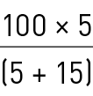 = 25 % |
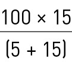 = 75 % |
100 % |
b Hypothèse n° 3 : les véhicules sont différents,
ils exercent une activité différente
Le chef d’entreprise doit tenir compte en ce cas de l’importance des catégories de coûts communs selon qu’il s’agit de l’une ou l’autre des activités.
Par exemple si les activités pratiquées sont « transport à la demande » et « messagerie », il est évident que l’activité « messagerie » (nombreux envois de faibles poids) nécessitera plus de travail de la part du personnel de bureau que le transport à la demande, il en serait de même pour les frais de téléphone. En revanche, la différence d’activité n’aurait pas d’incidence pour l’affectation des frais immobiliers.
En définitive le chef d’entreprise doit pratiquer un arbitrage qui par son expérience, doit correspondre au mieux à la réalité de son entreprise, ce qui peut donner une affectation des frais généraux telle que ci-après.
|
Véhicules |
n° 1 |
n° 2 |
Total |
|
Pourcentages |
40 % |
60 % |
100 % |
CU = Charge utile.
La clef de répartition des coûts communs peut donc être multicritères et exprimée, par exemple, par une formule mathématique complexe prenant en compte tous les critères influents.
Les coûts fixes à l’année pour le véhicule, majorés de la quote-part des coûts communs, peuvent être ensuite évalués en coûts « à la journée » par l’opération ci-après ; l’unité d’œuvre choisie étant la journée de production, nous obtenons un « terme journalier » :
= Terme journalier
Le nombre de jours d’exploitation de l’année est déterminé en fonction, soit de l’expérience, soit du marché à prendre, ou toute autre méthode d’estimation.
Nous pouvons faire l’approche :
365 jours – 104 (S + D) – 9 jours fériés = 252 jours.
(pour plus de détails, voir annexe 1)
Pour les besoins de l’analyse et selon l’activité de son entreprise, le responsable pourra décomposer le terme fixe journalier en deux parties :
– un terme journalier pour les coûts fixes relatifs au conducteur : salaire, charges sociales et fiscales, vêtements de travail, frais de déplacement, coûts de formation, et d’autres coûts tels que coût de renouvellement du permis de conduire, carte de conducteur,… C’est le TJ conducteur ;
– un terme journalier pour les coûts fixes relatifs au véhicule sans le conducteur et à la structure : tous les autres coûts fixes relatifs au véhicule et la quote-part de coûts de structure. C’est le TJ véhicule hors conducteur.
1.1.5 DIFFÉRENTES FORMULATIONS
DU COÛT DE REVIENT D’UN VÉHICULE
1.1.5.1 La formulation binôme du coût de revient
Il s’agit de l’exprimer selon deux termes :
– un terme kilométrique : TK = total des coûts variables/kilométrage productif prévisionnel annuel ;
– un terme journalier : TJ = total des coûts fixes/nombre de jours de travail prévisionnel annuel.
1.1.5.2 La formulation trinôme du coût de revient
Il est exprimé selon trois termes :
– le même terme kilométrique que dans la formulation binôme ;
– un terme journalier du conducteur : TJ Cr = total des coûts fixes afférant au conducteur/nombre de jours de travail prévisionnel annuel du véhicule ;
– un terme journalier du véhicule, hors conducteur :
TJ Vh = total des coûts fixes afférant au véhicule et à la structure/nombre de jours de travail prévisionnel annuel du véhicule.
La formulation trinôme du coût de revient est souvent pratiquée par les loueurs de véhicules industriels qui, plus ou moins occasionnellement, loue des véhicules sans conducteur.
1.1.5.3 Les formulations monômes
du coût de revient
L’objectif est d’exprimer le coût de revient du véhicule selon un seul terme.
Pour ce faire, il faut que le chef d’entreprise fasse le choix d’une unité d’œuvre qui corresponde au résultat qu’il souhaite obtenir en fonction de l’analyse qu’il veut en faire. Nous pouvons citer comme objectifs : évaluer rapidement le coût d’une prestation en le comparant à une grille de coûts interne, comparer ses coûts à la concurrence dans un même « secteur » d’activité (messagerie, tonnes transportées, mètres de plancher utilisés, transports sur palettes, déménagement, transports de conteneurs, vrac en benne,…), connaître le coût d’un véhicule selon un terme kilométrique général, un terme général à la journée, à l’heure, ou à l’année, au m3, à la « boîte » (conteneur)…
Une fois l’unité d’œuvre choisie, il faut additionner tous les coûts, variables et fixes, sur une période donnée (de préférence l’année) et les exprimer par rapport à cette unité d’œuvre.
1.1.6 SYNTHÈSE ET APPLICATION
PAR UN EXEMPLE CHIFFRÉ
Ce tableau récapitule l’ensemble des coûts variables et fixes d’un ensemble articulé, supportés au cours d’une année. Ces coûts sont ventilés selon la catégorie à laquelle ils se rattachent.
Analyse des coûts et fixation du prix de vente
G 9
|
COÛT DE REVIENT ANNUEL DU VÉHICULE N° 10………………… |
|||||||
|
COÛTS VARIABLES |
COÛTS FIXES |
||||||
|
Propres au conducteur |
Propres au véhicule |
Communs à l’entreprise (quote-part du véhicule) |
|||||
|
Carburants Lubrifiants Pneumatiques Entretien, Péages |
34 622 434 3 094
10 018 |
Salaire Charges sociales Vêtements de travail Déplacements Formation Autres |
33 591
100 10 348 140 20 |
Dotation aux amortissements OU leasing Provision pour renouvellement Frais financiers Assurance véhicule Assurance fret Impôts |
……
789 2 400 399
|
Administratif Commerciaux Financiers Immobiliers Impôts et taxes Assurances |
3 680 5 370 776 9 209 300 554 |
|
Total coûts variables |
56 868 |
Total coûts fixes conducteur |
51 565 |
Total coûts fixes véhicule, hors coûts conducteur |
19 005 |
Total quote-part coûts de structure |
19 889 |
Voici quelques données d’exploitation de cet ensemble articulé :
Kilométrage total parcouru au cours de la même année : 113 500 km, dont 10 % à vide.
Nombre de jours de production : 227 j.
Charge utile : 28,4 t avec un taux de chargement moyen en tonnes de 90 %.
L’ensemble de ces données nous permet de présenter différentes formulations du coût de revient de cet ensemble articulé et de donner des exemples d’analyse.
Kilométrage productif = 113 500 × 0,9 = 102 150 km.
Coût de revient total annuel = 56 868 + 51 565 + 19 005 + 19 889 = 147 327 € sur une année d’exploitation.
Coût de revient kilométrique général = 147 327/102 150 = 1,442 €/km ; chaque fois que ce véhicule effectue 1 km, cela coûte 1,442 € à l’entreprise pour l’ensemble de ses coûts. Le résultat est présenté avec 3 décimales (3 chiffres après la virgule) et il faut appliquer la règle de l’arrondi mathématique ; si la 4e décimale est inférieure à 5, il faut prendre la 3e décimale à sa valeur ; si la 4e décimale est égale ou supérieure à 5, il faut augmenter les décimales d’une unité.
Exemple : arrondir le résultat de cette opération à 3 décimales
47 200/52 = 907,692 307… = 907 692 car la 4e décimale est 3
47 200/55 = 858,181 818… = 858 182 car la 4e décimale est 8
Expression binôme du coût de revient :
– TK = 56 868/102 150 = 0,557 €/km
– TJ = (51 565 + 19 005 + 19 889)/227 = 398,50 €/j
Ces résultats nous permettent de calculer le coût d’un transport si nous connaissons sa durée et la distance à parcourir pour l’exécuter.
Calculons le coût d’un transport effectué sur 2 jours à une distance de 700 km :
Coût du transport = 0,557 × 700 + 398,50 × 2 = 1 186,90 €
Expression trinôme du coût de revient :
– TK = 56 868/102 150 = 0,557 €/km
– TJ Cr = 51 565/227 = 227,16 €/j
– TJ Vh = (19 005 + 19 889)/227 = 171,34 €/j
Calculons le coût du même transport effectué sur 2 jours à une distance de 700 km :
Coût du transport = 0,557 × 700 + 227,16 × 2 + 171,34 × 2 = 1 186,90 €
Nous trouvons le même résultat que précédemment, ce qui est normal car nous avons calculé le coût du transport sur les mêmes données par une méthode différente.
Coût de revient à la tonne :
– Potentiel
Si ce véhicule était toujours à 100 % de charge, il transporterait dans l’année : 28,4 × 227 = 6 446,80 t.
D’où un coût de revient potentiel = 147 327/6 446,80 = 22,853 €/tonne transportable.
– Réel
En fait, ce véhicule ne transporte en moyenne que 90 % de son potentiel, soit 6 446,80 × 0,90 = 5 802,12 t/an.
D’où un coût de revient réel = 147 327/5 802,12 = 25,392 €/tonne transportée.
Cet exemple va nous permettre de constater qu’il ne faut pas se tromper de données.
Imaginons que le chef de cette entreprise pense que le coût à répercuter sur ses clients est 22,853 € la tonne. Il va répercuter à ses clients le coût du transport de 5 802,12 t, soit 5 802,12 × 22,853 = 132 596 €, d’où un manque à gagner de 147 327 – 132 596 = 14 731 € hors marge bénéficiaire.
Autres exemples de points d’analyse : l’étude des coûts de revient permet de tirer de nombreux renseignements utiles au pilotage et à la politique commerciale de l’entreprise. Quelques exemples vont montrer ce que le dirigeant peut faire comme constats :
– Connaître l’importance (ou « le poids », ou « le pourcentage ») de chaque grande masse de coûts dans le (ou « par rapport au… », ou « en comparaison du… ») coût de revient total :
GESTION FINANCIÈRE
G 10
• importance des coûts variables = 56 868/147 327 = 0,386 0, soit 38,60 % ;
• importance des coûts fixes du conducteur = 51 565/147 327 = 0,35, soit 35 % ;
• importance des coûts fixes propres au véhicule, hors conducteur = 19 005/147 327 = 0,129 0, soit 12,90 % ;
• importance des frais généraux = 19 889/147 327 = 0,135 0, soit 13,50 %.
– Connaître « le poids » de chaque ligne de coût dans le coût total, par exemple :
• poids du carburant = 34 622/147 327 = 0,235 0, soit 23,50 % ;
• poids du coût salarial du conducteur = (33 591 + 7 366)/147 327 = 0,2780, soit 27,80 % ;
• poids du conducteur avec déplacements = (33 591 + 7 366 + 100)/147 327 = 0,278 7, soit 27,87 %.
1.2 les différents niveaux de marge
1.2.1 définition d’une marge
C’est le montant calculé qu’il reste, quand on soustrait certains coûts au chiffre d’affaires.
1.2.2 calcul des différentes marges
Il existe plusieurs niveaux de marge, les 3 principales sont :
– la marge sur coûts variables ;
– la marge sur coûts directs ;
– la marge brute.
1.2.2.1 La marge sur coûts variables
C’est le montant restant après avoir soustrait les coûts variables au chiffre d’affaires. Il est utile entre autres au calcul du seuil de rentabilité.
1.2.2.2 La marge sur coûts directs
C’est le montant restant après avoir soustrait les coûts directs (variables et fixes) au chiffre d’affaires. Sa connaissance permet d’apprécier en globalité la couverture effective des coûts de structure.
Calculée par véhicule elle donne une idée précise de la marge opérationnelle du véhicule.
1.2.2.3 La marge brute
C’est le montant restant après avoir soustrait les coûts au chiffre d’affaires. On l’appelle aussi marge bénéficiaire ou souvent par simplification : « la marge ».
La marge bénéficiaire dégagée par le véhicule résulte de la différence entre le prix de vente de la prestation transport et le coût de revient du transport. Encore faut-il que cette marge apporte une rémunération suffisante pour que l’on puisse parler de rentabilité, car tous les montants à déduire n’ont pas encore été pris en compte.
En effet, elle doit permettre de couvrir :
b L’impôt sur les bénéfices
Le bénéfice estimé d’après le prix de revient n’est pas net. L’État en prend sa part ; il est « associé » aux résultats de l’entreprise. à ce sujet, voir 4.1 : « Imposition des profits de l’entreprise ».
La marge nette correspond à la marge brute diminuée des impôts.
b Les risques et aléas
Tous les coûts prévisibles ont été inclus dans
le coût de revient, mais certains risques ne sont pas prévisibles et calculables (mauvais payeurs, accidents, litiges, amendes, crise économique…).
Il faudra donc estimer de façon empirique ces divers risques, qui viendront réduire la marge bénéficiaire.
C’est l’assemblée générale ordinaire qui décide de l’affectation en réserves libres d’une fraction de la marge nette pour couvrir les risques futurs.
b La rémunération des capitaux propres
Si l’argent que le chef d’entreprise (et ses associés en cas de société) met à disposition de l’entreprise était placé, il rapporterait des intérêts. Puisqu’il est immobilisé dans l’entreprise, celle-ci doit dégager des bénéfices suffisants pour rémunérer ces capitaux au même titre qu’un placement extérieur.
b Le profit net
Le profit net, c’est ce qui reste après déduction sur la marge bénéficiaire des impôts, des aléas, et de la rémunération des capitaux propres.
C’est le profit net qui assure la rentabilité de l’activité, et donc de l’entreprise.
Analyse des coûts et fixation du prix de vente
G 11
1.2.2.4 Tableau de calcul des marges
|
Abréviations |
|
|
+ Chiffre d’affaires – Coûts variables |
CA CV |
|
= Marges sur coûts variables – Coûts fixes directs |
MS/CV CF directs |
|
= Marge sur coûts directs – Coûts de structure |
MS/CD CS |
|
= Marge brute – Impôts = Marge nette |
Mb |
On peut donc conclure par l’égalité suivante :
CA – CV – CF directs – CS = Mb
D’où :
CA = CV + CF directs + CS + Mb
1.3 Taux de marge et taux de marque
Le taux de marge est un pourcentage de la marge par rapport au coût de revient. Ce taux permet de mieux apprécier l’importance de la marge et de faire plus facilement des comparaisons (par exemple, comparer les marges dégagées selon les mois de l’année).
1.3.1 TAUX DE MARGE
Le taux de marge est égal à la marge divisée par le coût de revient.
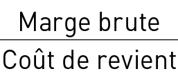 = Taux de marge
1.3.2 TAUX DE marque
Le taux de marque est égal à la marge divisée par le prix de vente.
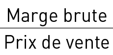 = Taux de marque
application
Si le taux de marque souhaité est de 10 % pour un coût de revient de 675 €, le prix de vente à appliquer sera de :
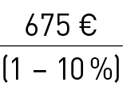 = 750 €
En effet pour un taux de marque de 10 % (sur le prix de vente) le coût de revient représente 90 % du prix de vente.
1.4 Exemple de calcul de coût de revient
(prévisions effectuées en année N)
Avertissement : les valeurs affichées ne reflètent pas la réalité et ne doivent en aucun cas être considérées comme valeurs de référence. Elles ne sont choisies qu’à titre d’exemple.
à l’issue de son étude de marché, un chef d’entreprise envisage l’acquisition d’un porteur fourgon de 19 t de poids total et de 10 t de charge utile.
Ce véhicule effectuera 110 000 km en charge par an en 250 jours de travail. Le chiffre d’affaires escompté s’élèvera à 142 000 € HT pour la 1re année.
1.4.1 COÛTS variables au kilomètre
b Carburants
Le chef d’entreprise estime que la consommation du véhicule s’élèvera à 25 l aux 100 km et que le coût moyen du litre de gazole à la pompe est évalué à 1,279 € toutes taxes comprises.
La TVA de 20 % étant récupérable, le prix hors taxe du litre de gazole sera donc de : 1,279/1,20
Le coût du carburant au kilomètre sera donc de :
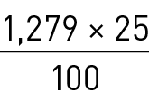 = 0,3197 €/km.
b Station-service
Pour l’huile moteur d’une part, pour l’huile de boîte de vitesses et de pont d’autre part, le chef d’entreprise calcule le coût du litre et la consommation en litres, compte tenu de la capacité des carters, de l’espacement des vidanges et des appoints entre les vidanges.
GESTION FINANCIÈRE
G 12
Entre deux vidanges, la consommation d’huile est estimée à :
– 30 l pour le moteur ;
– 12 l pour la boîte de vitesses ;
– 15 l pour le pont.
Les vidanges sont prévues tous les 10 000 km pour le moteur et tous les 30 000 km pour la boîte et le pont.
L’huile moteur revient à 1,83 € HT le litre, l’huile de boîte et pont à 2,29 € HT le litre.
Le coût des lubrifiants au kilomètre sera de :
– moteur : 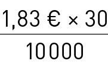 = 0,0055 €
– boîte et pont : 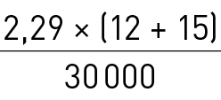 = 0,0021 €
Total : 0,0055 + 0,0021 = 0,0076 €/km.
à ce coût initial vient se rajouter le coût des opérations d’entretien courant qui sont effectuées en station-service ou dans l’atelier intégré de l’entreprise si elle en possède un. Sauf à posséder une comptabilité analytique, il est parfois délicat, voire impossible, d’isoler les différents coûts. On peut citer à titre d’exemple : des changements de filtres, le coût des lavages, de l’antigel, du remplacement des ampoules, feux, bavettes et courroies, des opérations de graissage.
Compte tenu des périodicités diverses de ces différentes opérations, on peut estimer un coût moyen de l’ordre de 0,01 €/km.
Total des coût de station-service : 0,0076 €/km + 0,01 €/km
= 0,0176 €/km.
b Pneumatiques
Compte tenu de l’activité envisagée, le chef d’entreprise estime qu’un train de pneumatiques sera usé en 120 000 km. Le véhicule est équipé de 6 pneumatiques valant 430 € hors taxe récupérable.
Le coût des pneumatiques au kilomètre sera de :
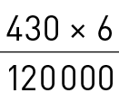 = 0,0215 €/km
b Entretien et réparations
Pour ce poste, le chef d’entreprise établit un budget kilométrique de l’entretien et des réparations.
Il évalue organe par organe, le montant des coûts et la fréquence moyenne des opérations.
Par exemple, il effectuera un échange standard du moteur pour un coût de 10 700 € à 400 000 km. Il faut prévoir 10 700 : 400 000 = 0,0268 €/km pour cette opération. Il procède ainsi pour chaque organe. Le total des coûts représente une bonne approximation du budget kilométrique entretien, réparations d’un véhicule.
Les calculs présentés à l’annexe 2 donnent un coût global de 0,0701 €/km pour notre véhicule.
Les coûts variables ainsi calculés sont récapitulées dans un tableau qui permet d’obtenir leur total au km.
Ce total est appelé terme kilométrique.
|
Véhicule n° …………………………… |
|
|
Coûts variables par km |
|
|
b Carburants b Lubrifiants b Pneumatiques b Entretien, réparations b Péages |
0,2665 0,0176 0,0215 0,0701 0,0000 |
|
Terme kilométrique |
0,3757 |
Soit à l’année 0,3757 € × 110 000 km = 41 327 €.
1.4.2 coûts fixes à l’année
propres au véhicule
b Salaires et charges du conducteur
Le chef d’entreprise conduira lui-même le véhicule. Il s’alloue une rémunération nette mensuelle de 2 500 € et la répartit à raison de 1 500 € pour son activité conduite et le reste soit 1 000 € pour son activité de direction.
Gérant d’une SARL à associé unique, il aura le statut social de travailleur indépendant : renseignements pris auprès des caisses d’assurances, il évalue ses charges sociales à 14 710 € par an. Ces charges seront réparties entre les deux activités dans les mêmes proportions que le salaire.
Le coût annuel de rémunération du conducteur s’élèvera à : 1 500 € × 12 = 18 000 €.
Les charges sociales de rémunération correspondantes s’élèveront à :
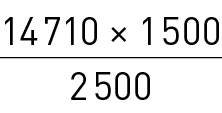 = 8 826 €.
Soit un total de 18 000 + 8 826 = 26 826 €.
b Frais de route du conducteur
Il est prévu d’utiliser le véhicule 250 jours par an, les frais de route moyens journaliers sont évalués à 18 € HT, le coût annuel s’élèvera donc à : 18 × 250 = 4 500 €.
b Taxes du véhicule
Un camion porteur de 19 t avec suspension à air est assujetti à la taxe à l’essieu. Son barème semestriel est de 62 €. Le coût annuel sera de 62 × 2 = 124 €.
Tous les 2 ans son tachygraphe devra être contrôlé pour un coût moyen de 216 € HT plus 11,60 € HT de coût de plombage, soit : (216 + 11,60) / 2 = 113,80 € HT. Chaque année la visite technique du véhicule coûte 78,50 € HT et le certificat de contrôle du limiteur de vitesse 75 € HT.
Le coût annuel des taxes est donc de :
124 + 113,80 + 78,50 + 75 = 391,30 arrondi à 391 €.
Analyse des coûts et fixation du prix de vente
G 13
b Assurances du véhicule
L’assureur contacté par le gérant indique une prime annuelle de :
1 830 € pour l’assurance aux tiers
1 524 € pour les marchandises transportées.
b Amortissement du véhicule
Le prix d’achat TTC du véhicule carrossé sera de 77 478 €. Le gérant pense l’utiliser pendant 5 ans et estime sa valeur résiduelle en fin d’utilisation à 9 600 €.
– Valeur hors taxes du véhicule :
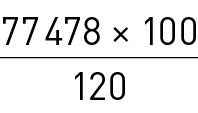 = 64 565 €
– Valeur à amortir : 64 565 € – 9 600 € = 54 965 €
– Amortissement : 54 965 : 5 = 10 993 €.
b Provision pour renouvellement
Dans 5 ans un véhicule neuf identique au véhicule actuel coûtera plus cher, cette future valeur est estimée à 68 755 € hors taxes. Il convient donc de constituer une provision pour renouvellement de : 68 755 – 64 565 = 4 190 €
soit par an 4 190 : 5 = 838 €.
b Frais financiers
voir ci-après au point 1.4.3 le chapitre « frais financiers ».
Après ces estimations, le gérant complète son tableau de coût de revient prévisionnel de la façon suivante :
|
Véhicule n° …………………………… |
|||
|
Coûts variables par km |
Coûts fixes à l’année |
||
|
b Carburants b Lubrifiants b Pneumatiques b Entretien, b Péages
Terme/km |
0,2665 0,0176 0,0215
0,0000
0,3757 |
b Rémunération b Frais de route b Taxe véhicule b Assurances : – véhicule – marchandises b Amortissement b Provision pour Total |
4 500 391
1 524 10 993
46 902 |
1.4.3 COÛTS fixes à l’année
communs à l’entreprise
b Frais administratifs
Le gérant inscrit son complément de rémunération soit :
2 500 – 1 500 = 1 000 € par mois et donc 1 000 × 12 = 12 000 € pour l’année. à cette somme, il ajoute les charges sociales correspondantes soit 14 710 – 8 826 = 5 884 €.
Il envisage de confier le secrétariat de l’entreprise à une salariée à mi-temps pour un salaire mensuel brut de 1 000 €/ mois.
La rémunération annuelle sera donc de : 1 000 × 12 = 12 000 €.
Les charges sociales estimées à 46 % s’élèveront à :
12 000 × 46/100 = 5 520 €.
Les autres coûts administratifs annuels sont estimés à 1 830 €.
Les frais administratifs s’élèveront à :
12 000 + 5 884 + 12 000 + 5 520 + 1 830 = 37 234 €.
b Frais commerciaux
Le gérant estime ces frais à 1 830 € par an.
b Frais financiers
Pour la création de l’entreprise, c’est-à-dire l’achat du véhicule, mais aussi le financement du besoin de fonds de roulement, tant par l’emprunt que par l’escompte, et après consultation de son banquier, le gérant évalue les frais financiers à 4 400 € par an.
à noter que s’il ne devait financer que le véhicule, les frais financiers auraient dû être pris en compte dans les coûts fixes propres au véhicule.
b Frais immobiliers
L’activité ne nécessitera qu’un bureau situé dans le pavillon du gérant. Celui-ci évalue le coût à 1 220 € par an.
b Impôts communs
Après consultation de son expert-comptable, le gérant évalue ce coût à 915 € par an (contribution économique territoriale et impôt foncier pour une pièce du pavillon).
b Assurances communes
Le gérant souscrit une assurance « responsabilité civile chef d’entreprise » et une assurance couvrant les risques « vols et incendie » pour un coût annuel de 490 €.
Le gérant complète la grille du coût de revient prévisionnel du véhicule (voir tableau ci-dessous).
L’entreprise ne disposera au départ que de ce véhicule, en conséquence il devra supporter la totalité des coûts communs.
Les coûts fixes annuels du véhicule seront donc de :
46 902 € + 46 089 € = 92 991 €.
Le budget total annuel du coût de revient est de :
41 327 € + 46 902 € + 46 089 € = 134 318 €
Le véhicule étant utilisé pendant 250 jours dans l’année, le coût à la journée, ou terme journalier sera de :
92 991 € : 250 jours = 371,96 €/jour.
Ces coûts fixes ramenés au km s’élèveront à :
92 991 € : 110 000 km = 0,8454 €/km.
GESTION FINANCIÈRE
G 14

Le Prix de revient kilométrique (PRK) est obtenu en totalisant le terme kilométrique aux coûts fixes par kilomètre, soit :
0,3757 + 0,8454 = 1,2211 €/km.
Observation
Dans l’hypothèse de l’acquisition ultérieure d’un second véhicule, les coûts de structure augmenteraient « légèrement » ce qui aurait pour effet bénéfique de diminuer la quote-part de frais généraux de chaque véhicule, et donc de réduire leur coût de revient. Dans le vocabulaire financier, on dit que l’entreprise « fait des économies d’échelle », dues à sa nouvelle dimension. Ce phénomène atteint ses limites quand le développement de l’entreprise devient à tel point important que la structure doit elle-même se développer et que cela engendre une augmentation plus qu’habituelle des coûts de structure, entraînant de ce fait une augmentation importante de la quote-part supportée par chaque véhicule.
1.4.4 Marge bénéficiaire
La marge bénéficiaire résulte de la différence entre le prix de vente du marché et le coût de revient du véhicule.
Cette marge peut être déterminée soit au kilomètre, soit à l’année.
Si nous reprenons l’exemple qui précède :
110 000 km par an en 250 jours de travail pour un chiffre d’affaires annuel de 142 000 € HT.
b Le prix de vente au km est de :
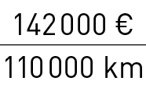 = 1,2909 €/km.
b La marge bénéficiaire est donc de :
1,2909 – 1,2211 = 0,07 €/km.
b Le taux de marque est :
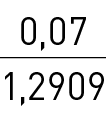 = 0,0542 = 5,42 %
L’activité proposée est-elle rentable ? Il est bien difficile de le dire à partir de cette donnée kilométrique ; en effet comment chiffrer au kilomètre les risques et aléas, l’intérêt du capital investi… Il est plus lisible de raisonner à l’année.
b Coût de revient à l’année : 134 318 €
b Marge bénéficiaire annuelle : 142 000 – 134 318 = 7 682 €
Rentabilité (la marge est-elle suffisante ?)
b Détermination de l’impôt
Le gérant pense opter pour l’Imposition des sociétés (IS), dont un des taux actuels est de 15 % selon le chiffre d’affaires annuel. L’impôt sera donc de :
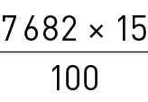 = 1 152,30 € arrondi à 1 152 €
b Risques et aléas
Compte tenu des polices d’assurances qu’il a souscrites, le gérant estime que les risques sont limités et qu’il peut raisonnablement les chiffrer à 3 050 €/an.
b Intérêt du capital investi
Le gérant estime que s’il plaçait ses capitaux à l’extérieur, cela lui rapporterait 2 290 €/an d’intérêts.
b Profit net
La marge dégagée de 7 682 € permet-elle de couvrir ces trois postes et de dégager un profit net ?
Profit net = marge bénéficiaire – impôt sur les bénéfices – risques et aléas – intérêt du capital investi.
Profit net : 7 682 – 1 152 – 3 050 – 2 290 = 1 190 €.
L’activité dégage un profit net, elle est donc rentable.
Ce profit net représente 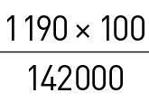 = 0,00838 = 0,84 % du CA.
Analyse des coûts et fixation du prix de vente
G 15
1.5 Le seuil de rentabilité
1.5.1 Définition du seuil de rentabilité
Pour une entreprise, atteindre le seuil de rentabilité, aussi appelé « point mort », ou « point zéro », consiste à ne faire ni bénéfice, ni perte. Pour cela, l’entreprise doit réaliser un chiffre d’affaires, appelé « chiffre d’affaires critique » :
– si le chiffre d’affaires réellement réalisé pour l’année est inférieur au chiffre d’affaires critique : l’entreprise est en perte ;
– si le chiffre d’affaires réellement réalisé pour l’année est supérieur au chiffre d’affaires critique : l’entreprise est bénéficiaire.
1.5.2 Notion de marge sur coûts variables
On appelle marge sur coûts variables, la différence entre le chiffre d’affaires (prix de vente des prestations réalisées) et les coûts variables du travail générés par les services vendus.
Si nous prenons l’exemple suivant :
Chiffre d’affaires (CA) :125 301 €
Coûts variables (CV) :41 305 €
Coûts fixes directs et de structure (CF) :69 223 €
La marge sur coûts variables (Ms/CV) est de 83 996 €.
La marge sur coûts variables couvre tous les coûts fixes affectés à un véhicule ainsi que la Marge bénéficiaire (Mb) dégagée selon le schéma suivant :
|
CA activité location :125 301 € |
|
CV :– 41 305 € |
|
Ms/CV =83 996 € |
|
CF :– 69 223 € |
|
Mb =14 773 € |
On peut donc résumer par l’égalité suivante :
CA – CV = Ms/CV = CF + Mb
On peut en tirer la relation fondamentale :
marge sur coûts variables – coûts fixes = marge brute
Ms/CV – CF = Mb
Les coûts variables, proportionnels aux kilomètres parcourus, sont aussi proportionnels au chiffre d’affaires. On en déduit donc que la marge sur coûts variables est elle-même proportionnelle au chiffre d’affaires.
Le rapport entre la marge sur coûts variables et le chiffre d’affaires sera donc constant et, dans notre exemple, il est de :
=
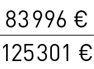 = 0,67035 soit 67,04 %.
Cela signifie également que :
83 996 € = 125 301 € × 0,67035 €
et aussi :
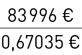 = 125 301 € (arrondi).
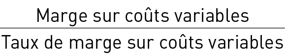 = chiffre d’affaires
Le rapport appelé « taux de marge sur coûts variables » signifie que pour 1 euro de chiffre d’affaires, il reste 0,67035 € de marge sur coûts variables.
1.5.3 Calcul du seuil de rentabilité
1.5.3.1 Méthode dite « comptable »
Si l’on considère la relation fondamentale rappelée ci-dessus, en se souvenant que l’objectif est d’atteindre un résultat « zéro »,
marge sur coûts variables – coûts fixes = 0
il est possible de dire :
marge sur coûts variables = coûts fixes
Pour obtenir le chiffre d’affaires critique « CAC », nous remplacerons la marge sur coûts variables par les coûts fixes, pour obtenir la formule :
CAC = coûts fixes / taux de marge sur coûts variables
Soit dans notre exemple : 69 223 / 67,04 % = 103 256 €
Avec un prix de vente moyen au kilomètre pour le service de location de 1,1391 €, le seuil de rentabilité sera atteint au bout de :
103 256 / 1,1391 = 90 647,002 km arrondi à 90 647 km
Tous les kilomètres effectués au-delà confirmeront le bénéfice généré à chaque kilomètre.
1.5.3.2 Méthode dite « transport »
Chaque fois qu’un kilomètre est parcouru, cela génère un chiffre d’affaires et un coût variable au kilomètre. Ceci produit une marge sur coûts variables au kilomètre.
CA – CV = Ms/CV
La marge sur coûts variables au kilomètre permettra dès le début de l’exercice et jusqu’ à l’atteinte du seuil de rentabilité, de financer les coûts fixes (voir chapitre 1.5.2).
« Combien de fois trouvera-t-on cette marge sur coûts variables dans la somme de coûts fixes à couvrir, soit combien de kilomètres seront parcourus jusqu’à l’atteinte du seuil de rentabilité ? »
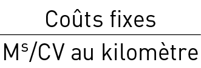 =
GESTION FINANCIÈRE
G 16
Dans l’exemple :
Prix de vente au kilomètre = 1,1391 €
Terme kilométrique = 0,3755 €
Marge sur coûts variables au kilomètre =
Prix de vente au kilomètre – terme kilométrique =
1,1391 – 0,3755 = 0,7636 €
Soit dans l’exemple :
Seuil de rentabilité en kilomètres =
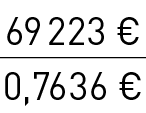 = 90 653,483 km arrondis à 90 653 km
Seuil de rentabilité en euros (CAC) =
90 653 kilomètres × 1,1391 € = 103 263 €
1.5.3.3 Méthode dite « d’exploitation »
La totalité de la marge sur coûts variables représente
les coûts fixes + la marge brute.
CF + Mb = Ms/CV
On recherche le pourcentage de ces coûts fixes par rapport à la marge sur coûts variables annuels et nous obtiendrons un pourcentage d’exploitation permettant de calculer les différents seuils de rentabilité.
Rapporté à chaque chiffre annuel, ce pourcentage indiquera le seuil de rentabilité de chacun de ces indicateurs :
=
Soit dans l’exemple :
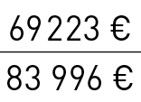 = 0,82412 soit 82,412 %
Seuil de rentabilité en kilomètres
= 110 000 km × 82,412 % = 90 653 km
Seuil de rentabilité en chiffre d’affaires
= 125 301 € × 82,412 % = 103 263 €
Seuil de rentabilité en jours
= 365 j × 82,412 % = 301 jours
Seuil de rentabilité en jours de production
= 250 j × 82,412 % = 206 jours
1.5.4 Représentation graphique
Les calculs peuvent se vérifier à l’aide d’un graphique.
Dans celui-ci nous poserons en ordonnée les euros générés par l’exploitation et en abscisse les unités d’exploitation produites.
La somme des coûts fixes et des coûts variables forme le coût de revient représenté en cumul par la droite du terme kilométrique.
Elle coupe la droite représentant le chiffre d’affaires au kilomètre au point mort, c’est-à-dire au seuil de rentabilité.
En conclusion :
si CA = CR alors SR atteint
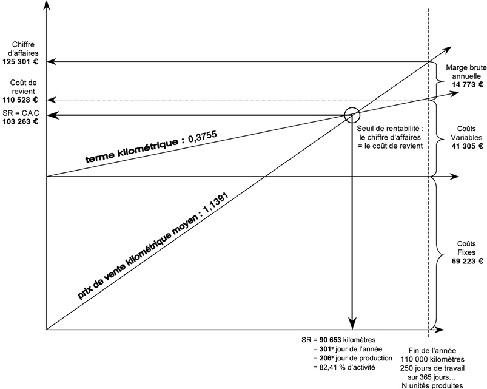
plan de financement
et de trésorerie
2
GESTION FINANCIÈRE
G 18
2.1 LE PLAN DE FINANCEMENT
Le plan de financement (modèle du plan comptable général en annexe 3 et 3 bis) a pour objet de prévoir le financement des besoins de l’entreprise sur une durée plus ou moins importante, souvent à moyen terme, sur une durée de 3 à 5 ans.
On cherchera en fait à déterminer le montant et la nature des ressources à mettre en place, afin d’assurer la couverture des besoins d’investissement et des besoins de fonds de roulement, en comparant les ressources prévisionnelles aux besoins prévisionnels.
Le plan de financement permet également d’apprécier l’incidence, sur la trésorerie, des décisions d’investissement et de financement. On le compare également à un plan de trésorerie à moyen et long termes.
Sur un exercice on l’appelle aussi tableau de financement. Ce tableau est comparable à un bilan de création avec une partie pour les emplois et une autre pour les ressources.
Ce tableau de financement est indispensable pour les créateurs d’entreprise, il leur permet de comptabiliser sur court et moyen terme les ressources à mettre en regard des besoins prévus.
Il en existe plusieurs modèles.
2.1.1 Les ressources prévisionnelles
Ce sont celles que l’entreprise est capable de mobiliser pour un prévisionnel, ou celles qu’elle a déjà mobilisées pour une période observée.
2.1.1.1 L’apport de capitaux
2.1.1.1.1 L’augmentation de capital social
par apports des associés ou de nouveaux associés
On parle aussi « d’injection d’argent frais ».
2.1.1.1.2 Les apports en comptes courants
Les associés ont la possibilité de contribuer financièrement aux besoins de l’entreprise sans pour autant inscrire cette somme au capital social.
2.1.1.2 La capacité d’autofinancement
Il s’agit du potentiel d’autofinancement dégagé par l’activité de l’entreprise.
(voir ce sujet au point 3.3.2.9)
2.1.1.3 Les cessions d’actif
Ce sont les ventes d’immobilisations.
2.1.1.4 Les ressources diverses
Ce sont, par exemple, les subventions d’investissements, certaines primes d’équipement…
2.1.1.5 Les emprunts
Ce sont principalement les emprunts auprès des établissements de crédit, contractés ou à contracter pour assurer le financement du programme.
2.1.1.6 La diminution du besoin
en fonds de roulement
Généralement, le besoin en fonds de roulement diminue lorsqu’il y a une diminution des délais d’encaissement des créances sur les clients et/ou une augmentation des délais de paiement des dettes aux fournisseurs et/ou une baisse d’activité et/ou une diminution des stocks… Ceci mobilise moins de trésorerie pour travailler et permet de créer un effet d’excédent. Pour les créances clients et les dettes aux fournisseurs, les calculs sont TTC.
(voir ce sujet au point 3.3.3.2)
2.1.2 Les besoins prévisionnels
2.1.2.1 Les investissements
2.1.2.1.1 Les investissements
liés au programme à financer
Ces investissements sont généralement liés au développement de l’activité de l’entreprise. Ils sont toujours exprimés HT.
2.1.2.1.2 Les investissements
liés au renouvellement des immobilisations
Ces investissements correspondent au renouvellement des immobilisations existantes. Ils sont toujours exprimés HT.
2.1.2.2 Les retraits des comptes courants
Il s’agit tout simplement du retrait, par les associés, des sommes leur appartenant ayant été laissées à la disposition de l’entreprise.
2.1.2.3 Les dividendes
C’est la part des résultats nets que l’assemblée générale a décidé de distribuer.
2.1.2.4 Les remboursements des emprunts
Il s’agit du remboursement des emprunts en cours. Seule la part « capital » est prise en compte. En effet, les intérêts et frais sont pris en compte au travers du compte de résultat.
2.1.2.5 L’augmentation
du besoin en fonds de roulement
Généralement, l’augmentation du besoin en fonds de roulement est générée par un accroissement de l’activité et également par l’évolution des délais d’encaissement ou de paiement.
Nous rappelons que pour les créances clients et les dettes aux fournisseurs, les calculs sont faits TTC.
(voir ce sujet au point 3.3.3.2)
2.1.3 Modèle de plan de financement
Lorsque le total des ressources est supérieur au total des besoins, un excédent de ressources est dégagé au cours de l’exercice. Dans le cas contraire, il y a insuffisance de ressources. Le cumul des excédents et/ou insuffisances constatés sur chaque exercice nous donne la trésorerie de fin d’exercice.
Plan de financement et de trésorerie
G 19
Plan de financement
|
BESOINS |
RESSOURCES |
|
Investissements Investissements Retrait des comptes Distribution de dividendes Remboursement Augmentation du besoin |
Augmentation de capital Apports en comptes Capacité Cessions d’actif Ressources diverses Emprunts Diminution du besoin |
|
TOTAL DES BESOINS |
TOTAL DES RESSOURCES |
|
Solde de trésorerie positive (ressources – besoins) |
Ou solde de trésorerie négative (besoins – ressources) |
2.1.4 Exemple
Précision préalable : les principes financiers différencient :
– Le plan de financement initial, fait au point 0 de l’entreprise, qui permet d’avoir une vue d’ensemble des besoins à financer pour démarrer une nouvelle activité. L’objectif de ce plan de financement initial est de faire un point précis des ressources à apporter pour faire face aux besoins de démarrage de l’activité ;
– Le plan de financement sur plusieurs années (pluriannuel), qui permet, à partir du plan de financement initial, d’analyser si les ressources et besoins nécessaires à l’activité sont en équilibre pour assurer la pérennité de la nouvelle entité.
Dans notre exemple, par simplification, nous confondrons en un seul tableau le plan de financement initial et le premier plan annuel du plan de financement pluriannuel.
Prenons le cas simplifié d’une création d’entreprise pour laquelle les prévisions sont les suivantes :
Année 1
CA : 403 990 € HT
Coûts variables : 140 253 € HT
Coûts périodiques hors frais financiers : 243 918 €* (dont 51 833 € de dotations aux amortissements à rapprocher de l’investissement ci-après de 259 163 €) (pour les notions sur les amortissements, voir point 3.2.3)
*Nous considérerons qu’il n’y a pas de TVA sur ce poste.
Investissements nécessaires : 259 163 € HT (amortissement linéaire sur 5 ans).
Après avoir présenté et défendu leur projet auprès de différents établissements financiers, les associés ont obtenu la proposition suivante : financement des investissements sur 5 ans par le biais d’un emprunt à hauteur de 182 939 € HT, au taux de 5,86 % l’an, représentant des annuités de 42 295 €, dont 5 707 € de frais financiers, en moyenne.
Pour simplifier les calculs, nous apprécierons le besoin en fonds de roulement uniquement au travers des délais de règlement par les clients s’élevant en moyenne à 70 jours et des délais de paiement aux fournisseurs (calculés uniquement sur les coûts variables) s’élevant en moyenne à 35 jours.
Compte tenu de ces précisions, le résultat prévisionnel de l’année 1 s’élèvera à :
CA – (coûts variables + coûts périodiques + frais financiers), soit
403 990 – (140 253 + 243 918 + 5 707) = 14 112 € avant impôt
14 112 × 15 % = 2 117 € (impôt sur les sociétés)
14 112 – 2 117 = 11 995 € (résultat net)
Afin d’établir le plan de financement, nous allons définir d’une part les besoins, d’autre part les ressources nécessaires à la couverture de ces besoins.
Les besoins :
} Les investissements :259 163 €
} Le besoin en fonds de roulement BFR :
– créances sur clients
(403 990 × 1,20)/360 × 70 =94 264 €
qui correspondent au CA TTC, ramené à 70 jours
– dettes aux fournisseurs
(140 253 × 1,20)/360 × 35 =16 363 €
qui correspondent aux achats variables de l’année TTC ramenés à 35 jours
– TVA sur ventes
(403 990 × 0,20)/360 × 100 =22 444 €
qui correspondent à la TVA collectée sur (70 + 30) jours, car une fois qu’elle a été collectée, elle est reversée à l’État le mois suivant soit 30 jours en moyenne ; cette dette envers l’État constitue donc une ressource.
– TVA sur coûts variables
(140 253 × 0,20)/360 × 65 =5 065 €
qui correspondent à la TVA payée sur (35 + 30) jours, car une fois qu’elle a été payée, elle est récupérée auprès de l’État le mois suivant soit 30 jours en moyenne ; cette créance sur l’État constitue donc un besoin.
– l’impôt sur les sociétés étant décaissé l’année suivante constitue donc une ressource pour 2 117 €.
D’où BFR = besoins – ressources = créances sur clients TTC + TVA sur coûts variables – dettes aux fournisseurs – TVA sur ventes – impôt dû, soit
94 264 + 5 065 – 16 363 – 22 444 – 2 117 =58 405 €
} Le remboursement de l’emprunt
(part capital) : 42 295 – 5 707 =36 588 €
Les ressources :
} L’emprunt :182 939 €
} La capacité d’autofinancement (CAF) = résultat net + dotations aux amortissements, soit
CAF = 11 995 + 51 833 =63 828 €
GESTION FINANCIÈRE
G 20
Formalisons ces données en tableau :
Plan de financement année 1
|
BESOINS |
RESSOURCES |
||
|
Investissement Remboursement emprunt BFR |
259 163 €
58 405 € |
Apport des associés CAF Emprunt |
63 828 € 182 939 € |
|
TOTAL DES BESOINS |
354 156 € |
TOTAL DES RESSOURCES |
354 156 € |
|
Trésorerie |
0 € |
Trésorerie |
0 € |
Les ressources et les besoins s’équilibrent mais ne permettent pas de dégager une trésorerie. Cependant, et c’est rassurant, le BFR, créé par le décalage entre les encaissements clients et les décaissements fournisseurs de consommables est financé par les ressources prévues.
Nous pouvons constater au point 2.2.2 ci-après l’évolution de cette trésorerie au cours des différents mois.
Avertissement : les écarts de quelques euros constatés entre les soldes de trésorerie calculés dans les différents plans de financement et ceux constatés à la fin des différents plans de trésorerie simulés à la suite du point 2.2.2 proviennent des arrondis dans les calculs.
Année 2 : concernant l’année 2, aucun changement particulier n’est prévu.
Les nouveaux besoins se réduisent au remboursement de l’emprunt (2e annuité).
Il n’y a pas de variation de fonds de roulement (FDR) car le fonds de roulement est le même ; d’où variation de FDR = FDR année 1 – FDR année 2 = 0.
Les nouvelles ressources se réduisent à la CAF dégagée lors de l’année 2, qui est la même que celle de l’année 1. D’où :
Plan de financement année 2
|
BESOINS |
RESSOURCES |
||
|
Remboursement emprunt (part capital) Variation du BFR |
0 € |
CAF |
63 828 € |
|
TOTAL DES BESOINS |
|
TOTAL DES RESSOURCES |
|
|
Variation de trésorerie (total ressources – total besoins) |
|
||
|
Trésorerie (trésorerie initiale + ou – variation de trésorerie) |
|
||
Les ressources étant supérieures aux besoins permettent de dégager une trésorerie de fin d’exercice de 27 240 €.
Année 3 : concernant l’année 3, les prévisions sont les suivantes :
Les délais de paiement clients passent à 90 jours. L’augmentation des délais de paiement clients de 20 jours entraînera donc une augmentation du BFR de l’ordre de :
Variation du crédit client (403 990 × 1,20)/360 × 20
= 26 933 €
Variation de la TVA sur ventes (403 990 × 0,20)/360 × 20
= 4 489 €
26 933 – 4 489 = 22 444 € (variation du BFR)
(voir les raisonnements pour l’année 1)
Les nouveaux besoins sont : le remboursement de l’emprunt (3e annuité) ; la variation de FDR calculée ci-dessus.
Les nouvelles ressources se réduisent à la CAF dégagée lors de l’année 3, qui est la même que celle des années 1 et 2. D’où :
Plan de financement année 3
|
BESOINS |
RESSOURCES |
||
|
Remboursement emprunt (part capital) Variation du BFR |
22 444 € |
CAF |
63 828 € |
|
TOTAL DES BESOINS |
|
TOTAL DES RESSOURCES |
|
|
Variation de trésorerie (total ressources – total besoins) |
|
||
|
Trésorerie (trésorerie initiale + ou – variation de trésorerie) |
|
||
Malgré une augmentation des délais d’encaissement des clients, les ressources restent supérieures aux besoins, ce qui permet de dégager un excédent de trésorerie de 4 796 € augmentant d’autant le solde de trésorerie.
Année 4 : les prévisions concernant l’année 4 portent sur les éléments suivants :
Chiffre d’affaires : 541 194 € HT
Coûts variables : 210 380 € HT
Coûts périodiques hors frais financiers : 301 271 €* (dont 67 078 € de dotations aux amortissements)
*Nous considérerons qu’il n’y a pas de TVA sur ce poste
Investissements nécessaires : 60 980 € HT (amortissement linéaire sur 4 ans).
Les associés décident d’apporter 30 490 € par le biais du compte courant. Cependant, ils souhaitent retirer ce compte courant à l’issue de l’année 5.
Concernant les délais de paiement clients et fournisseurs, aucun changement prévu.
Compte tenu de ces évolutions, le résultat prévisionnel de l’année 4 s’élèvera à (voir les raisonnements pour l’année 1) :
Plan de financement et de trésorerie
G 21
CA – (coûts variables + coûts périodiques + frais financiers), soit
541 194 – (210 380 + 301 271 + 5 707) = 23 836 € avant impôt
23 836 × 15 % = 3 575 € (impôt sur les sociétés)
23 836 – 3 575 = 20 261 € (résultat net).
Les besoins s’élèveront à :
} investissements :60 980 €
} variation du besoin en fonds de roulement :
– crédit clients
[(541 194 – 403 990) × 1,2]/360 × 90 =41 161 €
– crédit fournisseurs
[(210 380 – 140 253) × 1,2]/360 × 35 =8 181 €
– TVA sur ventes
[(541 194 – 403 990) × 0,2]/360 × 120 =9 147 €
– TVA sur coûts variables
[(210 380 – 140 253) × 0,2)]/360 × 65 =2 532 €
– impôt sur les sociétés (3 575 – 2 117) =1 458 €
– soit la variation BFR = 41 161 – 8 181 – 9 147 + 2 532 – 1 458 =24 907 €
} remboursement de l’emprunt en cours
(part capital) :36 588 €
Les ressources :
} apport en compte courant :30 490 €
} capacité d’autofinancement :
20 261 + 67 078 =87 339 €
} trésorerie de fin d’exercice 3 :32 036 €
D’où :
Plan de financement année 4
|
BESOINS |
RESSOURCES |
||
|
Investissement Remboursement emprunt (part capital) Variation du BFR |
60 980 €
24 907 € |
Apports en comptes courants CAF |
30 490 €
|
|
TOTAL DES BESOINS |
|
TOTAL DES RESSOURCES |
|
|
Variation de trésorerie (total ressources – total besoins) |
|
||
|
Trésorerie (trésorerie initiale + ou – variation de trésorerie) |
|
||
Nous constatons un manque de ressources de 4 646 € par rapport aux besoins évalués. Malgré cela, l’entreprise termine l’année 4 avec une trésorerie positive due au solde important en début d’année.
Année 5 : concernant l’année 5, aucun changement n’est prévu. D’où :
Plan de financement année 5
|
BESOINS |
RESSOURCES |
||
|
Remboursement des comptes courants Remboursement emprunt (part capital) |
30 490 €
|
CAF |
87 339 € |
|
TOTAL DES BESOINS |
|
TOTAL DES RESSOURCES |
|
|
Variation de trésorerie (total ressources – total besoins) |
|
||
|
Trésorerie (trésorerie initiale + ou – variation de trésorerie) |
|
||
Les ressources permettent de couvrir aisément les besoins et de dégager une trésorerie de fin d’exercice qui vient en conséquence améliorer encore la trésorerie initiale.
Ce plan de financement pluriannuel montre que, malgré quelques difficultés au cours des années 1 et 4 qui se sont ressenties par leur incidence sur la trésorerie, les décisions de financement ont permis de couvrir les investissements, mais aussi, sauf au cours de l’année 4, les besoins de fonds de roulement provoqués par le décalage important entre les délais d’encaissement accordés aux clients et ceux négociés avec les fournisseurs. Ces décisions ont eu un effet positif sur la trésorerie dont la tendance est plutôt à la hausse. Il sera intéressant de voir mois après mois l’évolution de cette trésorerie, à mettre en parallèle avec les différentes décisions décrites tout au long du présent exercice sur le plan de financement.
2.2 PLAN DE TRÉSORERIE PRÉVISIONNELLE
On l’appelle très souvent « budget de trésorerie », dans le sens où il sert à prévoir les futurs décaissements et encaissements de l’entreprise.
Ce plan de trésorerie prévisionnel permet de projeter, sur un ou plusieurs exercice(s), la situation de trésorerie de l’entreprise.
Son rôle consiste donc en l’enregistrement de l’ensemble des entrées ou encaissements (flux financiers entrants) TTC et des sorties ou décaissements (flux financiers sortants) TTC, permettant d’obtenir, par différence, soit un excédent (trésorerie positive) soit au contraire un besoin (trésorerie négative).
GESTION FINANCIÈRE
G 22
Ces mouvements de flux seront obligatoirement analysés, afin d’entreprendre les actions judicieuses et adaptées conduisant à un équilibrage de la trésorerie.
En règle générale, l’ensemble des opérations de l’entreprise est analysé en sous-opérations :
– d’exploitation ;
– d’investissement ;
– financières.
Pratiquement, on le décompose en 3 budgets :
– le budget des encaissements ;
– le budget des décaissements ;
– le budget de TVA.
Il est nécessaire, lors de son élaboration, de tenir compte des faits générateurs de la TVA pour imputer celle-ci correctement dans le calcul de la TVA à payer.
2.2.1 Modèle de plan de trésorerie
prévisionnelle
(Voir tableau ci-dessous)
|
J |
F |
M |
A |
M |
J |
J |
A |
S |
O |
N |
D |
|
|
1. Solde de trésorerie initial |
||||||||||||
|
EXPLOITATION (TTC) Ventes Autres produits d’exploitation |
||||||||||||
|
2. Total des encaissements d’exploitation |
||||||||||||
|
Achats Salaires et charges sociales Autres charges TVA à payer |
||||||||||||
|
3. Total des décaissements d’exploitation |
||||||||||||
|
4. Solde des opérations d’exploitation (2 – 3) |
||||||||||||
|
INVESTISSEMENTS Investissements TTC TVA déductible sur immobilisations Cessions |
||||||||||||
|
5. Solde des opérations d’investissement |
||||||||||||
|
FINANCIER Augmentation des dettes financières Remboursement des dettes financières |
||||||||||||
|
Variation des dettes financières |
||||||||||||
|
Produits financiers Charges financières |
||||||||||||
|
6. Solde des opérations financières |
||||||||||||
|
7. Variation de trésorerie de la période (4 + 5 + 6) |
||||||||||||
|
8. Solde de trésorerie de fin de période (1 + 7) |
Plan de financement et de trésorerie
G 23
2.2.2 Simulation
d’un plan de trésorerie
(se reporter aux différents plans de trésorerie ci-après)
Afin de comprendre le mécanisme général et les liens existant entre le plan de financement et le plan de trésorerie, la simulation sera réalisée à partir des mêmes données que le plan de financement étudié précédemment.
Il est précisé que les ventes et les achats annuels sont répartis également sur les mois de l’année en tenant compte des contraintes posées dans l’énoncé des données. Par exemple, le fait que les clients soient encaissés au bout d’un délai moyen de 70 jours la 1re année a comme conséquence que les 1ers encaissements ont lieu au mois de mars à partir du 11, soit 20 jours d’encaissement.
2.2.3 Commentaires des différents
plans de trésorerie développés
Le solde de trésorerie à la fin de chaque mois de décembre est égal, à quelques euros près (à cause des arrondis des calculs), au solde de trésorerie calculé lors de chaque plan de financement au point 2.1 précédent.
En analysant les différents plans de trésorerie, nous pouvons constater plus précisément l’incidence des prévisions faites par cette entreprise sur l’évolution mensuelle de la trésorerie.
Cette vision mois après mois de l’évolution prévisionnelle de la trésorerie permet de prendre, les décisions conséquentes (apport de ressources, recours à l’escompte, recours au découvert, factoring, placements, report des distributions de dividendes, renégociation des délais « clients » et/ou « fournisseurs », renégociation des emprunts,…).
GESTION FINANCIÈRE
G 24
|
(Nota : afin de rendre plus lisibles les tableaux, nous avons arrondi les chiffres, |
||||||||||||
|
janv. |
fév. |
mars |
avril |
mai |
juin |
juillet |
août |
sept. |
oct. |
nov. |
déc. |
|
|
Solde de trésorerie initiale |
0 |
–40 200 |
–71 419 |
–78 043 |
–19 571 |
–17 124 |
–14 677 |
–12 230 |
–9 784 |
–7 337 |
–4 890 |
–2 443 |
|
EXPLOITATION CA TTC |
0 |
0 |
26 933 |
40 399 |
40 399 |
40 399 |
40 399 |
40 399 |
40 399 |
40 399 |
40 399 |
40 399 |
|
Total encaissements d’exploitation |
0 |
0 |
26 933 |
40 399 |
40 399 |
40 399 |
40 399 |
40 399 |
40 399 |
40 399 |
40 399 |
40 399 |
|
Coûts variables TTC Coûts périodiques TTC Coûts périodiques HT TVA à verser |
0 0 16 483 0 |
11 688 0 16 483 0 |
14 025 0 16 483 0 |
14 025 0 16 483 203 |
14 025 0 16 483 4 396 |
14 025 0 16 483 4 396 |
14 025 0 16 483 4 396 |
14 025 0 16 483 4 396 |
14 025 0 16 483 4 396 |
14 025 0 16 483 4 396 |
14 025 0 16 483 4 396 |
14 025 0 16 483 4 396 |
|
Total décaissements d’exploitation |
16 483 |
28 171 |
30 508 |
30 711 |
34 903 |
34 903 |
34 903 |
34 903 |
34 903 |
34 903 |
34 903 |
34 903 |
|
SOLDE des opérations d’exploitation |
–16 483 |
–28 171 |
–3 575 |
9 688 |
5 496 |
5 496 |
5 496 |
5 496 |
5 496 |
5 496 |
5 496 |
5 496 |
|
INVESTISSEMENTS Investissements HT TVA payée sur investissement TVA récupérée sur investissement |
259 163 51 833 0 |
0 0 0 |
0 0 0 |
0 0 51 833 |
0 0 0 |
0 0 0 |
0 0 0 |
0 0 0 |
0 0 0 |
0 0 0 |
0 0 0 |
0 0 0 |
|
SOLDE des opérations d’investissement |
–310 996 |
0 |
0 |
51 833 |
0 |
0 |
0 |
0 |
0 |
0 |
0 |
0 |
|
FINANCIER Augmentation des dettes financières Apports des associés Remboursement des dettes financières |
182 939 107 389 3 049 |
0 0 3 049 |
0 0 3 049 |
0 0 3 049 |
0 0 3 049 |
0 0 3 049 |
0 0 3 049 |
0 0 3 049 |
0 0 3 049 |
0 0 3 049 |
0 0 3 049 |
0 0 3 049 |
|
SOLDE des opérations financières |
287 279 |
–3 049 |
–3 049 |
–3 049 |
–3 049 |
–3 049 |
–3 049 |
–3 049 |
–3 049 |
–3 049 |
–3 049 |
–3 049 |
|
Variation de trésorerie de la période |
–40 200 |
–31 220 |
–6 624 |
58 472 |
2 447 |
2 447 |
2 447 |
2 447 |
2 447 |
2 447 |
2 447 |
2 447 |
|
Impôt sur les sociétés |
0 |
0 |
0 |
0 |
0 |
0 |
0 |
0 |
0 |
0 |
0 |
0 |
|
Solde de trésorerie de fin de période |
–40 200 |
–71 419 |
–78 043 |
–19 571 |
–17 124 |
–14 677 |
–12 230 |
–9 784 |
–7 337 |
–4 890 |
–2 443 |
3 |
|
BUDGET DE TVA ANNÉE 1 |
||||||||||||
|
janv. |
fév. |
mars |
avril |
mai |
juin |
juillet |
août |
sept. |
oct. |
nov. |
déc. |
|
|
TVA sur ventes CA |
0 |
0 |
0 |
4 489 |
6 733 |
6 733 |
6 733 |
6 733 |
6 733 |
6 733 |
6 733 |
6 733 |
|
TOTAL TVA sur ventes |
0 |
0 |
0 |
4 489 |
6 733 |
6 733 |
6 733 |
6 733 |
6 733 |
6 733 |
6 733 |
6 733 |
|
TVA sur achats Coûts variables |
0 |
0 |
1 948 |
2 338 |
2 338 |
2 338 |
2 338 |
2 338 |
2 338 |
2 338 |
2 338 |
2 338 |
|
TOTAL TVA sur achats |
0 |
0 |
1 948 |
2 338 |
2 338 |
2 338 |
2 338 |
2 338 |
2 338 |
2 338 |
2 338 |
2 338 |
|
Créance de TVA |
0 |
0 |
1 948 |
0 |
0 |
0 |
0 |
0 |
0 |
0 |
0 |
0 |
|
TVA à payer |
0 |
0 |
0 |
203 |
4 396 |
4 396 |
4 396 |
4 396 |
4 396 |
4 396 |
4 396 |
4 396 |
NB : Les résultats sont arrondis, par conséquent des écarts peuvent subsister par rapport au plan de trésorerie.
Précisions :
La TVA sur investissement est récupérée en une fois au mois d’avril.
Les ventes et les achats sont répartis également tous les mois, proratisés au nombre de jours d’encaissement ou de décaissement au cours de chaque mois. Par exemple, au mois de mars, il n’y a que 20 jours d’encaissement des clients à cause du délai de 70 jours accordé avant encaissement, soit CA × 1,2/360 × 20 = 403 990 × 1,2/360 × 20 = 26 933.
CA × 1,2 donne le CA TTC ; puis ramené à 1 jour en divisant par 360 jours (année comptable = 30 jours × 12 mois = 360 jours), et enfin multiplié par 20 pour obtenir le CA TTC encaissé sur 20 jours.
Concernant le remboursement des dettes financières, il s’agit du remboursement du capital emprunté, en l’occurrence 36 588 € annuels (selon données au point 2.1.4 : annuité de 42 295 €, dont 5 707 de frais financiers) ramenés au mois, soit 36 588/12 = 3 049 €.
Points remarquables :
L’incidence des mouvements de la TVA liée à l’investissement sur les mois de janvier et avril.
L’incidence du délai d’encaissement des premiers clients de janvier à mars.
La tendance à l’amélioration de la trésorerie malgré les fluctuations au cours du 1er trimestre, ce qui tendrait à démontrer que les prévisions de financement sont de bons choix.
Plan de financement et de trésorerie
G 25
|
PLAN DE TRÉSORERIE ANNÉE 2 |
||||||||||||
|
janv. |
fév. |
mars |
avril |
mai |
juin |
juillet |
août |
sept. |
oct. |
nov. |
déc. |
|
|
Solde de trésorerie initiale |
3 |
2 450 |
4 897 |
5 227 |
7 674 |
10 120 |
12 567 |
15 014 |
17 461 |
19 907 |
22 354 |
24 801 |
|
EXPLOITATION CA TTC |
40 399 |
40 399 |
40 399 |
40 399 |
40 399 |
40 399 |
40 399 |
40 399 |
40 399 |
40 399 |
40 399 |
40 399 |
|
Total encaissements d’exploitation |
40 399 |
40 399 |
40 399 |
40 399 |
40 399 |
40 399 |
40 399 |
40 399 |
40 399 |
40 399 |
40 399 |
40 399 |
|
Coûts variables TTC Coûts périodiques TTC Coûts périodiques HT TVA à verser |
14 025 0 16 483 4 395 |
14 025 0 16 483 4 396 |
14 025 0 16 483 4 396 |
14 025 0 16 483 4 396 |
14 025 0 16 483 4 396 |
14 025 0 16 483 4 396 |
14 025 0 16 483 4 396 |
14 025 0 16 483 4 396 |
14 025 0 16 483 4 396 |
14 025 0 16 483 4 396 |
14 025 0 16 483 4 396 |
14 025 0 16 483 4 396 |
|
Total décaissements d’exploitation |
34 903 |
34 903 |
34 903 |
34 903 |
34 903 |
34 903 |
34 903 |
34 903 |
34 903 |
34 903 |
34 903 |
34 903 |
|
SOLDE des opérations d’exploitation |
5 496 |
5 496 |
5 496 |
5 496 |
5 496 |
5 496 |
5 496 |
5 496 |
5 496 |
5 496 |
5 496 |
5 496 |
|
INVESTISSEMENTS Investissements HT TVA payée sur investissement TVA récupérée sur investissement |
0 0 0 |
0 0 0 |
0 0 0 |
0 0 0 |
0 0 0 |
0 0 0 |
0 0 0 |
0 0 0 |
0 0 0 |
0 0 0 |
0 0 0 |
0 0 0 |
|
SOLDE des opérations d’investissement |
0 |
0 |
0 |
0 |
0 |
0 |
0 |
0 |
0 |
0 |
0 |
0 |
|
FINANCIER Augmentation des dettes financières Apports des associés Remboursement des dettes financières |
0 0 3 049 |
0 0 3 049 |
0 0 3 049 |
0 0 3 049 |
0 0 3 049 |
0 0 3 049 |
0 0 3 049 |
0 0 3 049 |
0 0 3 049 |
0 0 3 049 |
0 0 3 049 |
0 0 3 049 |
|
SOLDE des opérations financières |
–3 049 |
–3 049 |
–3 049 |
–3 049 |
–3 049 |
–3 049 |
–3 049 |
–3 049 |
–3 049 |
–3 049 |
–3 049 |
–3 049 |
|
Variation de trésorerie de la période |
2 447 |
2 447 |
2 447 |
2 447 |
2 447 |
2 447 |
2 447 |
2 447 |
2 447 |
2 447 |
2 447 |
2 447 |
|
Impôt sur les sociétés |
0 |
0 |
2 117 |
0 |
0 |
0 |
0 |
0 |
0 |
0 |
0 |
0 |
|
Solde de trésorerie de fin de période |
2 450 |
4 897 |
5 227 |
7 674 |
10 120 |
12 567 |
15 014 |
17 461 |
19 907 |
22 354 |
24 801 |
27 248 |
|
BUDGET DE TVA ANNÉE 2 |
||||||||||||
|
janv. |
fév. |
mars |
avril |
mai |
juin |
juillet |
août |
sept. |
oct. |
nov. |
déc. |
|
|
TVA sur ventes CA |
6 733 |
6 733 |
6 733 |
6 733 |
6 733 |
6 733 |
6 733 |
6 733 |
6 733 |
6 733 |
6 733 |
6 733 |
|
TOTAL TVA sur ventes |
6 733 |
6 733 |
6 733 |
6 733 |
6 733 |
6 733 |
6 733 |
6 733 |
6 733 |
6 733 |
6 733 |
6 733 |
|
TVA sur achats Coûts variables |
2 338 |
2 338 |
2 338 |
2 338 |
2 338 |
2 338 |
2 338 |
2 338 |
2 338 |
2 338 |
2 338 |
2 338 |
|
TOTAL TVA sur achats |
2 338 |
2 338 |
2 338 |
2 338 |
2 338 |
2 338 |
2 338 |
2 338 |
2 338 |
2 338 |
2 338 |
2 338 |
|
Créance de TVA |
0 |
0 |
0 |
0 |
0 |
0 |
0 |
0 |
0 |
0 |
0 |
0 |
|
TVA à payer |
4 395 |
4 396 |
4 396 |
4 396 |
4 396 |
4 396 |
4 396 |
4 396 |
4 396 |
4 396 |
4 396 |
4 396 |
Point remarquable :
Aucun autre point à relever que l’évolution positive de la trésorerie à la fin de chaque période mensuelle, ce qui confirme les commentaires faits pour l’année 1.
GESTION FINANCIÈRE
G 26
|
PLAN DE TRÉSORERIE ANNÉE 3 |
||||||||||||
|
janv. |
fév. |
mars |
avril |
mai |
juin |
juillet |
août |
sept. |
oct. |
nov. |
déc. |
|
|
Solde de trésorerie initiale |
27 248 |
29 695 |
32 142 |
5 539 |
12 381 |
14 921 |
17 368 |
19 814 |
22 261 |
24 708 |
27 155 |
29 601 |
|
EXPLOITATION CA TTC |
40 399 |
40 399 |
13 466 |
40 399 |
40 399 |
40 399 |
40 399 |
40 399 |
40 399 |
40 399 |
40 399 |
40 399 |
|
Total encaissements d’exploitation |
40 399 |
40 399 |
13 466 |
40 399 |
40 399 |
40 399 |
40 399 |
40 399 |
40 399 |
40 399 |
40 399 |
40 399 |
|
Coûts variables TTC Coûts périodiques TTC Coûts périodiques HT TVA à verser |
14 025 0 16 483 4 395 |
14 025 0 16 483 4 396 |
14 025 0 16 483 4 396 |
14 025 0 16 483 0 |
14 025 0 16 483 4 303 |
14 025 0 16 483 4 396 |
14 025 0 16 483 4 396 |
14 025 0 16 483 4 396 |
14 025 0 16 483 4 396 |
14 025 0 16 483 4 396 |
14 025 0 16 483 4 396 |
14 025 0 16 483 4 396 |
|
Total décaissements d’exploitation |
34 903 |
34 903 |
34 903 |
30 508 |
34 810 |
34 903 |
34 903 |
34 903 |
34 903 |
34 903 |
34 903 |
34 903 |
|
SOLDE des opérations d’exploitation |
5 496 |
5 496 |
–21 437 |
9 891 |
5 589 |
5 496 |
5 496 |
5 496 |
5 496 |
5 496 |
5 496 |
5 496 |
|
INVESTISSEMENTS Investissements HT TVA payée sur investissement TVA récupérée sur investissement |
0 0 0 |
0 0 0 |
0 0 0 |
0 0 0 |
0 0 0 |
0 0 0 |
0 0 0 |
0 0 0 |
0 0 0 |
0 0 0 |
0 0 0 |
0 0 0 |
|
SOLDE des opérations d’investissement |
0 |
0 |
0 |
0 |
0 |
0 |
0 |
0 |
0 |
0 |
0 |
0 |
|
FINANCIER Augmentation des dettes financières Apports des associés Remboursement des dettes financières |
0 0 3 049 |
0 0 3 049 |
0 0 3 049 |
0 0 3 049 |
0 0 3 049 |
0 0 3 049 |
0 0 3 049 |
0 0 3 049 |
0 0 3 049 |
0 0 3 049 |
0 0 3 049 |
0 0 3 049 |
|
SOLDE des opérations financières |
–3 049 |
–3 049 |
–3 049 |
–3 049 |
–3 049 |
–3 049 |
–3 049 |
–3 049 |
–3 049 |
–3 049 |
–3 049 |
–3 049 |
|
Variation de trésorerie de la période |
2 447 |
2 447 |
–24 486 |
6 842 |
2 540 |
2 447 |
2 447 |
2 447 |
2 447 |
2 447 |
2 447 |
2 447 |
|
Impôt sur les sociétés |
0 |
0 |
2 117 |
0 |
0 |
0 |
0 |
0 |
0 |
0 |
0 |
0 |
|
Solde de trésorerie de fin de période |
29 695 |
32 142 |
5 539 |
12 381 |
14 921 |
17 368 |
19 814 |
22 261 |
24 708 |
27 155 |
29 601 |
32 048 |
|
BUDGET DE TVA ANNÉE 3 |
||||||||||||
|
janv. |
fév. |
mars |
avril |
mai |
juin |
juillet |
août |
sept. |
oct. |
nov. |
déc. |
|
|
TVA sur ventes CA |
6 733 |
6 733 |
6 733 |
2 244 |
6 733 |
6 733 |
6 733 |
6 733 |
6 733 |
6 733 |
6 733 |
6 733 |
|
TOTAL TVA sur ventes |
6 733 |
6 733 |
6 733 |
2 244 |
6 733 |
6 733 |
6 733 |
6 733 |
6 733 |
6 733 |
6 733 |
6 733 |
|
TVA sur achats Coûts variables |
2 338 |
2 338 |
2 338 |
2 338 |
2 338 |
2 338 |
2 338 |
2 338 |
2 338 |
2 338 |
2 338 |
2 338 |
|
TOTAL TVA sur achats |
2 338 |
2 338 |
2 338 |
2 338 |
2 338 |
2 338 |
2 338 |
2 338 |
2 338 |
2 338 |
2 338 |
2 338 |
|
Créance de TVA |
0 |
0 |
0 |
93 |
0 |
0 |
0 |
0 |
0 |
0 |
0 |
0 |
|
TVA à payer |
4 395 |
4 396 |
4 396 |
0 |
4 303 |
4 396 |
4 396 |
4 396 |
4 396 |
4 396 |
4 396 |
4 396 |
Points remarquables :
Chute spectaculaire de la trésorerie au mois de mars, consécutive au changement du délai d’encaissement des clients. Les clients servis en début d’année ne paient plus à 70 jours, mais à 90 jours. Les 13 466 € encaissés en mars proviennent des derniers clients du mois de décembre de l’année précédente, soit 10 jours de CA ; il n’y a plus d’encaissement ensuite jusqu’au mois d’avril où sont encaissés les clients du mois de janvier.
Les bonnes décisions qui ont été évoquées pour les 2 premières années permettent à la trésorerie de reprendre son ascension jusqu’à la fin de l’année.
Plan de financement et de trésorerie
G 27
|
PLAN DE TRÉSORERIE ANNÉE 4 |
||||||||||||
|
janv. |
fév. |
mars |
avril |
mai |
juin |
juillet |
août |
sept. |
oct. |
nov. |
déc. |
|
|
Solde de trésorerie initiale |
32 048 |
–11 700 |
–18 607 |
–27 825 |
–8 816 |
–4 290 |
237 |
4 763 |
9 290 |
13 816 |
18 343 |
22 869 |
|
EXPLOITATION CA TTC |
40 399 |
40 399 |
40 399 |
54 119 |
54 119 |
54 119 |
54 119 |
54 119 |
54 119 |
54 119 |
54 119 |
54 119 |
|
Total encaissements d’exploitation |
40 399 |
40 399 |
40 399 |
54 119 |
54 119 |
54 119 |
54 119 |
54 119 |
54 119 |
54 119 |
54 119 |
54 119 |
|
Coûts variables TTC Coûts périodiques TTC Coûts périodiques HT TVA à verser |
14 025 0 19 992 4 395 |
19 869 0 19 992 4 396 |
21 038 0 19 992 3 422 |
21 038 0 19 992 3 227 |
21 038 0 19 992 5 514 |
21 038 0 19 992 5 514 |
21 038 0 19 992 5 514 |
21 038 0 19 992 5 514 |
21 038 0 19 992 5 514 |
21 038 0 19 992 5 514 |
21 038 0 19 992 5 514 |
21 038 0 19 992 5 514 |
|
Total décaissements d’exploitation |
38 412 |
44 257 |
44 452 |
44 257 |
46 544 |
46 544 |
46 544 |
46 544 |
46 544 |
46 544 |
46 544 |
46 544 |
|
SOLDE des opérations d’exploitation |
1 987 |
–3 858 |
–4 053 |
9 862 |
7 576 |
7 576 |
7 576 |
7 576 |
7 576 |
7 576 |
7 576 |
7 576 |
|
INVESTISSEMENTS Investissements HT TVA payée sur investissement TVA récupérée sur investissement |
60 980 12 196 0 |
0 0 0 |
0 0 0 |
0 0 12 196 |
0 0 0 |
0 0 0 |
0 0 0 |
0 0 0 |
0 0 0 |
0 0 0 |
0 0 0 |
0 0 0 |
|
SOLDE des opérations d’investissement |
–73 176 |
0 |
0 |
12 196 |
0 |
0 |
0 |
0 |
0 |
0 |
0 |
0 |
|
FINANCIER Augmentation des dettes financières Apports des associés Remboursement des dettes financières |
0 30 490 3 049 |
0 0 3 049 |
0 0 3 049 |
0 0 3 049 |
0 0 3 049 |
0 0 3 049 |
0 0 3 049 |
0 0 3 049 |
0 0 3 049 |
0 0 3 049 |
0 0 3 049 |
0 0 3 049 |
|
SOLDE des opérations financières |
27 441 |
–3 049 |
–3 049 |
–3 049 |
–3 049 |
–3 049 |
–3 049 |
–3 049 |
–3 049 |
–3 049 |
–3 049 |
–3 049 |
|
Variation de trésorerie de la période |
–43 748 |
–6 907 |
–7 102 |
19 009 |
4 527 |
4 527 |
4 527 |
4 527 |
4 527 |
4 527 |
4 527 |
4 527 |
|
Impôt sur les sociétés |
0 |
0 |
2 117 |
0 |
0 |
0 |
0 |
0 |
0 |
0 |
0 |
0 |
|
Solde de trésorerie de fin de période |
–11 700 |
–18 607 |
–27 825 |
–8 816 |
–4 290 |
237 |
4 763 |
9 290 |
13 816 |
18 343 |
22 869 |
27 396 |
|
BUDGET DE TVA ANNÉE 4 |
||||||||||||
|
janv. |
fév. |
mars |
avril |
mai |
juin |
juillet |
août |
sept. |
oct. |
nov. |
déc. |
|
|
TVA sur ventes CA |
6 733 |
6 733 |
6 733 |
6 733 |
9 020 |
9 020 |
9 020 |
9 020 |
9 020 |
9 020 |
9 020 |
9 020 |
|
TOTAL TVA sur ventes |
6 733 |
6 733 |
6 733 |
6 733 |
9 020 |
9 020 |
9 020 |
9 020 |
9 020 |
9 020 |
9 020 |
9 020 |
|
TVA sur achats Coûts variables |
2 338 |
2 338 |
3 312 |
3 506 |
3 506 |
3 506 |
3 506 |
3 506 |
3 506 |
3 506 |
3 506 |
3 506 |
|
TOTAL TVA sur achats |
2 338 |
2 338 |
3 312 |
3 506 |
3 506 |
3 506 |
3 506 |
3 506 |
3 506 |
3 506 |
3 506 |
3 506 |
|
Créance de TVA |
0 |
0 |
0 |
0 |
0 |
0 |
0 |
0 |
0 |
0 |
0 |
0 |
|
TVA à payer |
4 395 |
4 396 |
3 422 |
3 227 |
5 514 |
5 514 |
5 514 |
5 514 |
5 514 |
5 514 |
5 514 |
5 514 |
Points remarquables :
Le nouvel investissement et sa TVA, en partie autofinancés, font chuter la trésorerie ; l’apport des associés permet de limiter cette chute, d’autant plus que cette dernière est accentuée par le développement de l’activité de l’entreprise qui entraîne une augmentation des charges et des recettes. L’effet des charges sur la trésorerie se fait ressentir plus tôt que celui des recettes du fait des délais décalés des paiements (comptant pour les charges fixes, à 35 jours pour les charges variables) par rapport aux encaissements (à 90 jours).
La trésorerie redevient positive à fin juin pour reprendre une courbe ascendante, démontrant à nouveau que les décisions de financement sont bonnes.
GESTION FINANCIÈRE
G 28
|
janv. |
fév. |
mars |
avril |
mai |
juin |
juillet |
août |
sept. |
oct. |
nov. |
déc. |
|
|
Solde de trésorerie initiale |
27 396 |
31 922 |
36 449 |
37 400 |
41 927 |
46 453 |
50 980 |
55 506 |
60 033 |
64 559 |
69 086 |
73 612 |
|
EXPLOITATION CA TTC |
54 119 |
54 119 |
54 119 |
54 119 |
54 119 |
54 119 |
54 119 |
54 119 |
54 119 |
54 119 |
54 119 |
54 119 |
|
Total encaissements d’exploitation |
54 119 |
54 119 |
54 119 |
54 119 |
54 119 |
54 119 |
54 119 |
54 119 |
54 119 |
54 119 |
54 119 |
54 119 |
|
Coûts variables TTC Coûts périodiques TTC Coûts périodiques HT TVA à verser |
21 038 0 19 992 5 514 |
21 038 0 19 992 5 514 |
21 038 0 19 992 5 514 |
21 038 0 19 992 5 514 |
21 038 0 19 992 5 514 |
21 038 0 19 992 5 514 |
21 038 0 19 992 5 514 |
21 038 0 19 992 5 514 |
21 038 0 19 992 5 514 |
21 038 0 19 992 5 514 |
21 038 0 19 992 5 514 |
21 038 0 19 992 5 514 |
|
Total décaissements d’exploitation |
46 544 |
46 544 |
46 544 |
46 544 |
46 544 |
46 544 |
46 544 |
46 544 |
46 544 |
46 544 |
46 544 |
46 544 |
|
SOLDE des opérations d’exploitation |
7 575 |
7 576 |
7 576 |
7 576 |
7 576 |
7 576 |
7 576 |
7 576 |
7 576 |
7 576 |
7 576 |
7 576 |
|
INVESTISSEMENTS Investissements HT TVA payée sur investissement TVA récupérée sur investissement |
0 0 0 |
0 0 0 |
0 0 0 |
0 0 0 |
0 0 0 |
0 0 0 |
0 0 0 |
0 0 0 |
0 0 0 |
0 0 0 |
0 0 0 |
0 0 0 |
|
SOLDE des opérations d’investissement |
0 |
0 |
0 |
0 |
0 |
0 |
0 |
0 |
0 |
0 |
0 |
0 |
|
FINANCIER Augmentation des dettes financières Apports des associés Remboursement des dettes financières Remboursement des comptes courants |
0 0 3 049 0 |
0 0 3 049 0 |
0 0 3 049 0 |
0 0 3 049 0 |
0 0 3 049 0 |
0 0 3 049 0 |
0 0 3 049 0 |
0 0 3 049 0 |
0 0 3 049 0 |
0 0 3 049 0 |
0 0 3 049 0 |
0 0 3 049 30 490 |
|
SOLDE des opérations financières |
–3 049 |
–3 049 |
–3 049 |
–3 049 |
–3 049 |
–3 049 |
–3 049 |
–3 049 |
–3 049 |
–3 049 |
–3 049 |
–33 539 |
|
Variation de trésorerie de la période |
4 526 |
4 527 |
4 527 |
4 527 |
4 527 |
4 527 |
4 527 |
4 527 |
4 527 |
4 527 |
4 527 |
–25 964 |
|
Impôt sur les sociétés |
0 |
0 |
3 575 |
0 |
0 |
0 |
0 |
0 |
0 |
0 |
0 |
0 |
|
Solde de trésorerie de fin de période |
31 922 |
36 449 |
37 400 |
41 927 |
46 453 |
50 980 |
55 506 |
60 033 |
64 559 |
69 086 |
73 612 |
47 649 |
|
BUDGET DE TVA ANNÉE 5 |
||||||||||||
|
janv. |
fév. |
mars |
avril |
mai |
juin |
juillet |
août |
sept. |
oct. |
nov. |
déc. |
|
|
TVA sur ventes CA |
9 020 |
9 020 |
9 020 |
9 020 |
9 020 |
9 020 |
9 020 |
9 020 |
9 020 |
9 020 |
9 020 |
9 020 |
|
TOTAL TVA sur ventes |
9 020 |
9 020 |
9 020 |
9 020 |
9 020 |
9 020 |
9 020 |
9 020 |
9 020 |
9 020 |
9 020 |
9 020 |
|
TVA sur achats Coûts variables |
3 506 |
3 506 |
3 506 |
3 506 |
3 506 |
3 506 |
3 506 |
3 506 |
3 506 |
3 506 |
3 506 |
3 506 |
|
TOTAL TVA sur achats |
3 506 |
3 506 |
3 506 |
3 506 |
3 506 |
3 506 |
3 506 |
3 506 |
3 506 |
3 506 |
3 506 |
3 506 |
|
Créance de TVA |
0 |
0 |
0 |
0 |
0 |
0 |
0 |
0 |
0 |
0 |
0 |
0 |
|
TVA à payer |
5 514 |
5 514 |
5 514 |
5 514 |
5 514 |
5 514 |
5 514 |
5 514 |
5 514 |
5 514 |
5 514 |
5 514 |
Points remarquables :
La bonne santé de la trésorerie de cette entreprise, et de son exploitation probablement, se confirme.
Il est constaté une baisse sensible de la trésorerie en décembre du fait du remboursement aux associés du prêt qu’ils avaient fait en janvier de l’année 4. Malgré cela, la trésorerie passe de 31 922 € à fin janvier à 47 649 € à fin décembre.
Si ce plan de trésorerie se tenait sur les 5 années, ainsi que le plan de financement vu au point précédent, il serait nécessaire que de nouvelles décisions soient prises pour assurer l’avenir. Nous pouvons citer, sans que cette liste soit exhaustive :
– nouveaux investissements et/ou renouvellement d’immobilisations ;
– développement de l’activité ;
– adoption d’une politique de placement de l’argent ;
– distribution de dividendes ;
– gestion des catégories de coûts ;
– révision des délais clients et/ou fournisseurs…
Plan de financement et de trésorerie
G 29
2.3 LES MOYENS ET LES SOURCES DE FINANCEMENT
« LE NERF DE LA GUERRE »
Dans toute activité, comment trouver suffisamment de finances pour permettre à l’entreprise de réaliser ses projets et atteindre ses objectifs ?
Sans penser que c’est un conflit perpétuel, le chef d’entreprise doit en permanence s’assurer des financements, des investissements et de l’activité de l’entreprise. Pour cela il doit mesurer la pertinence des différentes solutions qui s’offrent à lui.
Cette pertinence est mesurée entre autres par le plan de financement (partie 2.1 de ce chapitre) et le plan de trésorerie (partie 2.2 de ce chapitre).
Mais encore par la connaissance de ces moyens, de ce qui les conditionne, de leur calcul, ou de leur comparaison.
On peut les regrouper dans 2 grandes catégories de moyens d’acquisition :
– les Achats ;
– les Locations.
Mais aussi trier dans ces moyens les sources ayant contribué au financement. Les ressources ainsi trouvées permettront des emplois en investissement ou en fonds de roulement.
2.3.1 LES ACHATS
2.3.1.1 Les moyens propres de l’entreprise
C’est la capacité d’autofinancement calculée annuellement qui permettra au chef d’entreprise de connaître les ressources mobilisables pour l’investissement et/ou le fonds de roulement (voir paragraphe 3.3.2.9).
2.3.1.2 L’appel aux propriétaires du fonds
Deux solutions peuvent être envisagées.
2.3.1.2.1 L’augmentation de capital
Elle permet d’augmenter les moyens propres de l’entreprise en améliorant les ratios d’analyse d’indépendance financière et du fonds de roulement. Elle a le mérite de conforter la valeur de l’entreprise. Cette augmentation est décidée en assemblée générale et peut être
réservée aux propriétaires ou faire entrer dans le capital de nouveaux partenaires. Comme pour les créations d’entreprise, elle peut donner droit à des réductions d’impôts.
2.3.1.2.2 Le Compte courant d’associé (CCA)
C’est une créance envers l’associé.
Il s’agit ici, d’un compte sur lequel figurent :
– les sommes dues par la société à l’associé et auxquelles celui-ci renonce temporairement (salaire, remboursement de frais, paiement d’une facture, règlement de dividendes, règlement d’intérêts) ;
– les sommes déposées volontairement par l’associé pour améliorer la trésorerie de l’entreprise.
Cette créance ne supporte pas le même risque que l’apport en capital, elle est remboursable sauf cas particuliers en cas de difficultés commerciales et financières. L’associé peut en demander le remboursement à tout moment si les statuts ne prévoient aucune règle particulière ou si aucune convention n’a été signée entre l’entreprise et l’associé. L’entreprise peut rémunérer ces comptes dans la limite d’un taux d’intérêt fixé par l’état pour la déduction fiscale.
2.3.1.3 Les emprunts
Ils nécessitent une confiance du prêteur envers l’emprunteur. Cela se fait entre autres par des sûretés (voir partie A – Chapitre 2.3.5) mais aussi par la présentation de comptes prévisionnels. Pour un investissement, le montant des amortissements doit couvrir le montant des remboursements, sinon l’emprunteur prend le risque d’amputer son résultat. Les emprunts pour fonds de roulement ne sont distribués que très parcimonieusement par les banques.
Nous présenterons ici 3 modèles d’emprunts :
– par remboursement à capital constant ;
– par remboursement en sommes constantes ;
– in fine (prononcé « ine finé »).
Pour le remboursement d’un emprunt, le taux d’intérêt qui est donné est toujours annuel et doit être adapté à la période de calcul du remboursement. Les intérêts sont toujours calculés sur la somme restant due à la date du paiement et au prorata de la période de calcul. La périodicité des remboursements est généralement mensuelle mais peut être calculée sur toute autre période : trimestre, année…
2.3.1.3.1 Remboursement à capital constant
Très peu utilisé de nos jours par les organismes prêteurs. La somme globale empruntée est divisée par le nombre de périodes et additionnée du montant des intérêts pour former la somme à rembourser.
Exemple
K (capital) = 27 500 € ; i (intérêts) = 6 % ;
n (durée) = 5 ans ; p (périodicité) = l’année.
Tableau d’emprunt
|
Année |
Capital |
Capital |
Intérêts |
Annuités |
|
1 |
27 500 € |
5 500 € |
1 650 € |
7 150 € |
|
2 |
22 000 € |
5 500 € |
1 320 € |
6 820 € |
|
3 |
16 500 € |
5 500 € |
990 € |
6 490 € |
|
4 |
11 000 € |
5 500 € |
660 € |
6 160 € |
|
5 |
5 500 € |
5 500 € |
330 € |
5 830 € |
|
Totaux |
0 |
4 950 € |
31 950 € |
Nota : le calcul global des intérêts est : [(K × i) × (n + 1)]/ 2
27 500 € × 6 % × (5 + 1) = 4 950 €
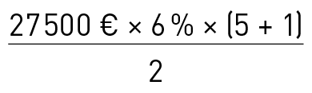 = 4 950 €
GESTION FINANCIÈRE
G 30
2.3.1.3.2 Remboursement en sommes constantes
C’est le plus couramment utilisé. Le calcul est plus difficile, car il faut recalculer la part d’intérêts payés à chaque échéance et en déduire le calcul du capital remboursé pour obtenir celui restant dû. Une formule mathématique permet de calculer le montant de chaque échéance en fonction de la périodicité.
Exemple
K (capital emprunté) = 27 500 €
i (taux d’intérêts) = 6 %
n (durée) = 5 ans
p (périodicité) = l’année
Calcul de l’annuité A = (K × i) /[ 1 – (1 + i ) – n]
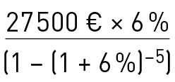 = 6 528,40 €
Nota : le taux d’intérêt utilisé est celui correspondant à la période.
Tableau d’emprunt
|
Capital |
Annuités |
Intérêts |
K remboursé |
|
27 500,00 € |
6 528,40 € |
27 500 × 6 % = 1 650,00 € |
6 528,40 – 1 650 = 4 878,40 € |
|
27 500 – 4 878,40 22 621,60 € |
6 528,40 € |
22 621,60 × 6 % = 1 357,30 € |
6 528,40 – 1 357,30 = 5 171,10 € |
|
22 621,60 – 5 171,10 17 450,50 € |
6 528,40 € |
17 450,50 × 6 % = 1 047,03 € |
6 528,40 – 1 047,03 = 5 481,37 € |
|
17 450,50 – 5 481,37 11 969,13 € |
6 528,40 € |
11 969,13 × 6 % = 718,15 € |
6 528,40 – 718,15 = 5 810,25 € |
|
11 969,13 – 5 810,25 6 158,88 € |
6 528,40 € |
6 158,88 × 6 % = 369,52 € |
6 528,40 – 369,52 = 6 158,88 € |
|
Totaux |
32 642,00 € |
5 142,00 € |
27 500 € |
2.3.1.3.3 L’emprunt in fine
Il est principalement réservé aux professionnels, notamment investisseur en immobilier. L’emprunteur paie les intérêts à chaque échéance et rembourse le capital avec la dernière échéance. Les banques sont réticentes à effectuer ce genre de prêt si l’emprunteur ne s’engage pas à effectuer un placement pendant la même période d’un montant souvent équivalent à l’emprunt. L’intérêt de cette opération étant pour l’emprunteur de déduire de ses comptes les intérêts payés et de réduire le coût de son opération par encaissement d’intérêts sur son placement.
Exemple
K (capital emprunté) = 27 500 €
i (taux d’intérêts) = 6 %
n (durée) = 5 ans
p (périodicité) = l’année
Tableau d’emprunt
|
Capital restant dû |
Montant remboursé |
|
27 500,00 € |
(i) 1 650,00 € |
|
27 500,00 € |
(i) 1 650,00 € |
|
27 500,00 € |
(i) 1 650,00 € |
|
27 500,00 € |
(i) 1 650,00 € |
|
27 500,00 € |
(K + i) 29 150,00 € |
|
Total |
35 750,00 € |
2.3.1.4 Les subventions d’investissement
Très rares en transport de marchandises. Elles existent ponctuellement selon les orientations politiques du moment. Souvent, elles permettent d’orienter l’investissement des entreprises, notamment sur des matériels ou des modes de transport moins polluants. Une subvention peut être accordée par une collectivité ou par une autre entreprise. Elle peut aussi être conditionnée à la réalisation d’un objet ou à une durée d’existence. Les sommes des subventions d’investissement sont inscrites au passif du bilan et rapportées au produit du compte de résultat au même rythme que l’amortissement du bien. Ces subventions peuvent être remboursables en cas de non-réalisation des conditions d’utilisation.
2.3.2 Les locations
L’attrait principal de cette méthode est l’absence d’investissement et donc l’allégement des bilans au niveau des ressources (passif). Le bien loué est rendu à son point de départ et doit être utilisé en « bon père de famille » (Code civil).
2.3.2.1 La location traditionnelle
Elle est couramment utilisée dans les opérations de courte durée. Elle permet de pallier rapidement un manque de moyen ponctuel. En général son coût est plus élevé que d’autres solutions.
Cette forme de location comprend tous les services qui peuvent être associés (entretien, véhicule de remplacement, assurance avec ou sans franchise…). Elle ne comprend jamais dans le contrat de base la conduite, les péages et les réparations dues à une usure anormale.
2.3.2.2 La location longue durée
Généralement le contrat prévoit des durées supérieures à 1 an. Tous les services associés peuvent être négociés avec le loueur. Quelquefois il est possible d’avoir des contrats dits « full options » incluant jusqu’à l’assurance véhicule.
Le coût de cette location est sensiblement inférieur à la location traditionnelle. Cela tient au fait que dans le calcul du coût de revient du matériel la durée de répartition des coûts fixes est plus grande.
Plan de financement et de trésorerie
G 31
Pour toute location supérieure à 6 mois le coût de la Contribution économique territoriale (CET) est à la charge du locataire.
2.3.2.3 La location financière
C’est l’opération par laquelle un financier met à disposition d’un client un bien que ce client a choisi. Il loue un bien à l’utilisateur qui reste responsable de son choix. Le contrat est signé pour une durée comprenant le paiement complet du prix du bien. L’intérêt du loueur étant de raccourcir au maximum la durée pour minimiser son risque et récupérer ses fonds le plus rapidement possible. L’intérêt du locataire étant de répartir les loyers sur une durée très proche de la durée d’usage du bien. Ces contrats peuvent donner lieu à option d’achat finale.
Graphique relationnel de l’opération de location
1. Devis pro forma.
2. Contrat de location.
3. Contrat de vente.
De nombreux constructeurs possèdent leur propre organisme de financement et associent à ces contrats un contrat de maintenance constructeur qui garantit le suivi du bon état du bien. C’est un engagement à long terme hors bilan qui doit figurer dans les annexes des comptes sociaux des entreprises.
2.3.2.4 Le crédit-bail
Nous ne présentons ici que les règles simples du crédit-bail permettant de le comparer aux autres formes de financement. C’est un contrat de location adossé à un contrat de vente. Il est comparable à la location financière avec une nuance d’importance : l’option d’achat finale est fixée dans le contrat initial. C’est un engagement à long terme hors bilan qui doit figurer dans les annexes des comptes sociaux des entreprises.
Dans la pratique, le futur locataire négocie un taux de crédit-bail qui représente les risques de l’opération.
Ce taux varie aussi avec l’option d’achat final ; le coût du bien multiplié par ce taux donne le loyer mensuel.
Exemple de coût de crédit-bail
Coût d’un véhicule = 85 000 €
Taux de crédit-bail = 1,89 %
Durée de location = 5 ans
Option d’achat finale = 10 %
Loyer mensuel
85 000 € × 1,89 % = 1 606,50 €
Option d’achat finale
85 000 € × 10 % = 8 500 €
Coût global de la location
1 606,50 € × 60 mois = 96 390 €
Coût total avec achat
96 390 € + 8 500 € = 104 890 €
Coût du crédit-bail avec achat
104 890 € – 85 000 € = 19 890 €
2.3.2.5 La location avec conducteur
De courte ou longue durée, elle ne peut être exercée que par des entreprises de location de véhicules industriels avec conducteur destinés au transport public routier de marchandises inscrites au registre électronique national des entreprises de transport par route. Le locataire est le transporteur et le véhicule effectue les transports sous sa responsabilité. Le loueur est responsable des opérations de conduite et du bon fonctionnement du véhicule.
Comptes de fin d’exercice
3
Comptes de fin d’exercice
G 35
3.1 Les comptes de fin d’exercice
3.1.1 LA MéCANIQUE COMPTABLE
Le système consiste à mesurer les flux financiers internes ou entrants et sortants par des écritures de comptabilité selon le Plan comptable général (PCG, voir annexe 4).
Ceci permet d’organiser l’information financière et de refléter une image fidèle du patrimoine, de la situation financière et du résultat de l’entité (voir figure 1).
3.1.1.1 Les ressources et les emplois
Dans notre système comptable, nous distinguons deux types de comptes : les ressources et les emplois.
Les ressources correspondent aux comptes de passif du bilan et aux comptes de produits du compte de résultat.
Les emplois correspondent aux comptes d’actif du bilan et aux comptes de charges du compte de résultat.
à tout moment, les emplois sont obligatoirement égaux aux ressources.
3.1.1.2 Le fonctionnement des comptes
Chaque compte de ressources ou d’emplois est composé d’un débit et d’un crédit.
La règle comptable impose :
– les comptes de ressources augmentent par le crédit et diminuent par le débit ;
– les comptes d’emplois augmentent par le débit et diminuent par le crédit.
3.1.1.3 Les comptes de fin d’exercice
Le bilan et le compte de résultat doivent être présentés en fin d’exercice comptable. Ces documents font apparaître les soldes des différents comptes, crédités et débités tout au long de l’exercice, selon le principe suivant :
– les comptes, dont le solde est débiteur, seront soit des comptes d’actif, soit des comptes de charges ;
– les comptes, dont le solde est créditeur, seront soit des comptes de passif, soit des comptes de produits.
Ces comptes de synthèse apportent des connaissances indispensables pour le chef d’entreprise (C. com., art. 123-13, annexe 6)
b Le bilan est une véritable photographie de l’entreprise au jour de la fin d’exercice. Chaque jour d’activité modifie cette photographie. Chaque bilan de fin d’exercice étant le bilan de début de l’exercice suivant, après affectation du résultat.
b Le compte de résultat est le résumé de l’activité pendant l’exercice (succession de photos) ; en fin d’exercice il fait apparaître le résultat de l’activité et la manière par laquelle il a été obtenu.
b L’annexe complète et commente l’information donnée par le bilan et le compte de résultat.
Au sujet des obligations comptables, voir aussi le point « 4.1 - Imposition des profits de l’entreprise » de cette partie.
3.1.2 LES COMPTES DE FIN D’EXERCICE
3.1.2.1 Le bilan (voir annexe 7)
Le bilan est un inventaire comptable, à une date donnée, regroupant :
– l’ensemble des dettes, vis-à-vis des tiers et également vis-à-vis des associés, dont l’entreprise est redevable (passif) ;
– l’ensemble des biens, des moyens et des droits dont l’entreprise est propriétaire (actif).
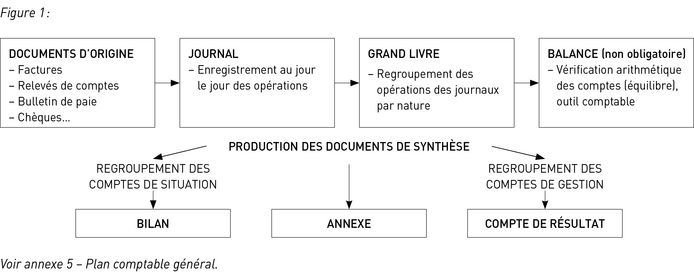
GESTION FINANCIÈRE
G 36
3.1.2.1.1 Le passif
Le passif est composé de 3 parties principales, à savoir :
b Les capitaux propres : c’est l’ensemble des ressources durables mises à disposition de l’entreprise par les associés.
b Les provisions pour risques et charges : destinées à couvrir des risques ou bien des charges dont le dénouement aura lieu ultérieurement.
b Les dettes : ce sont toutes les dettes contractées par l’entreprise auprès des organismes financiers, des fournisseurs, de l’État…
b Les capitaux propres
} Le capital social : il représente les apports réalisés par les associés.
} Les réserves : elles représentent une partie des bénéfices réalisés, non distribués, laissés à la disposition de l’entreprise. Il existe 3 catégories de réserves :
– les réserves légales : obligatoires, elles sont constituées par un prélèvement de 5 % du résultat net et jusqu’à concurrence de 10 % du capital social ;
– les réserves réglementées : prévues très souvent au travers des lois de finance ;
– les autres réserves : elles relèvent de décisions prises par les associés.
} Le report à nouveau : il enregistre le cumul de résultats réalisés depuis la création de l’entreprise non distribués ou en attente d’affectation, ainsi que les pertes réalisées. Le report à nouveau peut être négatif en cas de pertes enregistrées supérieures aux bénéfices enregistrés.
} Le résultat de l’exercice : il s’agit du résultat réalisé au cours de l’exercice comptable. En cas de pertes, il est négatif.
} Les subventions d’investissement : ce sont les subventions dont a bénéficié l’entreprise pour l’acquisition d’un bien ou le financement d’activités à long terme.
} Les provisions réglementées : elles sont constituées en application de dispositions légales (amortissements dérogatoires…).
b Les provisions pour risques et charges
} Les provisions pour risques : destinées à couvrir un risque réel, dont le dénouement aura lieu ultérieurement (prud’hommes, litiges…).
} Les provisions pour charges : destinées à couvrir une charge réelle, dont le dénouement aura lieu ultérieurement (grosses réparations…).
b Les dettes
} Les dettes financières : c’est le solde correspondant au montant restant dû de l’ensemble des emprunts contractés par l’entreprise. On y trouve également le découvert bancaire ainsi que le montant de la participation aux fruits de l’expansion non encore versé.
} Les dettes aux fournisseurs : elles représentent les sommes dues non encore décaissées compte tenu des délais de paiement négociés avec les fournisseurs d’exploitation et également des factures non parvenues.
} Les dettes fiscales et sociales : il s’agit principalement de la TVA à payer, de l’impôt à payer, des différentes cotisations dues, des salaires non versés, des congés payés non pris…
} Les dettes diverses : ce sont toutes les autres dettes (fournisseurs d’immobilisations…).
3.1.2.1.2 L’actif
b L’actif immobilisé
Il représente l’ensemble des éléments incorporels et corporels, ayant un caractère durable, contribuant au fonctionnement de l’activité de l’entreprise :
} Les immobilisations incorporelles : ce sont les frais d’établissement, de constitution, de recherche et développement, les brevets…
} Les immobilisations corporelles : ce sont les terrains, les constructions, les installations techniques, les matériels industriels et outillages…
} L’administration autorise les entreprises à passer directement en charges déductibles, lorsque leur valeur unitaire n’excède pas un montant fixé à 500 € hors taxe le prix d’acquisition des biens suivants : matériels et mobiliers de bureau, logiciels.
} Les immobilisations financières : ce sont les participations, les dépôts et cautionnements, les prêts…
b L’actif circulant
Il représente l’ensemble des éléments n’ayant pas un caractère durable dans l’entreprise :
} Les stocks : dans les entreprises de transport, les stocks sont principalement constitués de matières premières et de marchandises.
} Les créances :
– les créances clients : elles correspondent à la part de chiffre d’affaires non encaissée compte tenu des délais de paiement négociés par les clients et également des délais de facturation ;
– les autres créances : ce sont les créances détenues par l’entreprise sur le personnel, les organismes sociaux, l’État…
} Les disponibilités : elles représentent les sommes en espèces ou assimilables (banque, CCP).
3.1.2.2 Le compte de résultat (voir annexe 8)
Le compte de résultat regroupe l’ensemble des produits réalisés et des charges supportées au cours de l’exercice comptable.
Ces produits et charges sont classés par nature selon
3 niveaux :
– les produits et charges d’exploitation ;
– les produits et charges financiers ;
– les produits et charges exceptionnels.
3.1.2.2.1 Les produits d’exploitation
b Le chiffre d’affaires : il représente l’ensemble des prestations de service réalisées et facturées par l’entreprise.
b Les subventions d’exploitation : ce sont des subventions perçues par l’entreprise suite à la conclusion, par exemple, de certains contrats de travail…
b Les reprises sur amortissements et provisions, transfert de charges : utilisées soit pour reporter un amortissement, soit pour régulariser une provision ayant été constituée au cours d’un exercice antérieur, soit pour transférer une charge sur plusieurs exercices à venir.
Comptes de fin d’exercice
G 37
b Les autres produits : ce sont des produits qui ne peuvent pas être assimilés au chiffre d’affaires. à titre d’exemple, nous pouvons citer des loyers encaissés…
3.1.2.2.2 Les charges d’exploitation
b Les achats : ce sont les achats de matières consommables (carburant, huiles…).
b La variation de stock : elle se calcule selon la formule suivante : stock initial – stock final.
La variation de stock permet de calculer la dépense réelle de l’exercice des achats passés en stock avant d’être consommés. En effet, lorsqu’elle est négative, elle diminue le poste « achats », au contraire, lorsqu’elle est positive, elle augmente le poste « achats ».
b Les autres charges externes : ce sont toutes les consommations de service (assurances, les loyers, les honoraires, le personnel intérimaire, la publicité…).
b Les impôts, taxes et versements assimilés : c’est l’ensemble des impôts et taxes dont l’entreprise est redevable, à l’exception de l’impôt sur les bénéfices (IS, IR) qui sera calculé sur le résultat avant impôt et qui ne représente pas une charge déductible et de la TVA (Contribution économique territoriale (CET), taxe à l’essieu, timbres fiscaux, taxe d’apprentissage…).
b Les salaires et traitements : il s’agit de l’ensemble des rémunérations brutes attribuées, sur l’exercice, à l’ensemble des salariés de l’entreprise.
b Les charges sociales : ce sont les charges sociales, calculées sur les rémunérations brutes attribuées au cours de l’exercice.
b Les dotations d’exploitation :
– les dotations aux amortissements : on enregistre ici la dépréciation normale des immobilisations possédées par l’entreprise au cours de l’exercice comptable ;
– les dotations aux provisions sur actif circulant : il s’agit principalement des dotations aux provisions pour les dépréciations d’éléments d’actif (dépréciation d’un stock devenu obsolète, dépréciation du compte client suite à une créance douteuse…) ;
– les dotations aux provisions pour risques et charges : il s’agit des risques et/ou des charges constatés au cours de l’exercice comptable mais qui se réaliseront effectivement ultérieurement.
b Les autres charges : on y trouve les créances irrécouvrables (créances définitivement perdues) ainsi que les jetons de présence, les frais d’assemblée…
3.1.2.2.3 Les produits financiers
Ce sont, principalement, les intérêts générés, au cours de l’exercice comptable, par les différents placements réalisés par l’entreprise (titres de participation, prêts…).
3.1.2.2.4 Les charges financières
Elles regroupent, principalement, les intérêts générés, au cours de l’exercice comptable, par les différentes dettes financières contractées par l’entreprise (intérêts sur emprunts, intérêts sur escomptes, agios sur découverts…).
3.1.2.2.5 Les produits exceptionnels
Par définition, ce sont tous les produits ayant un caractère exceptionnel, qui n’ont donc aucun lien avec l’exploitation et le financier et qui ne se rencontrent donc pas couramment.
b Les produits exceptionnels sur opérations de gestion : ce sont, par exemple, des prestations en rapport avec des exercices antérieurs et facturées sur l’exercice, des dégrèvements d’impôt…
b Les produits exceptionnels sur opérations en capital : ce compte est utilisé lors d’une vente d’une immobilisation appartenant à l’entreprise. On enregistre ici le prix de vente de l’immobilisation cédée.
b Les reprises sur provisions : on enregistre ici les reprises sur provisions lorsque les évènements qui les ont déclenchées ont trouvé une issue.
On enregistre aussi les reprises sur provisions réglementées qui concernent les amortissements dérogatoires quand la dérogation n’a plus lieu d’être.
3.1.2.2.6 Les charges exceptionnelles
Contrairement aux produits exceptionnels, ce sont toutes les charges ayant un caractère exceptionnel, qui n’ont donc aucun lien avec l’exploitation et le financier et qui ne se rencontrent donc pas couramment.
b Les charges exceptionnelles sur opérations de gestion : on retrouve ici les amendes, les pénalités, les charges en rapport avec des exercices antérieurs et reçues au cours de l’exercice…
b Les charges exceptionnelles sur opérations en capital : ce compte est utilisé lors d’une vente d’une immobilisation appartenant à l’entreprise. On enregistre ici la valeur nette comptable, au moment de la vente, de l’immobilisation cédée.
b Les dotations exceptionnelles aux amortissements et provisions : on enregistre ici les dotations aux provisions réglementées réalisées au cours de l’exercice comptable concernant principalement l’amortissement dérogatoire.
3.1.2.2.7 Participation des salariés
aux résultats de l’entreprise
On enregistre ici la part de bénéfice, avant impôt, distribuée aux salariés de l’entreprise. La participation fait, en général, l’objet d’un accord conventionnel ou d’un accord d’entreprise.
3.1.2.2.8 Impôts sur les bénéfices
Avant de calculer l’impôt sur les bénéfices, il faut réintégrer au résultat qui résulte de l’opération (total des produits – total des charges) les charges non déductibles telles que, notamment, les amendes, puis retirer au résultat trouvé l’incidence des plus et moins-values de cession. Il reste ainsi le réel résultat de l’exploitation de l’entreprise, hors plus et moins-values de cession.
Le résultat fiscal est l’addition de la taxation de ce résultat « réajusté » et de la taxation des soldes des plus et moins-values à court terme et à long terme (voir ci-après).
b Calcul des plus-values ou moins-values
Calcul = prix de cession du bien – valeur d’origine du bien (ou sa valeur nette comptable s’il est amortissable)
Si le prix de cession est inférieur à la valeur d’origine (ou à la valeur nette comptable), on constate une moins-value.
GESTION FINANCIÈRE
G 38
Si le prix de cession est supérieur à la valeur d’origine (ou à la valeur nette comptable), on constate une plus-value.
b Distinction entre court terme et long terme
Elle est fonction de la durée de détention du bien cédé et si ce bien est amortissable ou pas.
} Biens amortissables
Les plus-values sont constatées à l’occasion de la cession d’éléments d’actif acquis par l’entreprise depuis :
– moins de 2 ans : c’est une plus-value (PV) à court terme.
– 2 ans et plus :
- il y a PV à court terme dans la limite de l’amortissement déduit ;
- et il y a PV à long terme au-delà.
Exemple
Une entreprise vend un entrepôt industriel, amorti sur 20 ans, 55 000 €, entré dans l’entreprise pour une valeur de 50 000 €, ayant une valeur nette comptable de 45 000 € le jour de vente.
Il y a une PV de : 55 000 – 45 000 = 10 000 €
L’amortissement pratiqué est de :
50 000 – 45 000 = 5 000 €
La PV se décompose en une PV de 5 000 € à court terme (part de PV qui ne dépasse pas l’amortissement pratiqué) et une PV de 5 000 € à long terme pour le solde qui dépasse l’amortissement pratiqué.
} Biens non amortissables
Acquis depuis moins de 2 ans : PV à court terme.
Acquis depuis 2 ans et plus : PV à long terme.
b Imposition des plus-values et moins-values
dans les entreprises relevant de l’IR
} À court terme
Les plus-values et les moins-values constatées au cours d’un même exercice se compensent et déterminent une plus ou moins-value nette.
Si c’est une PV, elle est ajoutée aux bénéfices de l’entreprise qui sont ensuite imposés dans les conditions normales de l’impôt sur le revenu.
Si c’est une moins-value, elle s’impute sur les bénéfices d’exploitation.
} À long terme
Une compensation est effectuée entre les plus-values et les moins-values.
Si le résultat est une plus-value, elle est taxée à 12,8 % (le taux global est de 30 % avec les prélèvements sociaux).
Si le résultat est une moins-value, elle est imputable sur les plus-values à long terme réalisées pendant les dix années suivantes (et pas sur le bénéfice).
b Imposition des plus-values et moins-values
dans les entreprises relevant de l’IS
Les plus-values professionnelles, réalisées par les sociétés soumises à l’Impôt sur les Sociétés, sont en général imposées aux taux habituels de l’IS (voir ci-après le tableau rattaché au point 4.1.3.1).
Il n’y a donc pas d’imposition particulière pour les plus-values à long terme réalisées par une entreprise soumise à l’IS.
Il existe des cas particuliers qui font donc exception à la règle générale sur les plus et moins-values développées ci-dessus.
3.1.2.2.9 Le résultat net
Le résultat net correspond à la différence entre l’ensemble des produits et l’ensemble des charges (y compris les charges non déductibles) auxquelles s’ajoute cette fois l’impôt.
Le résultat net sera donc à la disposition des associés. Au cours de l’assemblée générale, se tenant dans les 6 mois suivant la clôture de l’exercice comptable, les associés décideront de l’affectation de ce résultat (distribution de dividendes, réserves…).
3.2 LES AMORTISSEMENTS et les provisions
3.2.1 DIFFéRENCE ENTRE AMORTISSEMENT
ET PROVISIONS
b Les amortissements constatent une dépréciation
normale et certaine d’un bien, relative à son usage et au temps et procurant un avantage économique attendu.
b Les provisions résultent de l’affectation d’une somme d’argent dans un but précis dont la réalisation est quasi certaine mais dont le montant est estimé.
3.2.2 LES PROVISIONS
Une provision doit être comptabilisée lorsque :
– l’entreprise a une obligation actuelle (juridique et implicite) résultant d’un événement passé ;
– il est probable qu’une sortie de ressources représentatives d’avantages économiques sera nécessaire pour éteindre l’obligation ;
– le montant de l’obligation peut être estimé de manière fiable.
Elles sont de 2 sortes :
– les provisions pour dépréciation d’actif ;
– les provisions pour risques et charges.
Lors de la fin d’un exercice, les provisions doivent être réévaluées à leur valeur actuelle. Si elles n’ont plus lieu d’être, elles doivent être reprises en produits.
3.2.2.1 Les provisions pour dépréciations d’actifs
Elles mesurent des faits passés certains, et des pertes de valeurs qui peuvent être réellement constatées par des éléments objectifs.
Exemple
1. Perte de valeur d’une créance suite aux difficultés de paiement d’un client.
Comptes de fin d’exercice
G 39
2. Perte de valeur d’un terrain suite à un reclassement du plan local d’urbanisme (PLU).
3.2.2.2 Les provisions pour risques et charges
Elles sont inscrites pour compenser un événement présent qui n’a pas encore cessé et dont le dénouement ne sera que futur.
Exemple
épargne interne d’une somme équivalente au montant d’un dommage et des intérêts potentiellement dûs lors d’un procès.
3.2.3 les AMORTISSEMENTs
3.2.3.1 L’amortissement économique
L’amortissement économique constate la dépréciation réelle d’un bien compte tenu de l’activité à laquelle il est affecté.
Il s’apprécie selon le calcul suivant :
(Valeur d’achat – Valeur résiduelle) / durée d’utilisation
3.2.3.2 L’amortissement comptable
L’amortissement comptable, quant à lui, répond à des dispositions légales. Il s’apprécie donc selon différents modes de calcul et selon les usages professionnels. Cependant, l’option retenue, pour un mode d’amortissement et sa durée, doit être cohérente par rapport à la nature du bien.
3.2.3.2.1 L’amortissement linéaire
L’amortissement linéaire se caractérise par une dépréciation constante du bien, sur chaque exercice comptable.
Selon le mode linéaire, un exercice comptable correspond à 360 jours, un mois à 30 jours. Le bien est amorti à compter de sa date de mise en service, au prorata du nombre de jours intervenant sur l’exercice comptable.
Exemple 1
– Prix d’achat HT d’un véhicule : 76 500 €
– Date d’achat : 2/05/année N
– Date de mise en service : 16/05/année N
– Durée prévue : 5 ans
– Exercice comptable : 1/01/. au 31/12/.
Voir tableau page suivante.
Les écritures au compte de résultat
Le compte de résultat étant le reflet de l’activité économique de l’entreprise au cours d’un exercice comptable, il convient donc d’enregistrer, au compte de résultat, la seule dépréciation du bien constatée au cours de l’exercice comptable. Les charges d’exploitation regroupant toutes les charges directement liées à la réalisation de l’activité de l’entreprise, il convient donc d’enregistrer la dépréciation du bien en charges d’exploitation « dotations aux amortissements ».
Compte de résultat du 1/01/année N
au 31/12/année N
|
CHARGES |
PRODUITS |
||
|
CHARGES D’EXPLOITATION
Dotations aux |
|
PRODUITS |
|
Ce compte de résultat exprime une dépréciation, au cours de l’exercice comptable, de 9 563 €.
Compte de résultat du 1/01/année N + 1
au 31/12/année N + 1
|
CHARGES |
PRODUITS |
||
|
CHARGES D’EXPLOITATION
Dotations aux amortissements |
|
PRODUITS |
|
Ce compte de résultat exprime une dépréciation, au cours de l’exercice comptable, de 15 300 €.
Les écritures au bilan
Le bilan représentant le patrimoine de l’entreprise à une date précise, il convient donc de tenir compte de la dépréciation du bien depuis sa date de mise en service afin d’exprimer, à une date précise, sa valeur nette comptable. Bien entendu, l’enregistrement se fait au niveau de l’actif immobilisé, le montant « brut » représentant la valeur du bien à la date de sa mise en service, le montant « amortissements » correspondant au cumul des dotations aux amortissements depuis la date de mise en service et le montant « net » (égal à la différence) exprimant la valeur nette comptable du bien.
Bilan au 31/12/année N
|
ACTIFS |
Brut |
Amort. |
Net |
PASSIF |
|
|
ACTIF |
|||||
|
Immobilisations |
|||||
|
Matériel |
|
|
|
Ce bilan précise que l’entreprise possède, au 31/12/année N, un véhicule dont la valeur d’origine est de 76 500 €, s’étant déprécié de 9 563 € et ressortant à une valeur nette comptable de 66 937 €.
GESTION FINANCIÈRE
G 40
Bilan au 31/12/année N + 1
|
ACTIFS |
Brut |
Amort. |
Net |
PASSIF |
|
|
ACTIF |
|||||
|
Immobilisations |
|||||
|
Matériel |
|
|
|
Ce bilan précise que l’entreprise possède, au 31/12/année N + 1, un véhicule dont la valeur d’origine est de 76 500 €, s’étant déprécié de 24 863 € et ressortant à une valeur nette comptable de 51 637 €.
3.2.3.2.2 L’amortissement dégressif
Comparé à l’amortissement linéaire, l’amortissement dégressif évolue de façon décroissante. Il est plus élevé au cours des premiers exercices pour devenir plus faible ensuite. Il est donc pratiqué pour les biens dont la dépréciation est forte au cours des premières années et s’atténue au cours des années suivantes. Il est limité à certains biens d’équipement, dont la liste est définie par le CGI aux articles 39A et suivants et aux articles 22 et suivants de l’annexe 2.
Seuls les biens acquis neufs peuvent être amortis selon le mode dégressif et sur une durée au moins égale à 3 ans.
Selon le mode dégressif, un exercice comptable est composé de 12 mois. Le bien est amorti à compter de sa date d’achat. Il est fait application d’un coefficient déterminé en fonction de la durée d’amortissement prévue.
|
Durée |
Coefficient |
|
3 à 4 ans |
1,25 |
|
5 à 6 ans 2/3 |
1,75 |
|
Au-delà de 6 ans 2/3 |
2,25 |
L’amortissement est calculé sur la valeur nette comptable.
Exemple 1 :
|
Date |
Amortissement |
Dotations aux amortissements |
Amortissements (Cumul des dotations) |
Valeur nette comptable |
|
Année N |
(76 500 / 5) × (225 / 360)= |
9 563 |
9 563 |
(76 500 – 9 563) =66 937 |
|
Année N + 1 |
(76 500 / 5)= |
15 300 |
24 863 |
(76 500 – 24 863) =51 637 |
|
Année N + 2 |
(76 500 / 5)= |
15 300 |
40 163 |
(76 500 – 40 163) =36 337 |
|
Année N + 3 |
(76 500 / 5)= |
15 300 |
55 463 |
(76 500 – 55 463) =21 037 |
|
Année N + 4 |
(76 500 / 5)= |
15 300 |
70 763 |
(76 500 – 70 763) =5 737 |
|
Année N + 5 |
(76 500 / 5) × (135 / 360)= |
5 737 |
76 500 |
(76 500 – 76 500) =0 |
Exemple 2
– Prix d’achat HT d’un véhicule : 76 500 €
– Date d’achat : 2/05/année N
– Durée d’amortissement prévue : 5 ans
– Exercice comptable : 1/01/. au 31/12/.
Voir tableau ci-dessous.
Les écritures au compte de résultat
Le principe est identique à celui concernant l’amortissement linéaire.
Compte de résultat du 1/01/année N au 31/12/année N
|
CHARGES |
PRODUITS |
||
|
CHARGES |
PRODUITS |
||
|
Dotations aux |
|
||
Ce compte de résultat exprime une dépréciation, au cours de l’exercice comptable, de 17 850 €.
Compte de résultat du 1/01/année N + 1
au 31/12/année N + 1
|
CHARGES |
PRODUITS |
||
|
CHARGES |
PRODUITS |
||
|
Dotations aux |
|
||
Ce compte de résultat exprime une dépréciation, au cours de l’exercice comptable, de 20 527 €.
Les écritures au bilan
Le principe est identique à celui concernant l’amortissement linéaire.
Comptes de fin d’exercice
G 41
Bilan au 31/12/année N
|
ACTIFS |
Brut |
Amort. |
Net |
PASSIF |
|
|
ACTIF |
|||||
|
Immobilisations |
|||||
|
Matériel |
|
|
|
Ce bilan précise que l’entreprise possède, au 31/12/année N,
un véhicule dont la valeur d’origine est de 76 500 €, s’étant déprécié de 17 850 € et ressortant à une valeur nette comptable de 58 650 €.
Bilan au 31/12/année N + 1
|
ACTIFS |
Brut |
Amort. |
Net |
PASSIF |
|
|
ACTIF |
|||||
|
Immobilisations |
|||||
|
Matériel |
|
|
|
Ce bilan précise que l’entreprise possède, au 31/12/année N + 1, un véhicule dont la valeur d’origine est de 76 500 €, s’étant déprécié de 38 377 € et ressortant à une valeur nette comptable de 38 123 €.
3.2.3.2.3 L’amortissement dérogatoire
L’amortissement dérogatoire est en fait une dérogation (bien évidemment réglementée) permettant aux entreprises de pratiquer des amortissements ne correspondant pas à une dépréciation effective du bien, son but principal étant d’inciter les entreprises à investir. En effet, permettant d’amortir au-delà de la dépréciation effective du bien, il génère plus de charges (fictives) et par conséquent, réduit le montant de l’impôt.
Il existe différents types d’amortissements dérogatoires et différents modes de calcul.
Exemple 2 :
|
Date |
Annuité d’amortissement |
Dotations |
Amortissements (Cumul |
Valeur nette comptable |
|
|
Année N |
20 % |
(76 500 : 5) × 1,75 (8/12) = |
17 850 |
17 850 |
|
|
Année N + 1 |
(76 500 – 38 377) =38 123 |
||||
|
Année N + 2 |
33,33 % |
(38 123 : 5) × 1,75= |
13 343 |
51 720 |
|
|
Année N + 3 |
(76 500 – 64 110) =12 390 |
||||
|
Année N + 4 |
50 % |
(24 780 : 2) = |
12 390 |
76 500 |
Le mode de calcul que nous proposons de présenter est le suivant :
amortissement dégressif – amortissement linéaire
= amortissement dérogatoire
Reprenons les exemples présentés auparavant au travers desquels nous avons calculé un amortissement linéaire et un amortissement dégressif.
Nous savons qu’en matière d’amortissement, l’option choisie doit être représentative de la réalité économique. Or, il peut être parfois intéressant d’amortir en dégressif (notamment pour des raisons fiscales) alors que la réalité économique justifierait d’amortir selon le mode linéaire. C’est dans ce cas que l’amortissement dérogatoire joue son rôle.
Exemple 3
– Prix d’achat HT d’un véhicule : 76 500 €
– Date d’achat : 2/05/année N
– Date de mise en service : 16/05/année N
– Durée prévue : 5 ans
– Exercice comptable : 1/01/. au 31/12/.
L’amortissement économiquement justifié est l’amortissement linéaire. Cependant, l’entreprise souhaite opter, par dérogation, pour l’amortissement dégressif.
GESTION FINANCIÈRE
G 42
|
Date |
Amortisse- dégressif |
Amortisse- |
Amortisse- |
|
Année N |
17 850 |
9 563 |
+ 8 287 |
|
Année N + 1 |
20 527 |
15 300 |
+ 5 227 |
|
Année N + 2 |
13 343 |
15 300 |
– 1 957 |
|
Année N + 3 |
12 390 |
15 300 |
– 2 910 |
|
Année N + 4 |
12 390 |
15 300 |
– 2 910 |
|
Année N + 5 |
0 |
5 737 |
– 5 737 |
L’amortissement linéaire présenté dans ce tableau correspond à la réalité économique. L’amortissement dérogatoire, quant à lui, permet simplement de dégager des charges fictives au cours des deux premiers exercices comptables, qui feront ensuite l’objet d’une régularisation au cours des quatre derniers exercices comptables. Ce système permet en fait de différer le paiement de l’impôt. En effet, on peut tout à fait considérer qu’au cours de l’exercice N, une fraction du bénéfice de l’entreprise, de l’ordre de 8 287 €, se trouve en franchise d’impôt. La situation est identique en N + 1, pour une fraction du bénéfice de l’ordre de 5 227 €. Cependant, à compter de l’exercice N + 2, l’entreprise se trouve dans l’obligation de commencer à régulariser son imposition, l’amortissement dérogatoire devenant négatif.
Les écritures au compte de résultat
Le compte de résultat étant le reflet de l’activité économique de l’entreprise au cours d’un exercice comptable, il convient donc d’enregistrer, en charges d’exploitation, la dépréciation effective du bien, en charges exceptionnelles la dépréciation excessive du bien permettant ainsi d’obtenir temporairement une déduction fiscale et en produits exceptionnels la régularisation fiscale liée à la déduction temporaire. Cette distinction est opérée en vue d’exprimer la réalité économique et donc de ne pas pénaliser la rentabilité réelle d’exploitation.
Compte de résultat du 1/01/année N
au 31/12/année N
|
CHARGES |
PRODUITS |
||
|
CHARGES |
PRODUITS |
||
|
Dotations aux |
|
||
|
CHARGES |
|||
|
Dotations aux |
|
||
Ce compte de résultat exprime une dépréciation réelle, au cours de l’exercice comptable, de 9 563 € et une dépréciation fictive, pratiquée pour des raisons fiscales, de 8 287 €.
Compte de résultat du 1/01/année N + 1
au 31/12/année N + 1
|
CHARGES |
PRODUITS |
||
|
CHARGES |
PRODUITS |
||
|
Dotations aux |
|
||
|
CHARGES |
|||
|
Dotations aux |
|
||
Ce compte de résultat exprime une dépréciation réelle, au cours de l’exercice comptable, de 15 300 € et une dépréciation fictive, pratiquée pour des raisons fiscales, de 7 140 €.
Compte de résultat du 1/01/année N + 2
au 31/12/année N + 2
|
CHARGES |
PRODUITS |
||
|
CHARGES |
PRODUITS |
||
|
Dotations aux |
|
||
|
CHARGES |
PRODUITS EXCEPTIONNELS |
||
|
Dotations aux |
Reprise sur |
|
|
Ce compte de résultat exprime une dépréciation réelle, au cours de l’exercice comptable, de 15 300 € et un produit fictif, permettant la régularisation fiscale, de 1 957 €. C’est à compter de l’exercice N + 2 que la régularisation fiscale débute.
Les écritures au bilan
Le bilan représentant le patrimoine de l’entreprise à une date précise, la valeur nette comptable du bien sera exprimée par le biais de l’amortissement correspondant à la réalité économique, c’est-à-dire, dans notre exemple, l’amortissement linéaire. L’amortissement dérogatoire, étant une fraction de bénéfice temporairement exonérée d’impôt, sera enregistré en capitaux propres, dans un compte intitulé « provisions réglementées ».
Tableau 1 : ce bilan précise, d’une part, que l’entreprise possède, au 31/12/année N, un véhicule dont la valeur d’origine est de 76 500 €, s’étant déprécié de 9 563 € et ressortant à une valeur nette comptable de 66 937 € et d’autre part, qu’une fraction de l’ordre de 8 287 € de son bénéfice se trouve temporairement exonérée d’impôt.
Comptes de fin d’exercice
G 43
Tableau 2 : ce bilan précise, d’une part, que l’entreprise possède, au 31/12/année N + 1, un véhicule dont la valeur d’origine est de 76 500 €, s’étant déprécié de 24 863 € et ressortant à une valeur nette comptable de 51 637 € et d’autre part, qu’une fraction de l’ordre de 13 514 € de son bénéfice se trouve temporairement exonérée d’impôt.
Tableau 3 : ce bilan précise, d’une part, que l’entreprise possède, au 31/12/année N + 2, un véhicule dont la valeur d’origine est de 76 500 €, s’étant déprécié de 40 163 € et ressortant à une valeur nette comptable de 36 337 € et d’autre part, qu’une fraction de l’ordre de 11 557 € de son bénéfice se trouve temporairement exonérée d’impôt.
|
Bilan au 31/12/année N |
|||||
|
ACTIF |
Brut |
Amort. |
Net |
PASSIF |
|
|
actif immobilisé |
CAPITAUX PROPRES |
||||
|
Immobilisations corporelles |
|||||
|
Matériel de transport |
76 500 |
9 563 |
66 937 |
Provisions réglementées |
8 287 |
|
Bilan au 31/12/année N + 1 |
|||||
|
ACTIF |
Brut |
Amort. |
Net |
PASSIF |
|
|
actif immobilisé |
CAPITAUX PROPRES |
||||
|
Immobilisations corporelles |
|||||
|
Matériel de transport |
76 500 |
24 863 |
51 637 |
Provisions réglementées |
13 514 |
|
Bilan au 31/12/année N + 2 |
|||||
|
ACTIF |
Brut |
Amort. |
Net |
PASSIF |
|
|
actif immobilisé |
CAPITAUX PROPRES |
||||
|
Immobilisations corporelles |
|||||
|
Matériel de transport |
76 500 |
40 163 |
36 337 |
Provisions réglementées |
11 557 |
3.3 ANALYSE DES COMPTES DE FIN D’EXERCICE
3.3.1 LES RETRAITEMENTS
Le bilan et le compte de résultat étant des documents de synthèse émergeant de la comptabilité de l’entreprise, ils révèlent donc une situation comptable, ne reflétant pas exactement la réalité économique.
En effet, la comptabilité reposant sur des principes d’enregistrement qui, parfois, sont assez rigides, certains postes feront donc l’objet de « retraitement », afin de procéder à une analyse conforme et fidèle aux réalités économiques.
Le retraitement concerne principalement :
– au compte de résultat :
- les loyers concernant le crédit-bail et la location de véhicules industriels,
- le personnel intérimaire,
- la sous-traitance,
- certaines dépenses d’entretien suite à un accident, dépenses ensuite remboursées par la compagnie d’assurance ;
– au bilan :
- les valeurs d’engagement à long terme issus du crédit-bail ou de la location financière,
- les dettes financières.
GESTION FINANCIÈRE
G 44
3.3.1.1 Les retraitements
au compte de résultat
3.3.1.1.1 Les loyers de crédit-bail et de location
de véhicules industriels
En comptabilité, ces loyers sont enregistrés dans le compte « autres charges externes ». Ces loyers, qui ne sont autres que des modes de financement de véhicules, viennent augmenter le poste « autres charges externes », alors qu’en fait, ils ont été calculés sur la base d’un amortissement économique complété par des frais financiers (mode de calcul développé au travers du chapitre analyse des coûts).
Pour toutes ces raisons, les loyers seront totalement retirés du poste « autres charges externes » pour être affectés en partie en « dotations aux amortissements » et en partie en « charges financières », sur la base des pratiques de l’entreprise en matière d’amortissement et des taux d’intérêts (à titre d’exemple, on pourra affecter 85 % des loyers en « dotations aux amortissements » et 15 % en « charges financières »).
3.3.1.1.2 Le personnel intérimaire
Les frais de personnel intérimaire sont également enregistrés en « autres charges externes ».
Cependant, il s’agit bien d’une charge de main-d’œuvre devant être analysée au travers des « charges de personnel » et non pas au travers des « autres charges externes ».
Les frais de personnel intérimaire seront donc retirés en totalité du poste « autres charges externes » pour être affectés en « charges de personnel ».
3.3.1.1.3 La sous-traitance
La sous-traitance fera l’objet d’un retraitement dans la mesure où l’activité de l’entreprise est une activité de transport et/ou de location de véhicules industriels et non pas une activité de commissionnaire de transport.
Les charges de sous-traitance, enregistrées en « autres charges externes », ne sont certainement pas des charges directement liées à la réalisation du chiffre d’affaires « transport et/ou location de véhicules industriels ». Il convient donc de les retirer en totalité des « autres charges externes » et également du chiffre d’affaires, afin d’exprimer le chiffre d’affaires net. Le même montant ayant été retiré au travers des charges et des produits, ce retraitement n’affecte en rien le résultat net de l’entreprise.
3.3.1.1.4 Certaines dépenses d’entretien
Suite à un accident, il est fréquent que l’entreprise prenne en charge les dépenses de réparation pour être ensuite remboursée par sa compagnie d’assurance.
Ces dépenses sont enregistrées en « autres charges externes » et le remboursement en « reprises sur amortissements et provisions exceptionnelles, transferts de charges ». Afin d’éviter toute incohérence au travers de l’analyse, il convient de neutraliser cette opération en retirant le montant des « autres charges externes » et également des « reprises sur amortissements et provisions, transferts de charges ».
3.3.1.2 Les retraitements au bilan
Au niveau du bilan, on retraite principalement le poste « dettes financières ».
Les entreprises de transport et de location de véhicules industriels ayant très souvent recours au crédit-bail et à des formules de location, leurs bilans n’expriment absolument pas l’endettement réel. En effet, en crédit-bail et en location, l’entreprise n’étant pas propriétaire du bien, ni ce dernier, ni son moyen de financement n’apparaissent au bilan. L’endettement se trouve donc faussé (comment expliquer, par exemple, qu’une entreprise exploite 20 véhicules, que ses capitaux propres s’élèvent à 106 700 € et que ses dettes financières sont nulles).
Afin de mener une analyse pertinente, il convient donc, en vue d’apprécier l’endettement de l’entreprise, de réintégrer en « dettes financières », la part capital des loyers (80 %) restant dus à la clôture du bilan.
Par ailleurs, il faut réintégrer en actif immobilisé sur la ligne correspondante :
– en valeur brute : la valeur d’origine des biens loués ;
– en amortissement : la part capital déjà versée à travers les loyers ;
– en valeur nette : la part capital des loyers restant dus équivalente à la dette financière réintégrée.
3.3.2 L’ANALYSE DU COMPTE DE RéSULTAT (SIG)
Le compte de résultat étant le reflet de l’activité de l’entreprise, son analyse, après retraitements, permet d’identifier par paliers, des indicateurs pertinents, permettant ainsi de déceler certaines anomalies voire même, dans certains cas, des catastrophes.
Ces différents paliers sont appelés couramment « soldes intermédiaires de gestion ». Ils sont composés :
– de la valeur ajoutée ;
– de l’excédent brut d’exploitation ;
– du résultat d’exploitation ;
– du résultat courant avant impôts ;
– du résultat net.
3.3.2.1 La valeur ajoutée
Elle représente le résultat réalisé par l’entreprise grâce à ses moyens humains, techniques, financiers, son savoir-faire… Cependant, ce résultat est réalisable uniquement lorsqu’il y a consommation de différentes charges incontournables, appelées « consommation en provenance des tiers » ou bien « consommations intermédiaires ». Ces consommations sont regroupées dans les postes « achats de matières consommables », « variation de stock » et « autres charges externes ». La valeur ajoutée exprime donc la véritable richesse créée par l’entreprise.
CA net – (achats ± variation de stock +
autres charges externes) = Valeur ajoutée (VA)
Afin que ce résultat obtenu soit appréciable, il convient de l’exprimer en pourcentage du CA net. Ce pourcentage est appelé degré d’intégration. Il exprime, en fait, la capacité de l’entreprise à assurer elle-même un certain
Comptes de fin d’exercice
G 45
nombre de phases intermédiaires. C’est aussi sa capacité à valoriser sa prestation.
Valeur ajoutée / CA net = degré d’intégration
3.3.2.2 L’excédent brut d’exploitation
Appelé EBE, il représente le résultat généré par l’activité courante de l’entreprise. C’est en fait le montant des ressources que l’entreprise dégage de son exploitation. C’est un indicateur totalement indépendant de la politique financière et de la politique d’amortissement.
Valeur ajoutée + subventions d’exploitation
– (impôts et taxes + salaires et traitements
+ charges sociales) = EBE
Il convient de le comparer au CA net, en vue de mesurer la performance de l’entreprise.
EBE / CA net = performance
3.3.2.3 Le résultat d’exploitation
Le résultat d’exploitation, quant à lui, tient compte de la politique d’amortissement, d’investissement et également des risques d’exploitation (provisions). Il ne tient pas compte de la politique financière.
EBE + reprises sur amortissements et provisions
+ autres produits – (dotations d’exploitation
+ autres charges) = résultat d’exploitation
Là encore, il convient de le rapprocher du CA net
transport :
Résultat d’exploitation / CA net transport
= rentabilité d’exploitation
3.3.2.4 Le résultat financier
Il résulte de la différence entre les produits financiers et les charges financières. Il permet de définir le poids des charges financières, se situant normalement entre 1,5 % et 3 % du CA. Cependant, il arrive que les charges financières soient nettement supérieures à cette norme, ce qui signifie que l’entreprise travaille pour ses banques.
Produits financiers – charges financières
= résultat financier
3.3.2.5 Le résultat courant avant impôts
Il correspond au résultat d’exploitation corrigé par la prise en compte du résultat financier.
Résultat d’exploitation + résultat financier
= résultat courant avant impôts
Le résultat courant avant impôts est également rapproché du CA net :
Résultat courant avant impôts / CA net
3.3.2.6 Le résultat exceptionnel
Il provient de la différence entre les produits exceptionnels et les charges exceptionnelles. Ce sont très souvent les plus-values ou les moins-values qui le conditionnent. Il déguise donc très souvent le résultat net de l’entreprise.
3.3.2.7 Le résultat net
Il est calculé à partir du résultat courant auquel on ajoute le résultat exceptionnel et retire la participation des salariés aux fruits de l’expansion et l’impôt. C’est donc de ce résultat net dont disposeront les associés.
Le résultat net est comparé au CA net :
Résultat net / CA net
3.3.2.8 Résumé pour les SIG
|
+ Chiffre d’affaires – Consommations intermédiaires |
(CA) |
|
= Valeur ajoutée + Subventions d’exploitation – Impôts et taxes – Salaires et charges |
(VA) |
|
= L’excédent brut d’exploitation + Reprises amortissements et provisions – Dotations amortissements et provisions |
(EBE) |
|
= Résultats d’exploitation + Résultat financier |
(RE) R fi |
|
= Le résultat courant avant impôt + Résultat exceptionnel – Participations et impôt |
(RCAI) R exc |
|
= Résultat net |
(RN) |
Chaque SIG calculé en pourcentage du chiffre d’affaires, après retraitement du compte de résultat, permet de comparer les entreprises d’un même secteur d’activité entre elles. Les normes et les standards sont définis par secteur. On peut se référer aux chiffres statistiques de la centrale des bilans ou ceux connus par les professionnels d’un même secteur.
3.3.2.9 La capacité d’autofinancement
3.3.2.9.1 Calcul de la CAF
La capacité d’autofinancement est la différence entre les éléments représentant des rentrées réelles d’argent et les éléments représentant des sorties réelles d’argent, générées par l’ensemble des opérations (d’exploitation, financières, exceptionnelles).
GESTION FINANCIÈRE
G 46
Elle peut être calculée selon la méthode soustractive ou bien selon la méthode additive.
b Méthode additive : CAF =
+ résultat de l’exercice
+ DAP (d’exploitation, financières et exceptionnelles)
– RAP (d’exploitation, financières et exceptionnelles)
+ moins-values
– plus-values
– subventions d’investissement (en produits exceptionnels)
b Méthode soustractive : CAF =
+ EBE
+ autres produits d’exploitation sauf les reprises
+ produits financiers sauf les reprises
+ produits exceptionnels sauf : reprises, PCEA et subventions d’investissement
– autres charges
– charges financières sauf DAP
– charges exceptionnelles sauf DAP et VNCEAC
– participation des salariés
– impôts sur les bénéfices
La capacité d’autofinancement a pour vocation essentielle de mesurer le potentiel de couverture des besoins de l’entreprise :
– financement des nouveaux investissements ;
– financement des augmentations de BFR ;
– croissance externe ;
– rémunération des associés ;
– couverture de risques…
3.3.2.9.2 Calcul de l’autofinancement net
Il représente la quotité réellement disponible dans l’entreprise après les prélèvements tels que les dividendes et les remboursements d’emprunts :
+ CAF
– dividendes
– emprunts
= autofinancement net
3.3.3 L’ANALYSE DU BILAN
L’analyse du bilan va nous permettre d’étudier la structure financière de l’entreprise, en déterminant la composition du passif et de l’actif et en rapprochant les grandes masses des emplois avec celles des ressources.
b Les grandes masses du bilan :
|
ACTIF |
PASSIF |
|||
|
ACTIF IMMOBILISÉ |
CAPITAUX PROPRES |
capitaux propres |
||
|
Provisions RC |
||||
|
ACTIF CIRCULANT |
Réalisable |
EMPRUNTS (*) |
Long terme |
capitaux étrangers |
|
Court terme |
||||
|
DETTES AUX TIERS |
||||
|
Disponible |
Découverts |
|||
(*) à l’exception des découverts bancaires.
3.3.3.1 Le fonds de roulement net global (FRNG)
Il est composé de ressources durables destinées à financer des emplois stables. C’est donc la différence entre les ressources durables et les emplois stables.1
(Capitaux propres + provisions pour risques
et charges + dettes financières à L, M et C terme*)
– actif immobilisé net
Son rôle est donc de financer des emplois stables par le biais de ressources stables destinées à cet effet.
3.3.3.2 Le besoin en fonds de roulement (BFR)
Il correspond à la différence entre les emplois (d’exploitation et hors exploitation) et les ressources (d’exploitation et hors exploitation).
(Stocks + créances clients + autres créances)
– (dettes fournisseurs + dettes fiscales et sociales
+ autres dettes)
Le BFR dépend essentiellement de la nature de l’activité de l’entreprise. D’une façon générale, plus les délais de paiement clients sont élevés et plus le BFR sera important. En effet, le CA non encaissé représente bien, pour l’entreprise, un besoin. De même, plus les délais fournisseurs sont courts et plus le BFR sera important.
En effet, l’argent dû aux fournisseurs représente, pour l’entreprise, une valeur non décaissée, c’est-à-dire, en fait, une ressource.
L’amélioration du BFR passera donc par la diminution des délais de paiement clients et l’augmentation des délais de paiement fournisseurs.
Nota : le BFR augmente et diminue au même rythme que l’activité.
3.3.3.3 La trésorerie
Elle est formée de la partie disponible en actif et de la partie passive.
Disponibilités – découverts et concours bancaires
= trésorerie
La trésorerie est aussi la résultante du FRNG et du BFR.
1. À l’exception des découverts bancaires.
Comptes de fin d’exercice
G 47
FRNG – BFR = trésorerie (ou bien)
disponibilités – découverts = trésorerie
Bien évidemment, l’amélioration de la trésorerie passera obligatoirement par une amélioration du FRNG et/ou du BFR.
3.3.3.4 Les délais clients
Les créances clients apparaissant à l’actif circulant représentent la part de CA TTC due par les clients, à la clôture de l’exercice comptable.
Le calcul du délai moyen de paiement clients est donc réalisé en rapprochant les créances clients du CA TTC qui représente 360 jours (comptables) d’activité.
Créances clients / CA TTC × 360 j
= délai moyen de paiement clients
3.3.3.5 Les délais fournisseurs
Les dettes fournisseurs apparaissant au passif représentent la part des achats TTC et des autres charges externes TTC due aux fournisseurs, par l’entreprise, à la clôture de l’exercice comptable.
Le calcul du délai moyen de paiement fournisseurs est donc réalisé en rapprochant les dettes fournisseurs des achats TTC et des charges externes TTC.
Dettes fournisseurs / (achats TTC
+ autres charges externes TTC) × 360 j
= délai moyen de paiement fournisseurs
Nota : certaines charges ne sont pas soumises à TVA, notamment : les assurances, les frais postaux…
Pour être parfait, le délai fournisseurs devrait être supérieur de 5 jours au délai clients.
3.3.3.6 L’indépendance financière
Plusieurs ratios sont possibles. Le premier permet de mesurer la proportion des ressources apportées par les associés (capitaux propres + provisions pour R et C) par rapport aux ressources apportées par les établissements financiers (dettes financières).
(Capitaux propres + provisions pour R et C)
/ dettes financières = indépendance financière
Ce ratio doit être supérieur à 1.
Le deuxième est plus général et prend en compte l’ensemble des dettes.
(Capitaux propres + provisions pour R et C)
/ capitaux étrangers = indépendance financière
Ce ratio doit être supérieur à 0,5.
Plus les dettes sont élevées par rapport aux capitaux propres et moins l’entreprise est indépendante. L’amélioration de l’indépendance financière s’obtient donc par un renforcement des capitaux propres.
3.3.3.7 Financement des immobilisations
Les emplois à long terme que sont les immobilisations doivent être correctement financés par les ressources à long terme appelées capitaux permanents. Ceux-ci doivent être supérieurs aux immobilisations.
Capitaux permanents / immobilisations > 1
3.3.3.8 Situations de trésorerie
3.3.3.8.1 Trésorerie globale
Les dettes à court terme doivent être bien couvertes par les actifs circulants.
Ces dettes à court terme sont égales à : dettes aux tiers + emprunts à court terme + trésorerie passive.
Actifs circulants / Dettes à court terme > 1
3.3.3.8.2 Trésorerie immédiate
Les dettes à court terme représentent ce qui est dû à moins d’un an. Ce ratio détermine que les disponibilités doivent être supérieures à 3 mois de ces dettes pour être correct, soit :
Disponibilités / Dettes à court terme > 0,25
3.3.3.9 Capacité de remboursement
Ce dernier ratio permet de vérifier si l’entreprise sera en mesure de faire face à ses dettes financières.
Un des rôles de la capacité d’autofinancement étant de faire face aux remboursements des emprunts, elle sera donc rapprochée des dettes financières.
Dettes financières / capacité d’autofinancement
= nombre d’années nécessaires au remboursement
des emprunts.
Ce ratio doit être inférieur à 3 pour être correct.
Au-dessus de 3 on peut considérer la CAF comme insuffisante par rapport aux ressources externes mises en œuvre.
Ce ratio peut également être décomposé :
– dettes financières à court terme / capacité d’autofinancement (permet de vérifier si l’entreprise sera en mesure de faire face à ses remboursements à court terme) ;
– dettes financières à long et moyen terme / capacité d’autofinancement (permet de mesurer le nombre d’années permettant de faire face aux remboursements des emprunts à long et moyen terme).
GESTION FINANCIÈRE
G 48
3.4 Application pratique
|
Compte de résultat du 1/01/.. au 31/12/.. |
|||
|
CHARGES |
PRODUITS |
||
|
CHARGES D’EXPLOITATION Achats Variation de stock Autres charges externes Impôts, taxes Salaires et traitements Charges sociales Dotations d’exploitation Autres charges
CHARGES FINANCIÈRES Intérêts sur emprunts Intérêts sur escomptes Agios
CHARGES EXCEPTIONNELLES Sur opérations de gestion Sur opérations en capital Dotations exceptionnelles
Participation des salariés… Impôts sur le bénéfice Bénéfice net |
35 405 € – 1 524 € 38 112 €
29 733 € 15 164 € 10 875 €
6 964 €
4 128 € 8 257 € |
PRODUITS D’EXPLOITATION Chiffre d’affaires
Subventions d’exploitation Reprises sur amortissements…
Autres produits
PRODUITS FINANCIERS
PRODUITS EXCEPTIONNELS Sur opérations de gestion Sur opérations en capital Reprises sur provisions
Perte nette |
150 925 € |
|
TOTAL CHARGES |
150 925 € |
TOTAL PRODUITS |
150 925 € |
Comptes de fin d’exercice
G 49
|
Analyse du compte de résultat |
|
Valeur ajoutée CA – (achats + VS + autres charges externes) 150 925 – (35 405 – 1 524 + 38 112) = 78 932 € 78 932 / 150 925 = 52,30 %
EBE Valeur ajoutée + subventions d’exploitation 78 932 – (3 811 + 29 733 + 15 164) = 30 224 € 30 224 / 150 925 = 20,03 %
Résultat d’exploitation EBE + reprises + autres produits 30 224 – (10 875) = 19 349 € 19 349 / 150 925 = 12,82 %
Résultat financier Produits financiers – charges financières 0 – 6 964 = – 6 964 €
Résultat courant Résultat d’exploitation + résultat financier 19 350 + (– 6 964) = 12 385 € 12 385 / 150 925 = 8,21 %
Résultat exceptionnel Produits exceptionnels – charges exceptionnelles 0 – 0 = 0
Résultat net Résultat courant + résultat exceptionnel 12 385 – 4 128 = 8 257 € 8 257 / 150 925 = 5,47 %
Capacité d’autofinancement (CAF) Résultat net + dotations de l’exercice 8 257 + 10 875 = 19 132 € |
GESTION FINANCIÈRE
G 50
|
Bilan au 31/12/.. |
|||||
|
actif |
brut |
amort |
net |
passif |
montant |
|
ACTIF IMMOBILISÉ Immobilisations Frais d’établissement
Immobilisations corporelles Terrains Constructions Installations techniques Matériels industriels
Immobilisations financières Participations Dépôts et cautionnements Prêts
ACTIF CIRCULANT Stocks
Créances Créances clients Autres créances
Disponibilités Banque CCP Caisse |
1 524 €
3 049 €
30 084 € 1 200 €
40 059 € |
|
1 524 €
3 049 €
30 084 € 1 200 €
40 059 € |
CAPITAUX PROPRES Capital social Réserves légales Réserves réglementées Autres réserves Report à nouveau Résultat de l’exercice Subventions d’investissement Provisions réglementées
PROVISIONS POUR R ET C Provisions pour risques Provisions pour charges
DETTES Dettes financières* Dettes fournisseurs Dettes fiscales et sociales Autres dettes |
30 500 € 3 050 €
25 000 € 8 257 €
36 588 € 7 327 € 10 928 € |
|
TOTAL ACTIF |
167 385 € |
45 735 € |
121 650 € |
TOTAL PASSIF |
121 650 € |
* Dont 15 245 € à court terme.
Comptes de fin d’exercice
G 51
|
Analyse du bilan |
|
Fonds de roulement net global (FRNG) (capitaux propres + provisions pour R et C + dettes financières (30 500 + 3 050 + 25 000 + 8 257 + 36 588) – (1 524 + 45 734) = 56 137 €
Besoin en fonds de roulement (BFR) (actif circulant hors disponibilités) – (dettes fournisseurs (3 049 + 30 084 + 1 200) – (7 327 + 10 928) = 16 078 €
Trésorerie Disponibilités – découverts 40 059 – 0 = 40 059 €
Délais de paiement clients (créances clients / CA TTC) × 360 [30 084 / (150 925 × 1,2)] × 360 = 60 jours
Délais de paiement fournisseurs [dettes fournisseurs / (achats TTC + autres charges externes TTC)] × 360 [7 327 / (35 405 + 38 112) × 1,2] × 360 = 43 jours
Indépendance financière (capitaux propres + provisions pour R et C) / dettes financières (30 500 + 3 050 + 25 000 + 8 257) / 36 588 = 1,83 (capitaux propres + provisions pour R et C) / capitaux étrangers (30 500 + 3 050 + 25 000 + 8 257) / 54 843 = 1,22
Capacité de remboursement Dettes financières / CAF 36 588 / 19 132 = 1,91 année
Capacité de remboursement à court terme Dettes financières à court terme / CAF 15 245 / 19 132 = 0,80 année
Capacité de remboursement à long terme Dettes financières à long et moyen termes / CAF (36 588 – 15 245) / 19 132 = 1,12 année |
FISCALITÉ
4
Fiscalité
G 55
L’IMPÔT
L’État, les collectivités, ont pour mission essentielle de répondre aux besoins collectifs des personnes qui composent la société :
– éducation ;
– santé ;
– transports ;
– défense nationale ;
– loisirs, etc.
L’impôt est un des moyens de financer cette mission ; il est constitué de façon à répartir les charges publiques entre les individus dans le respect du principe « d’égalité fiscale ».
Trois phases caractérisent le déroulement des opérations fiscales :
Il faut déterminer l’assiette de l’impôt, c’est-à-dire déterminer la matière imposable dans sa nature et sa consistance, par exemple :
– nature de la matière imposable : le bénéfice ;
– consistance : produits intégrables ou produits non intégrables au résultat, charges déductibles ou charges non déductibles.
Il faut liquider l’impôt, c’est-à-dire déterminer la dette du contribuable en appliquant un certain barème à la matière imposable consécutif à l’établissement d’un tarif :
– soit proportionnel ;
– soit progressif ;
– soit dégressif ;
– soit défini par tout autre mode de calcul.
Par exemple :
– l’impôt sur le revenu est progressif par tranche d’imposition ;
– l’impôt sur les sociétés est égal à 25 % (15 % sous certaines conditions) du bénéfice imposable, hors les plus et moins-values.
Il faut recouvrer l’impôt, c’est-à-dire organiser sa perception qui sera différée ou pas par rapport aux deux premières phases « détermination de l’assiette » et « liquidation de l’impôt ».
ATTENTION
Tout retard dans le paiement entraîne une majoration de l’impôt.
Le défaut de paiement entraîne le recouvrement forcé de l’impôt.
Le Trésor public bénéficie d’un privilège et d’une hypothèque légale.
En règle générale, toute entreprise commerciale est imposée au titre :
– des profits qu’elle réalise ;
– des opérations qu’elle effectue ;
– du potentiel technique et humain dont elle dispose ;
– de sa consommation de produits énergétiques et de ses activités polluantes.
GESTION FINANCIÈRE
G 56
4.1 Imposition des profits de l’entreprise
b Les résultats imposables des entreprises des secteurs transport de marchandises, déménagement et location de véhicules industriels sont déterminés suivant des règles spécifiques selon que ces entreprises sont imposées au titre de l’Impôt sur le revenu (IR) ou de l’Impôt sur les sociétés (IS).
Il faut d’abord déterminer le résultat comptable, bénéfice ou perte.
Il faut ensuite procéder de manière « extracomptable » à :
– des réintégrations : il s’agit de corriger le résultat comptable en lui rajoutant des dépenses engagées par l’entreprise et enregistrées en charges en comptabilité, diminuant d’autant le résultat, mais qui ne remplissent pas les conditions de déductibilité au plan fiscal.
Exemples : rémunération de l’exploitant pour un entrepreneur individuel, impôt sur les sociétés, amendes et pénalités ;
– des déductions : il s’agit de corriger le résultat comptable en lui déduisant des produits qui sont enregistrés en comptabilité et qui augmentent d’autant le résultat.
Ces déductions ont pour objectif de différer l’imposition d’un produit, d’empêcher son imposition ou de l’imposer à un taux différent du taux normal.
Exemples : quote-part de pertes antérieures d’une société de personne, plus-values imposées à un taux différent du taux normal, pertes reportables en société, étalement de l’imposition d’une plus-value, étalement du profit réalisé lors de la perception de l’indemnité d’une assurance-décès.
Lorsque ces opérations de réintégrations et de déductions sont effectuées, il faut déterminer l’impôt selon les différents cas de formes juridiques, il s’agira alors :
– soit de l’Impôt sur le revenu (IR) pour, notamment, les entreprises individuelles (EI) (sauf option pour l’assimilation à une EURL selon le 1 de l’article 1655 sexies du CGI ; option non accessible aux micro-entreprises n’ayant pas opté pour un régime réel d’imposition [CGI, art. 50-0]), les sociétés en nom collectif (sauf option pour l’IS selon l’article 206 du CGI), les EIRL n’ayant pas opté pour l’assimilation à une SARL à associé unique (nommée aussi EURL) (CGI, art. 1655 sexies), les SARL à associé unique lorsque ce dernier est une personne physique (CGI, art. 8) (sauf option pour l’IS selon l’article 206 du CGI), les SARL de famille ayant opté pour l’imposition dans cette catégorie de revenus (CGI, art. 239 bis AA), ainsi que les SA, SAS et SARL créées depuis moins de 5 ans sous certaines conditions (CGI, art. 239 bis AB). Dans le cadre de l’IR, les résultats imposables de l’entreprise sont une des catégories du revenu global à déclarer et sont appelés « Bénéfices industriels et commerciaux (BIC) » (CGI, art. 1A, 34, 60).
– soit de l’Impôt sur les sociétés (IS) pour les SARL et les sociétés de capitaux (SA, SAS…), ne rentrant pas dans la liste des entreprises soumises à l’IR, pour les EI et les EIRL ayant opté pour l’assimilation à une EURL et de ce fait, à l’IS de manière irrévocable, sauf renonciation sous certaines conditions (CGI, art. 206 et 1655 sexies), et pour les SNC et les SARL à associé unique ayant opté pour l’IS, qui peuvent renoncer à cette option mais de manière irrévocable (CGI, art. 239).
b La détermination du montant imposable s’opère selon les règles fixées par le CGI, aux articles 34 et suivants concernant l’IR et aux articles 209 et suivants concernant l’IS.
4.1.1 LES RÉGIMES D’IMPOSITION
ET LES OBLIGATIONS FISCALES ET COMPTABLES
Il existe 3 régimes différents qui s’appliquent en général selon que les entreprises dépassent ou pas certains seuils de chiffre d’affaires HT1 :
– le régime micro-entreprise ;
– le régime Réel simplifié d’imposition (RSI) ;
– le régime Réel normal (RN).
4.1.1.1 Le régime micro-entreprise
Ce régime ne peut s’appliquer qu’aux entreprises individuelles dont le chiffre d’affaires ne dépasse pas 77 700 € HT pour les activités de prestation de services.
Ce seuil de chiffre d’affaires s’applique à une année entière d’exercice. Il est à calculer au prorata en fonction de la date de démarrage de l’activité.
Ce régime exonère l’entreprise qui y est soumise de certaines taxes. Ceci est développé dans les différents chapitres qui suivent.
4.1.1.2 Le régime réel simplifié
Ce régime concerne les entreprises de prestation de services dont le chiffre d’affaires est compris entre 77 700 € HT et 254 000 € HT.
Les entreprises relevant normalement du régime de la micro-entreprise peuvent, si elles le souhaitent, opter pour le régime réel simplifié.
4.1.1.3 Le régime du réel normal
Ce régime concerne les entreprises de prestation de services dont le chiffre d’affaires est supérieur à 254 000 € HT.
Les entreprises relevant normalement du régime de la micro-entreprise ou du régime réel simplifié peuvent, si elles le souhaitent, opter pour le régime réel normal.
Les spécificités liées au régime réel, simplifié ou normal, sont détaillées dans les points suivants.
4.1.2 L’IMPosition des personnes physiques
4.1.2.1 L’impôt sur le revenu (IR)
Cette imposition concerne les profits réalisés par :
– l’entreprise individuelle ;
– les sociétés de personnes sauf option pour l’Imposition des Sociétés (IS) ;
– les SARL familiales qui en ont fait l’option.
1. Plusieurs articles du CGI se référant à différents seuils de CA précisent que ces seuils sont actualisés tous les trois ans dans la même proportion que l’évolution triennale de la limite supérieure de la première tranche du barème de l’impôt sur le revenu et arrondis au millier d’euros le plus proche.
Fiscalité
G 57
Le revenu imposable est constitué par les bénéfices industriels et commerciaux.
Le bénéfice imposable de l’entreprise est le bénéfice obtenu après prise en considération de diverses régularisations (réintégration des charges non déductibles et déduction des produits non imposables).
Dans une entreprise individuelle, la rémunération du chef d’entreprise est considérée comme un profit et non comme un salaire. Cette rémunération n’est pas déductible du bénéfice imposable ; si le chef d’entreprise s’est attribué une rémunération mensuelle, cette dernière est à réintégrer pour établir le « résultat fiscal ».
La liquidation de l’impôt sur le revenu est soumise à un tarif progressif.
La progressivité se fait par variation du taux de l’impôt, par tranche.
Le montant des revenus imposés dans les catégories des bénéfices industriels et commerciaux, des bénéfices non commerciaux ou des bénéfices agricoles est multiplié par 1,25 avant d’être soumis au barème de l’impôt sur le revenu.
Cette majoration n’est cependant pas appliquée aux adhérents à un organisme de gestion agréé ou aux clients d’un professionnel de l’expertise comptable conventionné.
Pour en bénéficier, il faut respecter les 4 conditions suivantes :
1) être imposable sur le revenu ;
2) relever d’un régime réel d’imposition (normal ou simplifié) ;
3) avoir adhéré pendant toute la durée de l’exercice comptable dont provient le bénéfice déclaré (adhésion dans les 5 mois suivant l’ouverture de l’exercice comptable pour la 1re année) ;
4) joindre à la déclaration de résultats l’attestation fournie par le centre.
4.1.2.2 Les centres de gestion agréés (CGA)
Ils ont notamment auprès des entreprises une mission d’assistance en matière de gestion et de prévention fiscale (CGI, annexe 2, art. 371A, CGI, art. 1649 quater E).
L’adhésion à ces centres concerne toutes les entreprises. Les adhérents relevant de l’impôt sur le revenu bénéficient d’avantages fiscaux. Les CGA bénéficient de l’assistance technique d’un inspecteur des impôts qui peut notamment répondre à des questions fiscales. La première adhésion à un CGA doit avoir lieu dans les 5 mois de l’ouverture de l’exercice comptable pour donner droit au bénéfice des avantages fiscaux (CGI, annexe 2, art. 371L).
Les adhérents doivent :
– autoriser le CGA à communiquer leurs documents comptables (bilan et compte de résultat) à l’inspecteur fiscal dans le cadre de son assistance technique (afin que ce dernier puisse s’assurer de la qualité du CGA : date de réception et d’établissement du dossier de gestion, contenu de ce dossier, contrôles de cohérence et de vraisemblance effectués, etc.) (CGI, annexe 2, art. 371E) ;
– accepter les règlements par chèques libellés à leur nom ou par carte bancaire et ne pas endosser les chèques autrement que par encaissement ;
– informer les clients de l’adhésion au CGA et de l’acceptation des règlements par chèque ou par carte bancaire (CGI, art. 1649 quater E bis, CGI, annexe 2, art. 371 LA à LC).
En contrepartie de l’adhésion au CGA, les entreprises imposées à l’impôt sur le revenu selon un régime réel d’imposition bénéficient des avantages fiscaux suivants :
– non-application de la majoration de 25 % au bénéfice imposable effectué par l’administration fiscale pour le calcul de l’impôt (CGI, art. 158, 7-1-a). La majoration de 25 % ci-dessus est réduite à 20 % pour l’imposition des revenus de l’année 2020, à 15 % pour l’imposition des revenus de l’année 2021, à 10 % pour l’imposition des revenus de l’année 2022 ;
– réduction d’impôt pour frais de tenue de comptabilité et d’adhésion au CGA égale aux 2/3 des dépenses exposées et limitée à 915 € par an aux conditions d’avoir réalisé un chiffre d’affaires inférieur aux limites de la micro-entreprise (CA maximal de 176 200 € pour les ventes de biens et la fourniture de logements, ou 72 600 € pour les prestations de service) et d’avoir opté pour un régime réel d’imposition (CGI, art. 199 quater B) ;
– pas de pénalité fiscale si l’adhérent déclare spontanément dans les 3 mois de son adhésion des erreurs commises sur ses déclarations fiscales, et sous certaines conditions (CGI, art. 1755).
4.1.3 L’IMPosition des entrepriseS en sociétés
4.1.3.1 L’impôt sur les sociétés (IS)
L’imposition des bénéfices des entreprises non soumises à l’IR est l’IS. L’IS est un impôt direct qui concerne donc les sociétés de capitaux et les SARL ainsi que les sociétés de personnes sur option.
L’établissement de l’impôt se fait au siège du principal établissement. Les entreprises sont soumises à plusieurs déclarations, elles doivent procéder notamment à :
– la déclaration d’existence et éventuellement la déclaration des modifications de statut ;
– la déclaration des bénéfices dans les 3 mois de la clôture de l’exercice (délai prorogé au 3 mai de l’année suivante pour les entreprises dont l’exercice comptable coïncide avec l’année civile) ;
– la production des pièces justificatives devant être jointes à la déclaration des bénéfices.
L’évaluation du bénéfice imposable tient compte des rémunérations des dirigeants de la société, considérées comme des charges de personnel déductibles du bénéfice imposable.
b Liquidation de l’IS
– Imposition sur les bénéfices de l’entreprise
Pour tous les exercices ouverts depuis le 1er janvier 2022, le taux d’imposition sur les bénéfices des sociétés est fixé à 25 %, pour toutes les sociétés, quel que soit leur chiffre d’affaires.
Toutefois, les sociétés réalisant un chiffre d’affaires annuel hors taxes inférieur à 10 millions d’euros, dont le capital a été entièrement libéré par les associés et est détenu pour au moins 75 % par des personnes physiques (ou autres sociétés répondant aux mêmes conditions) sont imposées
GESTION FINANCIÈRE
G 58
au taux réduit de 15 % sur les 42 500 premiers euros de bénéfice et au taux de 25 % au-delà.
– Imposition des plus-values à long terme
Les plus-values à long terme supportent une imposition séparée à taux réduit. Le taux varie de 12 à 19 %, selon la nature de la cession ayant généré la plus-value.
4.1.3.2 L’IMPOSITION DES BÉNÉFICES DISTRIBUÉS
Les rémunérations des dirigeants et les bénéfices distribués aux associés, c’est-à-dire ceux qui sortent de la société après avoir été imposés à l’IS, doivent être déclarés comme des revenus et seront imposés à ce titre.
Associés personnes physiques
Les dividendes distribués aux associés personnes physiques font l’objet d’un prélèvement forfaitaire unique de 30 % composé de :
– 12,8 % au titre de l’impôt sur le revenu ;
– 17,2 % au titre des prélèvements sociaux.
Toutefois, l’associé personne physique peut opter globalement pour le barème progressif. Dans ce cas, il appliquera un abattement de 40 % sur le montant de dividendes perçu pour obtenir le montant à déclarer.
Associés personnes morales
Les dividendes perçus par les associés personnes morales sont soumis à l’IS, au même titre que les autres produits perçus par la société.
Toutefois, si l’associé personne morale détient au moins 5 % du capital de la société qui verse les dividendes depuis au moins 2 ans, il peut bénéficier d’une exonération de 95 % du montant des dividendes perçus. C’est ce qu’on appelle « le régime mère – fille ».
4.2 IMPOSITION DES OPéRATIONS DE L’ENTREPRISE
Cette imposition concerne la Taxe sur la valeur ajoutée (TVA) et les droits d’enregistrement et de timbre.
4.2.1 Taxe sur la valeur ajoutée
4.2.1.1 Définition
C’est un impôt indirect supporté par le consommateur final mais collecté par les entreprises pour le compte de l’État.
Concrètement, l’industriel, le commerçant ou le prestataire de service facturent à leurs clients la TVA et la reversent au Trésor public sous déduction de la TVA qu’ils ont eux-mêmes acquittée sur leurs propres achats de biens et de services.
4.2.1.2 Champ d’application
Les transports de personnes, de marchandises et les locations de véhicules industriels sont placés dans le champ d’application de la TVA en application des dispositions du Code général des impôts qui soumet à la TVA toutes les affaires qui relèvent d’une activité industrielle ou commerciale, indépendamment du profit qui en est ou non résulté.
De manière générale, les ventes de biens et les prestations
de services réalisées en France sont soumises à la TVA sauf lorsqu’une exonération particulière trouve à s’appliquer (CGI, art. 256 à 257 bis).
b Principe de territorialité
Pour l’application de la TVA, l’option communautaire qui a été retenue est le critère de territorialité qui précise l’espace géographique d’application des règles.
En matière de TVA, trois ensembles de territorialité sont définis (documents identifiés BOI-TVA-CHAMP-20-10).
} Le territoire français, qui se compose de :
– la France continentale et les îles du littoral ;
– la Corse ;
– les départements de la Guadeloupe, de la Martinique et de la Réunion ;
– la principauté de Monaco ;
– les eaux territoriales ;
– le plateau continental sur lequel la République française exerce un droit de souveraineté conformément à la Convention de Genève du 29 avril 1958.
} Le territoire de l’Union européenne : le territoire de l’Union européenne se compose des 27 États membres de l’UE (depuis la sortie du Royaume-Uni le 31 janvier 2020).
Le territoire extracommunautaire : il s’agit de tous les pays non-membres de l’UE et certains DOM-TOM.
Précision : certains territoires faisant partie du territoire d’états membres en sont exclus en termes de TVA intracommunautaire et sont donc considérés comme pays non membre de l’Union européenne ; a contrario, certains territoires ne faisant pas partie du territoire d’états membres y sont rattachés et font donc partie du territoire de l’Union européenne en termes de TVA intracommunautaire (CGI, art. 256-0).
La France présente quelques régimes territoriaux particuliers pour la Corse et les Départements d’outre-mer (Dom), mais aussi pour ses relations avec la principauté de Monaco (documents identifiés BOI-TVA-GEO-10-10 ; BOI-TVA-GEO-20 ; BOI-TVA-CHAMP-20-10).
4.2.1.3 Transports et TVA
On distingue 3 régimes de TVA :
– le régime interne ;
– le régime intracommunautaire ;
– le régime externe.
b Le régime interne (CGI, art. 258 à 259D)
Il s’applique aux opérations réalisées sur le territoire douanier français. La règle générale oblige le fournisseur à déclarer et verser la TVA aux services fiscaux français.
Fiscalité
G 59
b Le régime intracommunautaire
Il s’applique aux opérations réalisées dans le cadre de l’UE. Les principes fondamentaux, guidés par le principe général que la TVA doit être supportée dans le pays où le bien ou le service ont été consommés, sont déclinés depuis 2010 dans la démarche de transposition du « Paquet TVA ». Dans la perspective d’améliorer le fonctionnement du marché intérieur en modernisant et simplifiant le système commun de la TVA, le Conseil de l’Union européenne a adopté, le 12 février 2008, le « Paquet TVA » composé d’un ensemble de textes comprenant deux directives, la directive 2008/8/CE sur le lieu des prestations de services, la directive 2008/9/CE sur les modalités de remboursement de la TVA aux assujettis communautaires non établis en France, et un règlement du 12 février 2008, auxquels il convient d’adjoindre la directive 2008/117/CE du
16 décembre 2008 relative à la lutte contre la fraude fiscale liée aux opérations intracommunautaires.
} La directive 2008/8/CE instaure, depuis le 1er janvier 2010, 2 règles générales de localisation des prestations de services selon que le preneur (le client) est un assujetti ou une personne non assujettie :
– pour les services rendus B to B (« business to business », c’est-à-dire les relations commerciales entre professionnels) : le lieu d’imposition est l’endroit où est établi le preneur assujetti ; le preneur assujetti devra autoliquider la TVA dans son État membre d’établissement ; dans cette procédure, le fournisseur facture HT, c’est au client de déclarer et payer la TVA aux services fiscaux de son pays ;
– pour les services rendus B to C (« business to consumer » ou parfois « business to customer », c’est-à-dire les relations commerciales entre les professionnels et les clients particuliers) : le lieu d’imposition est l’endroit où est établi le prestataire.
Exceptions aux principes (opérations B to B et B to C) :
– les locations de moyens de transport de courte durée : la TVA est française si le bien est mis à disposition en France ;
– les transports de personnes : la TVA est française pour la partie de trajet exécutée en France ;
– les agents de voyage : la TVA est française si l’agence est installée en France.
Exceptions propres aux opérations B to C :
– prestations immatérielles : la TVA est française si la prestation est réalisée en France ;
– locations de moyens de transport de longue durée : la TVA est celle du pays du preneur (client) ;
– transports de biens : la TVA est celle du pays de départ.
b Le régime externe
Il s’applique aux opérations réalisées entre la France et les pays tiers (hors UE) ou entre la France et les Dom, ou entre certains Dom.
Les prestations de transport et de déménagement depuis la France vers les pays tiers sont exonérées.
Les prestations de transport liées à une importation sont exonérées jusqu’au premier lieu de destination en France.
Pour les opérations de déménagement, seules la partie de transport se situant en France et les prestations liées au déménagement (déballage et mise en place) sont redevables de la TVA.
} Nouvelles obligations déclaratives
Une nouvelle ligne 2A a été créée sur les déclarations CA3. Il convient de reporter sur cette ligne le montant des achats de services auprès de fournisseurs établis dans l’Union européenne pour lesquels le preneur français est redevable de la TVA selon le mécanisme de l’autoliquidation (CGI, art. 283).
à l’inverse, le fournisseur français doit établir une Déclaration européenne de services (DES) sur une base mensuelle. Elle devra mentionner les services pour lesquels le preneur est redevable de la TVA, à l’exclusion des services exonérés, dans le pays du preneur (CGI, art. 289 B, Arrêté du 27 juillet 2010 portant création par la direction générale des douanes et droits indirects d’un traitement automatisé des déclarations européennes de services, Arrêté du 23 juillet 2010 relatif aux modalités de transmission de la déclaration européenne de services (DES)).
Nota : pour en savoir plus, consulter le Guide de capacité professionnelle Commissionnaire, ou https://www.service-public.fr/professionnels-entreprises/vosdroits//N13445
4.2.1.4 Fait générateur et exigibilité
La détermination du fait générateur de la TVA revêt une grande importance car c’est lui qui donne le moment de l’exigibilité de l’impôt.
Suivant la nature de l’opération, le fait générateur sera constitué au moment de l’encaissement du prix ou au moment de la facturation.
Le moment où la TVA encaissée doit être reversée est différent selon les opérations. Ainsi, la TVA devient exigible :
– à la date de livraison pour des opérations de livraison de biens (c’est-à-dire, en principe, lors du transfert de propriété) (Nota : la livraison est réputée conforme si la facture est émise et acceptée) ;
– à la date d’encaissement du prix ou d’une partie du prix des prestations de services. Un prestataire de service peut choisir de payer la TVA au moment de la facturation ; dans ce cas, il devra préciser sur ses factures « TVA acquittée sur les débits » ;
– du 15 au 24 du mois ou trimestre suivant celui de l’intervention de la livraison des biens ou de l’achèvement des services (CGI, annexe 4, art. 39) ; la date limite de dépôt de la déclaration et du paiement est fixée à une date précise choisie du 15 au 24 en fonction d’un certain nombre de critères (forme juridique, lieu de résidence de l’entreprise, etc.) ; cette date limite est reportée au 1er jour ouvrable suivant si elle coïncide avec un samedi, dimanche ou jour férié (CGI, annexe 4, art. 199-0).
4.2.1.5 Assiette
La TVA sur les opérations de transport ou de location est assise sur le prix de la prestation, tous frais et charges compris.
GESTION FINANCIÈRE
G 60
4.2.1.6 Taux
Le montant de la TVA calculé à partir d’un taux appliqué sur le prix de vente dépend du taux applicable à l’opération réalisée. Actuellement, 4 taux principaux et un taux spécial de 0 % s’appliquent en France continentale :
– le taux normal de 20 % (CGI, art. 278) qui concerne la majorité des ventes de biens et des prestations autres que le transport, qu'elles soient rendues en France ou dans l'un des pays appartenant à l'Union Européenne ;
– le taux réduit de 10 % (CGI, art. 278 bis et suivants) qui concerne notamment les produits agricoles non transformés, le bois de chauffage, la livraison de logements sociaux, les transports de voyageurs sur la prestation de transport rendue sur le territoire français, la restauration, les travaux d’amélioration du logement, les droits d’entrée dans les musées, etc. ;
– Un taux de 0 % (CGI, art. 278 ter) qui concerne les livraisons et les prestations de services qui leur sont étroitement liées portant sur les vaccins contre la Covid-19 sous certaines conditions ;
– le taux réduit de 5,5 % (CGI, art. 278-0 bis et suivants) qui concerne notamment les produits alimentaires, équipements et services pour handicapés, abonnements gaz et électricité, fourniture de repas dans les cantines scolaires, fourniture de chaleur produite à partir d’énergies renouvelables, livres sur tout support, billetterie de spectacle vivant, les droits d’entrée dans les cinémas… ;
– le taux particulier de 2,1 % (CGI, art. 281 quater et suivants) réservé notamment aux médicaments remboursables par la Sécurité sociale, aux ventes d’animaux vivants de boucherie et de charcuterie à des non-assujettis, à la redevance télévision, à certains spectacles et aux publications de presse inscrites à la Commission paritaire des publications et agences de presse.
4.2.1.7 Déduction de la TVA payée
aux fournisseurs
(document identifié BOI-TVA-DED-10-30)
Le mécanisme de la taxe sur la valeur ajoutée et sa neutralité relative dans les résultats de l’exploitation des entreprises sont conditionnés par le régime des déductions qui permet à l’entreprise de déduire de la taxe dont elle est redevable sur le chiffre d’affaires, la taxe qui lui a été facturée par ses propres fournisseurs.
Qu’il s’agisse d’achats de biens d’investissement ou de charges d’exploitation, la TVA est déductible de la TVA à payer dès le mois d’achat du bien. Le solde constitue la TVA nette à décaisser.
Concernant les prestations de services, la TVA est déductible le mois du paiement de la facture sauf pour les fournisseurs ayant opté pour la TVA sur les débits où la TVA est déductible le mois de réception de facture.
4.2.1.8 Régime fiscal
Pour les entreprises soumises au régime réel normal, la TVA nette est acquittée avec le dépôt de la déclaration (Cerfa CA 3), entre le 15 et le 24 inclus du mois suivant (CGI, annexe 4, art. 39).
Lorsque la TVA est inférieure à 4 000 € par an, la CA3 peut être déposée trimestriellement (CGI, art. 287 point 2).
Les entreprises soumises au régime réel simplifié doivent verser des acomptes provisionnels en juillet et décembre, la régularisation étant effectuée :
– avec une CA12 au plus tard le 2e jour ouvré suivant le 1er mai si l’exercice correspond à l’année civile ;
– avec une CA12 E dans les 3 mois de la clôture de l’exercice, quand il ne coïncide pas avec l’année civile (CGI, annexe 2, Art. 242 sexies et 242 septies A).
Les micro-entreprises et certaines professions sont exonérées de TVA par la « franchise en base de TVA ».
Toutes les entreprises doivent télétransmettre leurs déclarations et télérégler la TVA.
4.2.1.9 Le remboursement de crédit de TVA
(document identifié : BOI-TVA-DED-50-20-10
et CGI, annexe 2, art. 242-0 C)
Toute entreprise dont l’activité est soumise à la TVA peut demander un remboursement de crédit de TVA quel que soit son régime d’imposition. Mais certaines conditions doivent être respectées.
La demande de remboursement peut même être effectuée par une entreprise qui débute son activité et qui n’a pas encore réalisé de ventes ou prestations soumises à la TVA : dans ce cas, la demande de remboursement peut porter sur l’ensemble de la TVA déductible sur les frais engagés pour le lancement de son activité.
L’utilisation du crédit de TVA est laissée à l’appréciation de l’entreprise. Aucun remboursement ne peut intervenir sur la TVA payée :
– sur des dépenses à caractère privé ;
– pour les besoins d’opérations situées en dehors du champ d’application de la TVA.
4.2.1.9.1 Imputation du crédit
L’entreprise peut décider de reporter un crédit de TVA sur les périodes d’imposition suivantes. Le crédit est alors imputé dès que possible sur un solde de TVA à reverser, constaté sur les déclarations déposées ultérieurement.
4.2.1.9.2 Demande de remboursement
Quand, pour des raisons de trésorerie, la plupart du temps, et sous réserve que les conditions soient remplies, l’entreprise choisit de se faire rembourser tout ou partie de son crédit de TVA, elle en formule la demande lors du dépôt d’une déclaration qui fait ressortir ce crédit. L’opération nécessite un Relevé d’identité bancaire (RIB) ou postal lorsqu’il s’agit d’une première demande, ou en cas de changement des coordonnées bancaires et se fait par virement.
Le crédit remboursable annuel est constaté au 31 décembre de l’année écoulée, ou à l’issue de l’exercice si celui-ci ne coïncide pas avec l’année civile (régime réel simplifié). La demande de remboursement, totale ou partielle, doit être faite au mois de janvier pour un montant minimum de 150 €.
Dans le cadre du régime réel normal, elle doit être déposée au service des impôts dont relève l’entreprise avec un formulaire n° 3519 SD sur lequel sont détaillés le crédit
Fiscalité
G 61
et le montant dont le remboursement est demandé. Le dépôt doit intervenir au cours du mois de janvier qui suit l’année civile faisant ressortir le crédit.
Si l’entreprise relève du régime simplifié d’imposition, elle doit inscrire le montant du remboursement demandé sur sa déclaration annuelle de TVA n° 3517 S-SD-CA12 qui fait ressortir le crédit de l’exercice écoulé.
Le remboursement trimestriel ou mensuel
Il est possible à la fin de chaque période trimestrielle ou mensuelle selon le cas sous 2 conditions :
– chaque déclaration que l’entreprise est tenue de déposer au titre du trimestre ou du mois doit faire apparaître un crédit. Pour les entreprises nouvelles, cette condition est considérée comme remplie si la déclaration relative à la période écoulée entre la date de la déclaration d’existence et la fin du trimestre ou du mois a fait apparaître un crédit ;
– la demande de remboursement doit porter sur un montant minimum de 760 €.
La demande de remboursement est effectuée avec le formulaire n° 3519 SD quel que soit le régime d’imposition (réel normal ou simplifié) accompagné de la déclaration faisant apparaître le crédit dont le remboursement est demandé.
Ces documents sont adressés au service des impôts compétent dans le mois qui suit le trimestre ou du mois civil concerné.
à noter : pour les entreprises relevant du régime simplifié qui versent des acomptes à l’issue de chaque semestre, le remboursement semestriel ne peut porter que sur un crédit d’au moins 760 € ayant pour origine l’acquisition de biens constituant des immobilisations (l’entreprise doit obligatoirement joindre la (ou les) facture(s) à sa demande). Les remboursements sont demandés en même temps que les déclarations.
4.2.2 Droits d’enregistrement
(source : www.impots.gouv.fr)
4.2.2.1 Enregistrement
Les dirigeants d’entreprises sont tenus de présenter à l’enregistrement certains actes de société : création de société, modification de capital, fusion, cession de fonds de commerce…
La rédaction peut être confiée à un notaire. Toutefois, le dirigeant peut rédiger lui-même l’acte sous seing privé et effectuer directement les formalités d’enregistrement.
Certains actes sous seing privé sont soumis obligatoirement à l’enregistrement. Il s’agit :
– des actes constatant la formation, la prorogation, la transformation ou la dissolution d’une société, l’augmentation, l’amortissement ou la réduction de son capital ;
– des cessions de parts sociales ;
– des cessions de fonds de commerce.
L’enregistrement apporte, à certains actes, l’élément de solennité qui peut être nécessaire à leur validité.
Il permet de donner aux actes une date certaine.
4.2.2.1.1 Où faire enregistrer l’acte ?
Les actes qui portent transmission de propriété, d’usufruit ou de jouissance d’immeubles, de fonds de commerce ou de clientèle ou cession d’un droit au bail ou du bénéfice d’une promesse de bail d’immeuble doivent être enregistrés à la recette des impôts de la situation des biens.
Les autres actes sous seing privé soumis obligatoirement à la formalité (actes de sociétés, cessions de parts sociales…) doivent être présentés au Service de publicité foncière et de l’enregistrement (SPFE)/Service départemental de l’enregistrement (SDE) de la situation des biens.
Quant aux actes sous seing privé non soumis obligatoirement à la formalité (cession de biens meubles autres que fonds de commerce…), ils peuvent être enregistrés dans n’importe quel autre SPFE/SDE.
4.2.2.1.2 Dans quel délai enregistrer l’acte ?
Tous les actes soumis obligatoirement à l’enregistrement doivent être enregistrés dans le délai de 1 mois à compter de leur date de rédaction. à défaut, des pénalités de retard sont appliquées.
Pour les actes non soumis obligatoirement à enregistrement, aucun délai n’est imposé.
4.2.2.1.3 Le nombre d’exemplaires ?
Combien d’exemplaires présenter à l’enregistrement ?
– 1 original sera conservé par le SPFE/SDE ;
– 1 exemplaire sera demandé par le greffe du tribunal de commerce ;
– 1 exemplaire sera donné à chacune des parties contractantes.
Les coûts d’enregistrement sont fixes, proportionnels, progressifs ou dégressifs suivant la nature des actes, le statut des parties, la nature du bien et la nature des droits concernés.
4.2.2.2 Cession d’une entreprise individuelle
Elle s’analyse en une cession d’un fonds de commerce.
Plus-values
Les plus-values réalisées par le vendeur, sauf cas d’exonération, doivent être notifiées sur une déclaration modèle 2048-M-SD disponible en téléchargement sur le site www.impots.gouv.fr ou dans tous les centres des impôts.
4.2.2.3 Cession de fonds de commerce
Un fonds de commerce se compose ordinairement :
b Des éléments incorporels :
– la clientèle ou achalandage, clientèle à laquelle il convient de rattacher tous les droits accessoires qui concourent à former et à maintenir les relations entre cet établissement et le public, tels que le nom commercial, l’enseigne, les droits de propriété industrielle (procédés de fabrication, marques de fabrique et de commerce, brevets d’invention, dessins, modèles…), les autorisations administratives ou licences donnant le droit d’exploiter le fonds, les marchés en cours ;
– le droit au bail, ou droit de prendre la suite du cédant dans le bail consenti par le propriétaire des locaux où s’exploite le fonds.
GESTION FINANCIÈRE
G 62
b Des éléments corporels :
– le matériel, qui comprend tous les objets mobiliers servant à l’exploitation du fonds. Ces objets doivent donner lieu à un inventaire détaillé et estimatif dans un état en trois exemplaires rédigé sur des imprimés spéciaux fournis par l’administration ;
– les marchandises, en principe assujetties à la TVA et exonérées des droits d’enregistrement.
Il n’est pas indispensable que ces éléments soient réunis pour constituer l’entité juridique qu’est le fonds de commerce. Toutefois, il ne peut y avoir cession de fonds de commerce s’il n’y a pas cession d’une clientèle, sans laquelle le fonds ne peut exister.
Les cessions isolées d’éléments du fonds autres que la clientèle sont, en principe, soumises au régime ordinaire prévu pour la nature des biens cédés.
4.2.2.4 Calcul des droits d’enregistrement
Le droit d’enregistrement et les taxes additionnelles sont calculés ou sur le prix de vente de l’élément vendu, augmenté des charges imposées à l’acheteur (commissions d’intermédiaires, frais pour parvenir à la vente, impôts divers,…), ou, sur sa valeur vénale si elle est supérieure au calcul précédent.
Pour les biens mobiliers d’investissement d’un fonds de commerce, le prix s’entend d’un prix hors TVA, quel que soit le régime fiscal de ces biens au regard de la TVA.
Les charges vues au 1er alinéa sont réparties, s’il y a lieu, proportionnellement aux prix respectifs des marchandises neuves et des autres éléments du fonds car taxés différemment.
Pour connaître la valeur des différents taux de droits et taxes additionnelles, voir pour l’essentiel, les articles 719, 1584, 1594 A à E, 1595 et 1595bis du CGI.
Une synthèse pour les mutations de fonds de commerce est faite dans le tableau ci-après.
4.2.2.5 Cession des droits sociaux
b Sociétés dont le capital n’est pas divisé en actions mais réparti en parts sociales (SNC, SARL, etc.)
(CGI, art. 726 et 727)
Les droits d’enregistrement sont, en principe, fixés à 3 % du prix d’achat des parts sociales. Cependant, si l’achat porte sur des parts représentatives d’un apport en nature réalisé depuis moins de 3 ans, ce sont les droits de mutation correspondant à la nature des biens concernés qui s’appliquent, sauf si ces parts sont émises par des personnes morales passibles de l’impôt sur les sociétés.
Les acquéreurs de parts sociales bénéficient d’un abattement sur le montant des droits d’enregistrement. Cet abattement est égal, pour chaque part sociale, au rapport entre 23 000 € et le nombre total de parts sociales de la société.
b Sociétés dont le capital est divisé en actions (SA, sociétés en commandite par actions ou SAS) (CGI, art. 726)
Les droits d’enregistrement sont fixés à 0,1 % du prix d’achat des actions.
b Acquisition des titres d’une société à l’occasion d’une augmentation de capital
Par apports en numéraire (monnaie, créances, comptes courants d’associés) : enregistrés gratuitement (CGI, art. 810).
Par apports en nature (ex. : fonds de commerce apporté à une société en contrepartie de l’obtention de droits sociaux) : application des droits de mutation ordinaires qui sont mis en œuvre en cas de changement de propriétaire (CGI, art. 809).
TARIF
Les mutations à titre onéreux de fonds de commerce, de clientèle et les conventions assimilées sont soumises à un droit d’enregistrement perçu au profit de l’État et aux taxes additionnelles départementale et communale selon le barème suivant :
|
Fraction de la valeur taxable |
tarif applicable (CGI, art. 719, 1584, 1595, 1595 bis) |
|||
|
Droit budgétaire |
Taxe départementale |
Taxe communale |
Cumul |
|
|
N’excédant pas 23 000 € |
0 |
0 |
0 |
0 |
|
Comprise entre 23 000 € et 107 000 € |
2 %* |
0,60 % |
0,40 % |
3 % |
|
Comprise entre 107 000 € et 200 000 € |
0,60 % |
1,40 % |
1 % |
3 % |
|
Supérieure à 200 000 € |
2,60 % |
1,40 % |
1 % |
5 % |
* Taux réduit à 0 % pour les acquisitions de fonds de commerce et de clientèles réalisées dans les Zones franches urbaines-territoires entrepreneurs (ZFU) à condition que l’acquéreur s’engage, lors de la mutation, à maintenir l’exploitation du bien acquis pendant une période minimale de 5 ans (CGI, art. 722 bis).
L’ensemble des droits portant sur une mutation de fonds de commerce ou une convention assimilée ne peut être inférieur à 25 € (minimum de perception prévu au CGI, art. 674).
Fiscalité
G 63
4.3 IMPOSITION DU POTENTIEL DE L’ENTREPRISE
Précisions préalables sur le franchissement de certains seuils des effectifs salariés :
L’effectif salarié d’une entreprise a une incidence sur l’application de nombreuses règles, que ce soit, notamment, dans les domaines de la réglementation de la gestion sociale ou de la réglementation fiscale. Ainsi, le nombre de salariés peut rendre obligatoire ou pas la mise en place d’un règlement intérieur dans l’entreprise ; de même qu’il peut entraîner une contribution, soit de 0,55 %, soit de 1 % des revenus d’activité, de la part de l’entreprise pour participer au financement du développement de la formation professionnelle continue des salariés. Ces deux exemples montrent que ces incidences de l’effectif sur l’application des règles modifient des organisations et sont la source de surcoûts qui peuvent être difficiles à intégrer, si les textes ne permettent pas à l’entreprise de « préparer le terrain ». Une loi, dite « loi Pacte » du 22 mai 2019, relative à la croissance et à la transformation des entreprises a été publiée le 23 mai 2019 ; elle vise à apporter des solutions aux difficultés évoquées ci-dessus. Pour ce faire, elle harmonise les modalités de calcul des effectifs salariés et de franchissement des seuils. Deux décrets, n° 2019-1586 et 2019-1591 ont été publiés pour préciser tous les contours de la « loi PACTE ». Dans le domaine qui nous concerne, l’ensemble de ces trois textes met en place une méthode unifiée de décompte des effectifs, rend plus cohérents les différents niveaux de seuils d’effectifs et enfin instaure un système de franchissement des seuils pour en atténuer les effets, que ce soit à la hausse ou à la baisse.
D’autre part, la « loi PACTE » maintient, à titre transitoire, les anciens mécanismes de limitation des effets de seuil durant trois ans pour les entreprises qui en bénéficiaient au 31 décembre 2019.
Principes découlant des nouveaux textes : (CSS, art. L. 130-1,
R. 130-1 et R. 130-2)
L’effectif de l’entreprise calculé au 31 décembre, tous établissements confondus, est égal à la moyenne des effectifs déterminés chaque mois de l’année civile. Les mois au cours desquels aucun salarié n’est employé ne sont pas pris en compte.
Exception à ce mode de décompte : pour l'application de la tarification au titre du risque « accidents du travail et maladies professionnelles », l'effectif pris en compte est celui de la dernière année connue.
Ne sont pas comptés dans le calcul des effectifs, notamment :
– les CDD de remplacement ;
– les apprentis ;
– les titulaires de contrats de professionnalisation ;
– les titulaires d’un contrat initiative-emploi (CIE) pendant la durée de la convention ;
– les titulaires de contrats d’avenir ;
– les mandataires sociaux…
Le franchissement à la hausse d’un seuil ne produira effet que si le seuil a été atteint ou dépassé durant 5 années civiles consécutives. Ce n’est qu’ensuite, donc au titre de la sixième année que les entreprises seront effectivement soumises à leurs nouvelles obligations.
Exemple d’une règle déclenchée par le franchissement du seuil de 50 salariés : si en 2020, 2021, 2022, 2023 et 2025 l’effectif est de plus de 50 salariés mais qu’en 2024, il est de moins de 50 salariés, le seuil n’ayant pas été atteint durant cinq années consécutives, l’employeur n’aura pas à appliquer la règle déclenchée par le franchissement de seuil.
En outre, le franchissement à la baisse d’un seuil d’effectif durant une année civile complète (du 1er janvier au 31 décembre de l’année N) aura pour conséquence d’exonérer l’employeur à compter de l’année suivante de l’obligation découlant du niveau d’effectifs en question. Si l’effectif de l’entreprise diminue et se situe de ce fait à un niveau inférieur au seuil déclenchant une règle, ce seuil devra de nouveau être franchi pendant cinq années consécutives pour générer l’obligation qui en découle.
Exemple : dans le cas de notre entreprise dont l’effectif est passé sous le seuil des 50 salariés en 2024, il faudra que ce seuil ait été de nouveau dépassé en 2025, 2026, 2027, 2028 et 2029 pour déclencher l’obligation qui en découle.
Une période transitoire est prévue pour les entreprises qui, au 31 décembre 2019, soit étaient assujetties à une obligation du fait d’un changement de seuil, soit bénéficiaient de l’ancienne méthode dite « de lissage » lors d’un changement de seuil. Ces entreprises continuent « sur leur lancée » sans pouvoir bénéficier des nouvelles règles sur les franchissements de seuil.
4.3.1 Taxes assises sur les salaires
Les employeurs concourent au développement de la formation professionnelle et de l’apprentissage par :
1° Le financement direct des actions de formation de leurs salariés ;
2° Le versement de la contribution unique à la formation professionnelle et à l’alternance (C. trav., art. L. 6131-2) ;
3° Le versement de la contribution supplémentaire à l’apprentissage (C. trav., art. L. 6242-1) ;
4° Le versement de la contribution dédiée au financement du compte personnel de formation pour les titulaires d’un contrat à durée déterminée (C. trav., art. L. 6331-6).
4.3.1.1 Taxe d’apprentissage (TA)
La taxe d’apprentissage pèse sur les entreprises industrielles, commerciales ou artisanales dont les bénéfices présentent le caractère de BIC et, quel que soit l’objet, sur les personnes morales passibles de l’IS.
La taxe est assise sur le montant brut des rémunérations versées pendant l’année précédente (sauf déductions supplémentaires pour frais professionnels). La taxe est calculée au taux de 0,50 % (0,26 % en Bas-Rhin, Haut-Rhin et Moselle), auquel s’ajoute la Contribution au Développement de l’Apprentissage (CDA) au taux de 0,18 %, soit un taux global de 0,68 %.
À noter que dans les entreprises de 10 salariés et moins, le salaire des apprentis n’entre pas dans la masse salariale soumise à la taxe d’apprentissage.
GESTION FINANCIÈRE
G 64
Pour les entreprises de 11 salariés et plus, les salaires des apprentis sont exonérés de taxe d’apprentissage dans la limite de 11 % du Smic.
Les entreprises de 250 salariés et plus, redevables de la taxe d’apprentissage, qui emploient moins de 5 % d’alternants par rapport à leur effectif annuel moyen sont redevables d’une Contribution Supplémentaire à l’Apprentissage (CSA).
Le taux de la CSA varie en fonction du nombre d’alternants par rapport à l’effectif moyen annuel :
|
Nombre d’alternants par rapport à l’effectif annuel moyen |
Taux applicable |
|
Moins de 1 % pour un effectif salarié total ≥ 2 000 |
0,6 % |
|
Moins de 1 % pour un effectif salarié total < 2 000 |
0,4 % |
|
Entre 1 % et 2 % |
0,2 % |
|
Entre 2 % et 3 % |
0,1 % |
|
Entre 3 % et 5 % |
0,05 % |
Depuis 2022, c’est l’URSSAF qui collecte les contributions formation des entreprises (taxe d’apprentissage et formation continue) et les reverse aux organismes gestionnaires.
4.3.1.2 Participation des employeurs
au financement de la formation
professionnelle continue
(C. trav., art. L. 6331-1 à 6)
La participation des employeurs au développement de la formation professionnelle continue permet de financer la formation professionnelle continue des salariés des entreprises et des demandeurs d’emploi.
Tout employeur établi ou domicilié en France est redevable de cette participation, quels que soient le nombre de salariés employés, la nature de l’activité, ou la forme juridique (entreprise individuelle ou société). Le montant de cette participation est assis sur la masse salariale brute de l’année en cours.
Depuis 2019, la contribution à la formation professionnelle et la taxe d’apprentissage sont rassemblées dans la contribution unique à la formation professionnelle et à l’alternance. En pratique, les 2 taxes conservent globalement les mêmes caractéristiques. L’Urssaf et la MSA collectent la taxe unique mensuellement en même temps que les autres cotisations sur les salaires.
Le versement de la contribution unique peut être complété par une cotisation conventionnelle déterminée par un accord paritaire de branche pour financer des actions visant au développement de la formation professionnelle continue. Les employeurs peuvent également décider de verser à leur OPCO une cotisation volontaire.
Les taux de la part de la contribution unique correspondant au développement de la formation professionnelle, calculés au titre de l’année en cours en pourcentage du revenu d’activité retenu pour le calcul des cotisations sociales, sont les suivants :
– 0,55 % pour les employeurs de moins de 11 salariés ;
– 1 % pour les employeurs de 11 salariés et plus.
Le taux de la contribution dédiée au financement du CPF de certains CDD est de 1 % du revenu d’activité retenu pour le calcul des cotisations sociales.
4.3.1.3 participation des employeurs
à l’effort de construction
(CCH, art. L. 313-1 à 6 et R. 313-1 à 9)
4.3.1.3.1 L’effort de construction
destiné aux investissements
Domaine d’application
Les employeurs occupant au moins 50 salariés sont soumis à l’obligation de consacrer un pourcentage du montant des salaires qu’ils ont payés, quels que soient la nature de l’activité, le régime d’imposition ou la forme juridique de l’exploitation, au financement d’actions dans le domaine du logement, en particulier du logement des salariés.
Montant des investissements
Le montant des sommes à investir chaque année est égal à au moins 0,45 % des rémunérations imposables (charges sociales comprises et avantages en nature effectivement versés durant l’année civile) au cours de l’année précédente.
Sont ainsi inclus :
– les salaires ou gains ;
– les indemnités de congés payés ;
– le montant des cotisations salariales ;
– les indemnités ;
– les primes et gratifications ;
– tous les autres avantages en argent et en nature, ainsi que les sommes perçues directement ou par l’entremise d’un tiers à titre de pourboire.
Les employeurs qui, au moyen de leurs ressources propres, ont, au cours d’une année déterminée, investi des sommes supérieures au montant de la participation exigible, peuvent reporter l’excédent sur les années suivantes, sans limitation de durée (CCH, art. L. 313-1).
Réalisation des investissements
Cette participation peut faire l’objet d’investissements selon diverses formes et sous diverses conditions :
– prêts aux salariés ;
– versements aux organismes collecteurs ;
– sur autorisations préfectorales, construction de logements neufs ou amélioration de logements anciens.
Déclaration
La base déclarative doit être faite sur la DSN (Déclaration sociale nominative). Toutefois, en cas d’absence ou d’insuffisance de versement aux organismes collecteurs avant le 1er mars, un bordereau de versement n° 2485 doit être déposé au SIE (Service des impôts des entreprises) compétent ou à la DGE (Direction générale des entreprises) le cas échéant au plus tard le 30 avril accompagné du paiement de la cotisation de participation des employeurs à l’effort de construction au taux de 2 % (voir sanction ci-après).
Fiscalité
G 65
Sanction
Les employeurs qui ne se conforment pas à l’obligation d’investir sont redevables de 2 % du montant des salaires à raison desquels l’investissement n’a pas été effectué.
4.3.1.3.2 La cotisation destinée au Fnal
(Fonds national d’aide au logement)
(CCH, art. L. 813-4 à 6)
Les employeurs occupant moins de 50 salariés sont tenus de verser une cotisation de 0,10 % des salaires plafonnés payés au cours de l’année précédente à destination du Fnal.
Par ailleurs, les employeurs occupant au moins 50 salariés doivent verser une contribution de 0,50 % du montant total des salaires bruts, payés au cours de l’année précédente au Fnal.
La contribution au Fnal est acquittée tous les mois en même temps que les cotisations de Sécurité sociale.
Modalités de décompte de l’effectif
L’effectif de l’entreprise calculé au 31 décembre, tous établissements confondus, est égal à la moyenne des effectifs déterminés chaque mois de l’année civile. Les mois au cours desquels aucun salarié n’est employé ne sont pas pris en compte (CSS, art. L. 130-1).
Dans le cas de franchissement du seuil de 50 salariés, il est fait application des nouvelles règles induites par la « loi PACTE ».
4.3.1.4 Le Versement Mobilité
(CGCT, art. L. 2333-64 à 75 et L. 2531-2 à 11)
Les personnes physiques ou morales, publiques ou privées, peuvent être assujetties à un versement destiné au financement des services de mobilité, lorsqu’elles emploient au moins 11 salariés.
Dans le cas de franchissement du seuil de 11 salariés, il est fait application des nouvelles règles induites par la « loi PACTE ».
Pour déterminer si un employeur est assujetti au versement mobilité pour une année N au sein d’une zone de transport, il convient d’apprécier l’effectif au 31 décembre de l’année N –1 ayant travaillé à l’intérieur du périmètre de ladite zone.
L’effectif salarié employé dans chacune des zones où est institué le versement mobilité est décompté selon les modalités prévues aux articles L. 130-1 et R. 130-1 du Code de la sécurité sociale.
La règle de calcul du versement mobilité s’applique selon l’un des cas suivants, par application d’un taux au salaire soumis à cotisation :
– en Île-de-France, où les taux plafonds (de 1,6 à 2,95 %) sont fonction de l’appartenance du territoire concerné à l’une des zones définies par les textes ;
– en dehors de l’Île-de-France, dans une commune ou une communauté urbaine dont la population est supérieure à 10 000 habitants ou, dans les deux cas, lorsque la population est inférieure à 10 000 habitants et que le territoire comprend une ou plusieurs communes classées communes touristiques au sens de l’article L. 133-11 du Code du tourisme ;
– ou dans le ressort d’un établissement public de coopération intercommunale compétent pour l’organisation de la mobilité, lorsque la population de l’ensemble des communes membres de l’établissement atteint le seuil indiqué ;
– ou dans le ressort d’une métropole ou de la métropole de Lyon, sous certaines conditions (CGCT, art. L. 2333-64).
Le versement est dû sur la totalité des rémunérations soumises à cotisation, réserves faites de quelques exceptions que nous ne développerons pas. Le taux du versement est fixé ou modifié par délibération du conseil municipal ou de l’organisme compétent de l’établissement public, dans les limites suivantes :
– 0,55 % des bases pour les communes ou organes compétents de 10 000 à 100 000 habitants et pour ceux dont la population est inférieure à 10 000 habitants et comprenant une ou plusieurs communes classées communes touristiques au sens de l’article L. 133-11 du Code du tourisme ;
– 0,85 % des bases pour les communes ou organes compétents de 50 000 à 100 000 habitants et qui décident de réaliser une infrastructure de Transport en commun en site propre (TCSP) ;
– 1 % des bases pour les communes ou organes compétents de plus de 100 000 habitants ;
– 1,75 % des bases pour les communes ou organes compétents de plus de 100 000 habitants et qui réalisent une infrastructure de transport en commun en mode routier ou guidé.
Les taux maxima mentionnés ci-dessus peuvent être majorés de 0,05 % pour les communautés de communes, les communautés d’agglomération, les communautés urbaines, les métropoles et les autorités organisatrices auxquelles ont adhéré une communauté urbaine, une communauté d’agglomération, une métropole ou une communauté de communes, la métropole de Lyon sous conditions ; le taux applicable peut être majoré de 0,2 % dans les territoires comprenant une ou plusieurs communes classées communes touristiques au sens de l’article L. 133-11 du Code du tourisme (CGCT, art. L. 2333- 67).
Un Versement mobilité additionnel (VMA) peut être institué par certains syndicats mixtes de transport. Son taux ne peut pas excéder 0,50 %. À l’intérieur d’un périmètre de transport urbain, ce taux sera réduit pour que le total de ce taux et de celui institué par l’autorité compétente n’excède pas le taux maximal autorisé (CGCT, art. L. 5722-7).
Les employeurs affiliés aux Caisses de congés payés doivent acquitter les contributions relatives au versement mobilité dues sur les indemnités de congés payés versées par ces Caisses.
Les employeurs concernés doivent s’acquitter de ce paiement par une majoration de 11,5 % des cotisations et contributions « Versement mobilité » dont ils sont redevables au titre des rémunérations qu’ils versent aux salariés pour lesquels ils sont tenus de s’affilier à une Caisse de congés payés (CSS, art. L. 243-1-3 et D. 243-0-2).
La mission de recouvrement de cette contribution a été confiée notamment aux Urssaf et aux CGSS (Caisses
GESTION FINANCIÈRE
G 66
générales de Sécurité sociale pour les départements d’outre-mer).
4.3.2 TAXES SUR LES ressources et moyens
DE L’ENTREPRISE
4.3.2.1 Contribution économique territoriale (CET)
La Contribution économique territoriale (CET) est composée de la Cotisation sur la valeur ajoutée des entreprises (CVAE) et de la Cotisation foncière des entreprises (CFE).
La CET est plafonnée à 1,531 % de la valeur ajoutée produite par l’entreprise.
4.3.2.1.1 La Cotisation sur la valeur ajoutée
des entreprises : CVAE
La CVAE est un impôt local dû par les entreprises qui sert à financer les collectivités territoriales. Elle constitue l’une des deux composantes de la Contribution Économique Territoriale (CET) avec la Cotisation Foncière des Entreprises (CFE).
La CVAE devait disparaitre en 2024. Elle devrait continuer à diminuer progressivement (1/4 en 2024), pour être supprimée en 2027.
Les modalités de calcul de la CVAE prennent en compte des taux et seuils variables en fonction de tranches déterminées de chiffre d’affaires.
La cotisation minimale de 63 € est supprimée.
Environ 300 000 Très Petites Entreprises (TPE) et PME devraient bénéficier d’une suppression de la CVAE dès 2024.
Pour 2024, le taux maximal de CVAE pour une entreprise ayant un chiffre d’affaires supérieur à 50 millions d’euros sera de 0,28 %.
4.3.2.1.2 La Cotisation foncière des entreprises : CFE
Cette cotisation touche toutes les sociétés et les personnes physiques exerçant une activité professionnelle non salariée au 1er janvier.
L’entreprise est redevable de la CFE dans chaque commune où elle dispose de locaux et de terrains. Les communes sont les seules bénéficiaires du produit de la CFE.
La CFE est calculée sur la valeur locative des biens immobiliers passibles de la taxe foncière, utilisés par l’entreprise pour les besoins de son activité au cours de la période de référence (année N–2). La valeur locative correspond au montant retenu par l’administration fiscale pour le calcul de la taxe foncière.
Le taux applicable est décidé par chaque commune. Il peut varier considérablement d’une commune à l’autre.
Une fois la CFE calculée, son montant peut être réduit par application :
– d’un dégrèvement en cas de diminution d’activité d’une année sur l’autre ;
– du crédit d’impôt accordé sous certaines conditions aux entreprises employant des salariés et situées dans des zones de restructuration de la défense.
Une cotisation minimale est fixée chaque année par la commune.
4.3.2.2 Taxe foncière
La taxe foncière sur les propriétés bâties et non bâties est établie chaque année au 1er janvier au profit des collectivités locales qui en votent le taux.
Elle est due par tous les propriétaires, personnes physiques ou morales, et prend pour assiette une fraction de la valeur locative cadastrale des propriétés situées en France. Elle concerne tous les bâtiments des sociétés industrielles et commerciales ayant une fondation.
Il existe des exonérations partielles ou totales.
Pour les propriétés bâties
Pour les non exonérés, le revenu cadastral constitue la base d’imposition.
Il est égal à la valeur locative cadastrale diminuée d’un abattement de 50 % afin de tenir compte des frais de gestion, d’assurance, d’amortissement, d’entretien et de réparation (CGI, art. 1388).
La valeur locative cadastrale, déterminée par le service du cadastre, correspond à un loyer annuel théorique que le propriétaire pourrait tirer du bien s’il était loué.
Les taux
Les taux, appliqués à la base d’imposition, sont votés par les collectivités territoriales : communes, départements et régions notamment. Ils permettent de calculer le montant de la taxe qui revient à chacune d’entre elles, ainsi qu’à l’établissement public de coopération intercommunale lorsqu’il en existe un.
Pour les propriétés non bâties
Le montant de la taxe est calculé en multipliant le montant du revenu cadastral par les taux fixés par chacune des collectivités territoriales (commune, intercommunalité, département, région) du lieu de situation du bien.
Le revenu cadastral constitue la base d’imposition à la taxe foncière. Il est égal à la valeur locative cadastrale diminuée d’un abattement de 20 % (CGI, art. 1396).
4.3.2.3 Taxes sur véhicules de tourisme
Les véhicules de tourisme de type M1 et N1 (CIBS, art. L. 421-2) affectés à des fins économiques (CIBS, art. L. 421-95) sur le « territoire de taxation » (métropole, Guadeloupe, Martinique, Guyane, Réunion et Mayotte), sont soumis à :
– une taxe annuelle sur les émissions de dioxyde de carbone (appelé aussi gaz carbonique ou CO2) ;
– une taxe annuelle sur l’ancienneté (CIBS, art L. 421-94).
Un véhicule est affecté à des fins économiques quand il circule sur le territoire de taxation si une des trois conditions suivantes est remplie (CIBS, art. L. 421-95) :
– l’entreprise est propriétaire ou locataire exclusive en location longue durée (CIBS, art. L. 421-24 et 25) et la 2e condition n’est pas remplie ;
– l’entreprise prend en charge, en totalité ou pour partie, les frais engagés par une personne physique pour disposer du véhicule ;
Fiscalité
G 67
– le véhicule circule pour les besoins de la réalisation d’une activité économique.
Concernant la taxe sur les émissions de CO2, les articles L. 421-120 et 121 du CIBS fixent des barèmes en fonction des émissions de CO2 selon le protocole qui a été utilisé pour l’immatriculation du véhicule ; l’article L. 421- 122 fixe des barèmes en fonction de la puissance administrative. Chacun de ces trois articles précise les critères qui déterminent le barème à utiliser.
Concernant la taxe sur l’ancienneté, l’article L. 421-134 du CIBS fixe des barèmes en fonction de l’année de première immatriculation et de la source d’énergie utilisée, à savoir source assimilée au gazole telle qu’elle est définie à l’article L. 421-135, ou autre source.
Chaque taxe est calculée prorata temporis : jours d’affectation / nombre de jours de l’année civile (CIBS, art. L. 421-107) ; ce calcul peut être fait au trimestre (CIBS, art. L. 421-112) dans les conditions énoncées aux articles L. 421-114 et 115 du CIBS.
Quand l’entreprise prend en charge les frais engagés au sens du 2° de l’article L. 421-95 du CIBS, en fonction des kilomètres effectués, le calcul de la taxe est pondéré par le kilométrage effectué selon les taux fixés (CIBS, art. L. 421-110).
Le cumul des taxes sur le total des véhicules de tourisme d’une même entreprise affectés à des fins économiques est minoré de 15 000 euros sous certaines conditions (CIBS, art. L. 421-111).
Certains véhicules sont exonérés des deux taxes précitées s’ils satisfont aux critères suivants (CIBS, art. L. 421-123 à 132 et art. L. 421-136 à 144) :
En fonction de l’usage du véhicule :
– les véhicules destinés exclusivement aux activités suivantes sont exonérés des 2 taxes ;
– vente, par exemple les voitures des négociants en automobile, concessionnaires ;
– location, dans le cadre d’une entreprise de location de véhicules ;
– transport de personnes en fauteuil roulant pour les véhicules accessibles aux fauteuils roulants ;
– transport à la disposition du public : taxis et VTC, par exemple ;
– enseignement de la conduite automobile (auto-école) et de conduite de pilotage sportif ;
– compétitions sportives ;
– utilisés par les centres de contrôles techniques ;
– utilisés par les associations à but non lucratif ;
– conçus pour un usage exclusivement commercial (exemple une camionnette food truck) ou industriel.
En fonction de la source d’énergie du véhicule :
– un véhicule qui fonctionne uniquement à l’énergie électrique, à l’hydrogène, ou une combinaison des deux, est exonéré ;
– le certificat d’immatriculation (carte grise) doit comporter dans la case P3, soit la mention H2 (hydrogène) soit la mention EL (électricité) soit HE ou HH (combinaison des deux).
En fonction du montant des aides reçues :
Toute entreprise individuelle peut bénéficier d’une exonération s’il ne dépasse pas le seuil des aides dites de minimis correspondant à son secteur d’activité.
Cet encadrement européen fixe un seuil d’aides d’État de faible montant à ne pas dépasser pour une même entreprise sur 3 exercices fiscaux glissants (exercice fiscal en cours et les 2 exercices précédents) :
|
Secteurs |
Seuil à respecter sur 3 exercices fiscaux glissants |
|
Tous les secteurs (sauf exception) |
200 000 € |
|
Transport de marchandises pour compte d’autrui |
100 000 € |
|
Agriculture |
20 000 € |
|
Pêche et aquaculture |
30 000 € |
Sont aussi concernés par une exonération les véhicules conçus exclusivement pour un usage agricole ou forestier, à condition que l’entreprise respecte la règle des minimis.
4.3.2.4 Taxe annuelle sur les véhicules lourds de transport de marchandises
Les véhicules lourds (CIBS, art. L. 421-146, en vigueur depuis le 1er janvier 2022) sont soumis à une taxe annuelle lorsque leur masse en charge maximale techniquement admissible est au moins égale à 12 tonnes (Voir ci-dessous le tableau du barème des tarifs annuels).
GESTION FINANCIÈRE
G 68
|
barème des tarifs ANNUELS |
||||
|
Type de véhicule |
PTAC – Masse en charge maximale techniquement admissible sur le véhicule ou l’ensemble |
Tarif annuel |
||
|
égal ou supérieur à |
Et inférieur à |
Présence d’un système de suspension pneumatique |
Absence d’un système de suspension pneumatique |
|
|
1. VÉHICULE À MOTEUR ISOLÉ |
||||
|
a) 2 essieux |
12 t |
124 € |
276 € |
|
|
b) 3 essieux |
12 t |
224 € |
348 € |
|
|
c) 4 essieux et plus |
12 t |
27 t |
148 € |
228 € |
|
27 t |
364 € |
540 € |
||
|
2. VÉHICULES articulés ET TRAINS DOUBLES |
||||
|
Ensemble constitué d’un tracteur et d’une ou de plusieurs |
12 t |
20 t |
16 € |
32 € |
|
20 t |
176 € |
308 € |
||
|
12 t |
27 t |
116 € |
172 € |
|
|
27 t |
33 t |
336 € |
468 € |
|
|
33 t |
39 t |
468 € |
708 € |
|
|
39 t |
628 € |
932 € |
||
|
12 t |
38 t |
372 € |
516 € |
|
|
38 t |
516 € |
700 € |
||
|
3. REMORQUES de la catégorie O4 |
16 t |
120 € |
120 € |
|
CIBS, art. L. 421-146.
Pour l’application du présent article, sont assimilées à un système de suspension pneumatique les suspensions reconnues comme équivalentes dans les conditions définies à l’annexe III au règlement (UE) n° 1230/2012 de la Commission du 12 décembre 2012 portant application du règlement (CE) n° 661/2009 du Parlement européen et du Conseil en ce qui concerne les prescriptions pour la réception par type relatives aux masses et dimensions des véhicules à moteur et de leurs remorques et modifiant la directive 2007/46/CE du Parlement européen et du Conseil, dans sa rédaction en vigueur.
Les véhicules suivants sont exonérés (CIBS, art. L. 421-147 à 155) :
– les véhicules utilisés pour les besoins de la défense nationale, de la protection civile, des services de lutte contre les incendies, des services d’urgence, des forces de police, de gendarmerie et de la douane ;
– les véhicules utilisés pour l’entretien des voies de circulation ;
– les véhicules affectés aux transports intérieurs aux enceintes des chantiers ou des entreprises, même si ces transports impliquent de traverser les voies ouvertes à la circulation publique ;
– les véhicules constitués d’un châssis routier sur lesquels sont installés à demeure, dans le cadre de travaux publics et industriels en France, les équipements suivants et qui sont exclusivement utilisés pour le transport de ces équipements :
a) engins de levage et de manutention ;
b) pompes et stations de pompage ;
c) groupes moto-compresseurs mobiles ;
d) bétonnières et pompes à béton, à l’exception des bétonnières à tambour utilisées pour le transport de béton ;
e) groupes générateurs mobiles ;
f) engins de forage mobiles ;
– les véhicules de collection ;
– les véhicules utilisés pour le transport des marchandises des cirques ainsi que pour la restauration et le logement des personnels des cirques ;
– les véhicules utilisés pour le transport des jeux, manèges forains et autres marchandises utilisées au sein des fêtes foraines ;
– les véhicules utilisés par les centres équestres ;
– les véhicules utilisés par les exploitants agricoles pour le transport de leurs récoltes.
Les titulaires d’un contrat de location ou de sous-location de 2 ans et plus, et les titulaires d’un contrat de crédit-bail, sont tributaires de la taxe à la place du propriétaire ; cependant, le propriétaire est solidairement garant du paiement de la taxe et des pénalités de retard.
Fiscalité
G 69
Les tarifs de cette taxe sont réduits de 75 % pour les véhicules utilisant les systèmes mixtes rail-route (CIBS, art. L. 421-156).
La taxe est déclarée et payée annuellement de manière dématérialisée sur :
– l’annexe à la déclaration de TVA si l’entreprise est redevable de la TVA au régime normal d’imposition ou non redevable de TVA. La déclaration est à effectuer en janvier de l’année suivant l’utilisation du véhicule ;
– la déclaration annuelle de TVA si l’entreprise est redevable de la TVA au régime simplifié d’imposition. La déclaration est à effectuer l’année suivant l’utilisation du véhicule, soit lors du dépôt de la déclaration annuelle de TVA.
4.4 les impôts et taxes sur l’énergie et l’environnement
Les produits pétroliers sont aujourd’hui très taxés car ils sont une source de pollution. Ils sont aussi une source de rentrée fiscale qui doit donner aux autorités administratives les moyens de prévoir l’avenir énergétique et environnemental de notre pays.
Nous nous proposons de décrire ci-après les taxes et impôts existants ou à venir dans le domaine.
4.4.1 la taxe intérieure de consommation
sur les produits énergétiques (TICPE)
4.4.1.1 Définition
La TICPE est une Taxe intérieure de consommation sur les produits énergétiques destinés à être utilisés comme carburant ou combustible. La TICPE est une taxe relevant du régime d’accises. Les droits d’accises sont des taxes indirectes sur la vente ou l’utilisation de certains produits. Les droits d’accises deviennent exigibles au moment de la mise à la consommation. Le remboursement est calculé à partir de la consommation réelle de gazole ou de biocarburants.
4.4.1.2 Remboursement de la TICPE
aux transporteurs
(C. douanes, art. 265 et 265 septies)
Les entreprises de transport routier de marchandises bénéficient du remboursement partiel de la TICPE, assise sur la consommation des produits pétroliers utilisés comme carburant pour leurs véhicules de 7,5 t ou plus de PTAC.
Le remboursement partiel de la TICPE permet de ramener le coût de TICPE à un plafond de 45,19 € par hectolitre (voir tableau de remboursement de la TICPE ci-après).
Ce remboursement peut être calculé par semestre selon 2 méthodes, au choix de l’entreprise :
– soit en appliquant au volume total de gazole acquis par l’entreprise dans chaque région d’approvisionnement, le taux régional de remboursement prévu ;
– soit en appliquant au volume de gazole acquis au cours d’un semestre, s’il a été acquis dans au moins trois régions, un taux forfaitaire de remboursement, qui a été calculé en pondérant les différents taux de remboursement régionaux par les volumes de gazole respectivement mis à la consommation dans chaque région. Le montant de ce taux forfaitaire pondéré a été fixé à 15,70 € par hectolitre pour le 2e trimestre 2022 (arrêté du 19 juillet 2022 pris en application des dispositions de l’article 265 septies du code des douanes).
Exemple
Un véhicule parcourant annuellement 90 000 km avec une consommation moyenne de 40 l/100 km.
90 000 km × (40 l/100 km) = 36 000 l
Choix du taux pondéré : 15,71 € par hectolitre
= 0,1571 € par litre
Montant du remboursement :
36 000 × 0,1571 = 5 655,60 €
Le remboursement partiel de TICPE est accordé aux entreprises établies dans un État membre pour tout achat de gazole en France ; la demande de remboursement peut intervenir dès le 1er jour ouvrable suivant le semestre (1er janvier au 30 juin ou 1er juillet au 31 décembre) au cours duquel ont eu lieu les achats de carburant, et au plus tard jusqu’au 31 décembre de la 2e année qui suit.
Concernant le carburant stocké avant d’être mis à la consommation, la prise en compte de la TICPE dans la demande de remboursement est fonction des dates et des volumes d’approvisionnement des véhicules.
Les demandes de remboursement sont à effectuer auprès des services des douanes, soit par téléprocédure, soit par courrier en utilisant le CERFA n° 13693 accompagné d’un dossier.
4.4.2 la taxe générale
sur les activités polluantes (tgap)
(C. douanes, art. 266 sexies)
4.4.2.1 Objectif
La TGAP a pour objectif d’inciter les entreprises aux activités polluantes à réduire leur empreinte environnementale.
4.4.2.2 TGAP sur les carburants
d’origine fossile
(Source : www.douane.gouv.fr)
Un prélèvement supplémentaire de la TGAP, prévu par l’article 266 quindecies du Code des douanes, vise à favoriser l’incorporation de biocarburants dans les supercarburants et gazole mis à la consommation sur le territoire national. Son taux qui augmente progressivement
GESTION FINANCIÈRE
G 70
chaque année, est diminué à proportion des volumes de biocarburant incorporés dans ces carburants. Cette augmentation de taxe distincte des autres composantes TGAP fait l’objet d’une déclaration qui lui est spécifique.
Le reversement de ce prélèvement de taxe supplémentaire appelée « taxe incitative à l’incorporation de biocarburants » est à la charge des producteurs de carburant qui, en répercutent le coût dans la vente de leurs produits.
Remboursement d’une partie de la TICPE sur le gazole
en euros par hectolitre pour le 2e semestre 2023
au titre l’article 265 septies du Code des douanes
|
Région |
Taux de remboursement en € |
|
Corse |
14,21 |
|
Île-de-France |
17,45 |
|
Auvergne-Rhône Alpes |
15,29 |
|
Autres régions |
15,56 |
|
Taux forfaitaire pondéré |
15,70 |

Annexes
partie G
Calcul de données d’exploitation concernant le véhicule et le conducteur
Gestion prévisionnelle – entretien et réparations
Modèle de tableaux des emplois et des ressources du PCG
Tableaux I et II de financement en compte
Extrait du Plan comptable général
Livre I : principes généraux applicables aux différents postes des documents de synthèse
Titre I – Objet et principes de la comptabilité
Chapitre I – Objet de la comptabilité
Chapitre II – Principes de la comptabilité
Extrait du Plan comptable général
Livre IV : tenue, structure et fonctionnement des comptes
Titre IX – Tenue, structure et fonctionnement des comptes
Chapitre I – Organisation de la comptabilité
Chapitre II – Enregistrement
Extrait du Code de commerce (partie législative)
Art. L. 123-12 à 123-28-2
Modèle de bilan dans le système abrégé (avant répartition)
du Plan comptable général
Modèle de compte de résultat abrégé
du Plan comptable général
1
2
3
3 bis
4
5
6
7
8
GESTION FINANCIÈRE
G 72


1. Calcul de données d’exploitation concernant le véhicule et le conducteur
Tout d’abord, un impératif : déterminer le nombre de jours de production que l’on souhaite réaliser par an et par véhicule (ou bien par activité).
Prenons le cas d’une entreprise dont l’activité est organisée sur 5 jours par semaine et souhaitant exploiter son parc de véhicules au maximum. Nous pouvons définir le nombre de jours de production annuel comme suit :
– une année : 365 jours ;
– jours pendant lesquels les véhicules ne sont pas exploités : 104 jours ;
– jours fériés neutralisant des jours de production : 9 jours.
Les véhicules sont donc en mesure de produire, au cours d’une année :
252 jours (365 – 104 – 9).
Nous allons ensuite définir le nombre de jours pendant lesquels un conducteur peut travailler :
– une année : 365 jours ;
– repos hebdomadaires : 104 jours ;
– jours fériés non travaillés : 9 jours ;
– congés payés : 25 jours ;
– autres congés payés (fractionnement ou événement familial ou exceptionnel) : 2 jours ;
– formation : 5 jours ;
– visite médicale : 1 jour ;
– repos récupérateurs ou compensateurs : 11 jours ;
– absences maladie et/ou accident du travail : 7 jours.
Un conducteur peut donc travailler effectivement 201 jours par an.
N’oublions pas que notre objectif porte sur 252 jours de production par an et par véhicule.
Le nombre de conducteurs nécessaire doit donc maintenant être défini, afin de calculer le coût réel du poste conducteur.
Produire 252 jours avec 201 jours par conducteur nécessite l’affectation de 1,25 conducteur (252/201) par véhicule.
Ce ratio peut être également déterminé de la façon suivante :
252 jours – 201 jours = 51 jours
51 jours / 201 jours = 0,25 (25 %)
Annexes
G 73


2. gestion prÉvisionnelle
entretien et réparations

GESTION FINANCIÈRE
G 74
3. MODèLE DE TABLEAU DES EMPLOIS ET DES RESSOURCES du PCG
I – Tableau de financement en compte
Annexes
G 75
3 bis. MODèLE DE TABLEAU DES EMPLOIS ET DES RESSOURCES du PCG
II – Tableau de financement en compte
(a) Y compris charges constatées d’avance selon leur affectation à l’exploitation ou non.
(b) Y compris produits constatés d’avance selon leur affectation à l’exploitation ou non.
(c) Les montants sont assortis du signe (+) lorsque les dégagements l’emportent sur les besoins et du signe (–) dans le cas contraire.
(d) Y compris valeurs mobilières de placement.
Nota : cette partie II du tableau peut être adaptée au système de base. Dans ce cas, les variations portent sur l’ensemble des éléments ;
aucune distinction n’est faite entre exploitation et hors exploitation.
GESTION FINANCIÈRE
G 76
4. PLAN COMPTABLE GéNéRAL
(Extrait)
LIVRE I : PRINCIPES GÉNÉRAUX APPLICABLES AUX DIFFÉRENTS POSTES DES DOCUMENTS DE SYNTHÈSE
TITRE I – OBJETS ET PRINCIPES DE LA COMPTABILITÉ
CHAPITRE I – OBJET DE LA COMPTABILITÉ
SECTION 1 – CHAMP D’APPLICATION
Article 111-1
Les dispositions du présent règlement s’appliquent à toute personne physique ou morale soumise à l’obligation légale d’établir des comptes annuels comprenant le bilan, le compte de résultat et une annexe, sous réserve des dispositions qui leur sont spécifiques.
Les personnes physiques ou morales visées au 1er alinéa sont dénommées « entités » dans le présent règlement.
SECTION 2 – DÉFINITION DES COMPTES ANNUELS
Article 112-1
Le bilan, le compte de résultat et l’annexe qui forment un tout indissociable sont établis à la clôture de l’exercice au vu des enregistrements comptables et de l’inventaire.
Article 112-2
Le bilan décrit séparément les éléments actifs et passifs de l’entité et fait apparaître de façon distincte les capitaux propres et, le cas échéant, les autres fonds propres.
Les éléments d’actif et de passif sont évalués séparément.
Aucune compensation ne peut être opérée entre les postes d’actif et de passif.
Le bilan d’ouverture d’un exercice correspond au bilan de clôture avant répartition de l’exercice précédent.
Article 112-3
Le compte de résultat récapitule les charges et les produits de l’exercice, sans qu’il soit tenu compte de leur date de paiement ou d’encaissement. Selon le régime juridique de l’entité, le solde des charges et des produits constitue :
– le bénéfice ou la perte de l’exercice,
– l’excédent ou l’insuffisance de ressources.
Aucune compensation ne peut être opérée entre les postes de charges et de produits.
Article 112-4
L’annexe complète et commente l’information donnée par le bilan et le compte de résultat.
L’annexe comporte toutes les informations d’importance significative destinées à compléter et à commenter celles données par le bilan et par le compte de résultat.
Une inscription dans l’annexe ne peut pas se substituer à une inscription dans le bilan et le compte de résultat.
CHAPITRE II – PRINCIPES DE LA COMPTABILITÉ
SECTION 1 – PRINCIPES D’ÉTABLISSEMENT
DES COMPTES ANNUELS
Sous-section 1 – Image fidèle
Article121-1
La comptabilité est un système d’organisation de l’information financière permettant de saisir, classer, enregistrer des données de base chiffrées et présenter des états reflétant une image fidèle du patrimoine, de la situation financière et du résultat de l’entité à la date de clôture.
Sous-section 2 – Comparabilité et continuité d’activité
Article 121-2
La comptabilité permet d’effectuer des comparaisons périodiques et d’apprécier l’évolution de l’entité dans une perspective de continuité d’activité.
Sous-section 3 – Régularité et sincérité
Article 121-3
La comptabilité est conforme aux règles et procédures en vigueur qui sont appliquées avec sincérité afin de traduire la connaissance que les responsables de l’établissement des comptes ont de la réalité et de l’importance relative des événements enregistrés.
Dans le cas exceptionnel où l’application d’une règle comptable se révèle impropre à donner une image fidèle, il y est dérogé. La justification et les conséquences de la dérogation sont mentionnées dans l’annexe.
Sous-section 4 – Prudence
Article 121-4
La comptabilité est établie sur la base d’appréciations prudentes, pour éviter le risque de transfert, sur des périodes à venir, d’incertitudes présentes susceptibles de grever le patrimoine et le résultat de l’entité.
Sous-section 5 – Permanence des méthodes
Article 121-5
La cohérence et la comparabilité des informations comptables au cours des périodes successives reposent sur la permanence des méthodes comptables et de la structure du bilan et du compte de résultat.
Les méthodes comptables sont les principes, règles et pratiques spécifiques appliqués par une entité lors de l’établissement de ses comptes annuels.
Les termes « méthode comptable » s’appliquent :
– aux méthodes d’évaluation et de comptabilisation ;
– aux méthodes de présentation des comptes.
Les méthodes comptables peuvent être :
– explicites : elles résultent d’une disposition spécifique définie par l’Autorité des normes comptables ;
– ou implicites : en l’absence de texte, elles résultent d’une pratique conforme aux principes d’établissement des comptes annuels énoncés aux articles 121-1 à 121-5.
L’adoption initiale d’une méthode comptable résulte d’une décision de l’entité qui n’a pas à être justifiée.
Une entité doit appliquer de manière cohérente et permanente une méthode comptable aux opérations et informations similaires. Les exceptions au principe de permanence des méthodes sont définies aux articles 122-1 et 122-2.
Les méthodes comptables considérées par l’Autorité des normes comptables comme conduisant à une meilleure information car répondant aux principes généraux des normes de comptabilité privée sont qualifiées de méthodes de référence.
Les méthodes comptables suivantes sont qualifiées de méthode de référence :
– le provisionnement des engagements en matière de pensions, de compléments de retraite, d’indemnités et versements similaires conformément à l’article 324-1 ;
– la comptabilisation à l’actif des coûts de développement et des frais de création de sites internet conformément aux articles 212-3 et 612-1 ;
– la comptabilisation en charges des frais de constitution, de transformation et de premier établissement conformément à l’article 212-9 ;
Annexes
G 77
– la comptabilisation à l’actif des droits de mutation, honoraires ou commissions et frais d’actes liés à l’acquisition de l’actif conformément aux articles 213-8, 213-22, 221-1 et 222-1.
Un changement de méthode dans le but d’adopter une méthode de référence n’a pas à être justifié. L’adoption d’une méthode comptable de référence est irréversible.
SECTION 2 – MÉTHODES COMPTABLES,
CHANGEMENTS DE MÉTHODES COMPTABLES,
D’ESTIMATION ET DE MODALITÉS D’APPLICATION, CORRECTIONS D’ERREURS, OPTIONS FISCALES
Sous-section 1 – Méthodes comptables
et changements de méthodes comptables
Article 122-1
Changements de méthode
Un changement de méthode résulte soit d’un changement de réglementation comptable, soit d’un changement de méthode comptable à l’initiative de l’entité.
Un changement de réglementation s’impose à l’entité et le changement comptable en résultant n’a pas à être justifié.
Article 122-2
Changement de méthode comptable
à l’initiative de l’entité
Un changement de méthode comptable à l’initiative de l’entité n’est possible qu’à la double condition qu’il existe un choix entre plusieurs méthodes comptables conformes aux principes d’établissement des comptes annuels et que le changement de méthode conduise à fournir une meilleure information financière.
Le choix peut résulter d’une option prévue par le plan comptable général ou de l’existence de plusieurs méthodes implicites pour traduire une même opération ou information.
La nouvelle méthode conduit à une meilleure information financière lorsqu’elle reflète de façon plus adaptée et plus pertinente la performance ou le patrimoine de l’entité au regard de son activité, sa situation et son environnement.
Dans un même contexte et pour une même opération ou information, une méthode qui a été considérée par l’entité comme fournissant une meilleure information financière ne peut être ultérieurement remise en cause.
L’adoption d’une méthode comptable pour des événements ou opérations qui diffèrent sur le fond d’événements ou d’opérations survenus précédemment, ou l’adoption d’une méthode comptable pour des événements, opérations ou éléments qui étaient jusqu’alors sans importance significative, ne constituent pas des changements de méthodes comptables mais des changements d’estimation à traiter conformément à l’article 122-5.
Article 122-3
Lors de changements de méthodes comptables, l’effet, après impôt sur le résultat, de la nouvelle méthode est calculé de façon rétrospective, comme si celle-ci avait toujours été appliquée. Si l’effet à l’ouverture ne peut être calculé de façon objective, en particulier lorsque la nouvelle méthode est caractérisée par la prise en compte d’hypothèses, le changement est appliqué de manière prospective.
L’impact du changement déterminé à l’ouverture, après effet d’impôt, est imputé en « report à nouveau » dès l’ouverture de l’exercice sauf si, en raison de l’application de règles fiscales, l’entité est amenée à le comptabiliser dans le résultat de l’exercice. Dans ce dernier cas, l’impact net d’impôt est comptabilisé en dehors du résultat courant tel que défini à l’article 821-4.
Article 122-4
Définition des estimations comptables
Les estimations comptables sont le résultat de l’exercice du jugement et de la mise en œuvre d’hypothèses dans l’application d’une méthode comptable.
Sous-section 2 – Changements d’estimation
Article 122-5
Changement d’estimation
Les changements d’estimation résultent soit :
– d’un changement de circonstances sur lesquelles l’estimation était fondée ;
– de nouvelles informations ou ;
– d’une meilleure expérience.
Les changements d’estimation n’ont un effet que sur l’exercice en cours et les exercices futurs. L’incidence du changement sur l’exercice en cours est enregistrée dans les comptes de l’exercice. Les changements d’estimation peuvent avoir un effet sur les différentes lignes du bilan et du compte de résultat.
Les changements d’estimations ne constituent pas des corrections d’erreur sauf si les estimations antérieures étaient fondées sur des données elles-mêmes manifestement erronées sur la base des informations disponibles à l’époque.
À défaut de pouvoir qualifier clairement une modification de changement de méthode comptable ou de changement d’estimation, cette modification est assimilée à un changement d’estimation.
Sous-section 4 – Corrections d’erreurs
Article 122-6
Corrections d’erreur
Les corrections d’erreurs résultent d’erreurs, d’omissions matérielles ou d’interprétations erronées. Constitue également une erreur, l’adoption par l’entité d’une méthode comptable non admise.
Les corrections d’erreurs sont comptabilisées dans le résultat de l’exercice au cours duquel elles sont constatées sauf lorsqu’il s’agit de corriger une écriture ayant été directement imputée sur les capitaux propres. L’incidence des corrections d’erreurs significatives est présentée sur une ligne séparée du compte de résultat, en dehors du résultat courant tel que défini à l’article 821-4 du présent règlement ou, le cas échéant, sur une ligne séparée du report à nouveau.
GESTION FINANCIÈRE
G 78
5. PLAN COMPTABLE GéNéRAL
(extrait)
LIVRE IV : TENUE, STRUCTURE ET FONCTIONNEMENT DES COMPTES
TITRE IX – TENUE, STRUCTURE ET FONCTIONNEMENT DES COMPTES
CHAPITRE I – ORGANISATION DE LA COMPTABILITÉ
SECTION 1 – PRINCIPES GÉNÉRAUX
Article 911-1
La comptabilité est tenue en monnaie et en langue nationales.
Une opération libellée en une monnaie autre que la monnaie nationale peut être enregistrée sans être convertie si la nature de l’opération et l’activité de l’entité le justifient. Dans ce cas, seul le solde du compte enregistrant ces opérations est converti en monnaie nationale à la date de clôture de l’exercice.
Article 911-2
Une documentation décrivant les procédures et l’organisation comptables est établie en vue de permettre la compréhension et le contrôle du système de traitement ; cette documentation est conservée aussi longtemps qu’est exigée la présentation des documents comptables auxquels elle se rapporte.
Article 911-3
L’organisation du système de traitement permet de reconstituer à partir des pièces justificatives appuyant les données entrées, les éléments des comptes, états et renseignements, soumis à la vérification, ou, à partir de ces comptes, états et renseignements, de retrouver ces données et les pièces justificatives.
Article 911-4
L’organisation de la comptabilité tenue au moyen de systèmes informatisés implique l’accès à la documentation relative aux analyses, à la programmation et à l’exécution des traitements, en vue, notamment, de procéder aux tests nécessaires à la vérification des conditions d’enregistrement et de conservation des écritures.
Toute donnée comptable entrée dans le système de traitement est enregistrée, sous une forme directement intelligible, sur papier ou éventuellement sur tout support offrant toute garantie en matière de preuve.
Article 911-5
L’entité établit un plan de comptes conforme au plan de comptes figurant à l’article 932-1.
Le compte est la plus petite unité retenue pour le classement et l’enregistrement des mouvements comptables.
Les opérations sont enregistrées dans les comptes dont l’intitulé correspond à leur nature. La compensation des comptes est interdite, sauf lorsqu’elle est expressément prévue par les dispositions en vigueur.
Par extension, le mot compte désigne aussi des regroupements de comptes.
SECTION 2 – LIVRES COMPTABLES
Article 912-1
Toute entité tient un livre-journal, un grand livre.
Le livre-journal peut être coté et paraphé. Des documents informatiques écrits peuvent tenir lieu de livre-journal et de grand livre s’ils sont identifiés, numérotés et datés dès leur établissement par des moyens offrant toute garantie en matière de preuve.
Article 912-2
Les écritures du livre-journal sont portées sur le grand livre, ventilées selon le plan de comptes de l’entité.
Le livre-journal et le grand livre sont détaillés en autant de journaux auxiliaires et de livres auxiliaires que l’importance et les besoins de l’entité l’exigent.
Les écritures portées sur les journaux et livres auxiliaires sont centralisées au moins mensuellement sur le livre-journal et le grand livre.
Article 912-3
Toute entité contrôle au moins une fois tous les douze mois les données d’inventaire. L’inventaire est un relevé de tous les éléments d’actif et de passif, au regard desquels sont mentionnées la quantité et la valeur de chacun d’eux à la date d’inventaire. Les données d’inventaire sont conservées et organisées de manière à justifier le contenu de chacun des postes du bilan.
CHAPITRE II – ENREGISTREMENT
SECTION 1 – PRINCIPES GÉNÉRAUX
Article 921-1
Les écritures sont passées selon le système dit « en partie double ». Dans ce système, tout mouvement ou variation enregistré dans la comptabilité est représenté par une écriture qui établit une équivalence entre ce qui est porté au débit et ce qui est porté au crédit des différents comptes affectés par cette écriture.
Article 921-2
Les mouvements affectant le patrimoine de l’entité sont enregistrés sur le livre-journal :
– soit jour par jour, opération par opération,
– soit par récapitulation au moins mensuelle des totaux des opérations, à la condition de conserver tous les documents permettant de vérifier ces opérations jour par jour, opération par opération.
Article 921-3
Le caractère définitif des enregistrements du livre-journal et du livre d’inventaire est assuré :
1. pour les comptabilités tenues au moyen de systèmes informatisés, par une procédure de validation, qui interdisent toute modification ou suppression de l’enregistrement,
2. pour les autres comptabilités, par l’absence de tout blanc ou altération.
Article 921-4
Une procédure de clôture destinée à figer la chronologie et à garantir l’intangibilité des enregistrements est mise en œuvre au plus tard avant l’expiration de la période suivante.
La procédure de clôture est appliquée au total des mouvements enregistrés conformément à l’article 921-2.
Pour les comptabilités informatisées lorsque la date de l’opération correspond à une période déjà figée par la clôture, l’opération concernée est enregistrée à la date du premier jour de la période non encore clôturée, avec mention expresse de sa date de survenance.
SECTION 2 – PIÈCES JUSTIFICATIVES
Article 922-1
Tout enregistrement comptable précise l’origine, le contenu et l’imputation de chaque donnée, ainsi que les références de la pièce justificative qui l’appuie.
Article 922-2
Chaque écriture s’appuie sur une pièce justificative datée, établie sur papier ou sur un support assurant la fiabilité, la conservation et la restitution en clair de son contenu pendant les délais requis.
Les opérations de même nature, réalisées en un même lieu et au cours d’une même journée, peuvent être récapitulées sur une pièce justificative unique.
Les pièces justificatives sont classées dans un ordre défini dans la documentation prévue à l’article 911-2 décrivant les procédures et l’organisation comptables.
Annexes
G 79
6. CODE DE COMMERCE
(partie législative)
TITRE II : DES COMMERÇANTS
CHAPITRE III – DES OBLIGATIONS GÉNÉRALES DES COMMERÇANTS
SECTION 2 – DE LA COMPTABILITÉ DES COMMERÇANTS
Sous-section 1 : Des obligations comptables applicables
à tous les commerçants
Article L. 123-12
Toute personne physique ou morale ayant la qualité de commerçant doit procéder à l’enregistrement comptable des mouvements affectant le patrimoine de son entreprise. Ces mouvements sont enregistrés chronologiquement.
Elle doit contrôler par inventaire, au moins une fois tous les douze mois, l’existence et la valeur des éléments actifs et passifs du patrimoine de l’entreprise.
Elle doit établir des comptes annuels à la clôture de l’exercice au vu des enregistrements comptables et de l’inventaire. Ces comptes annuels comprennent le bilan, le compte de résultat et une annexe, qui forment un tout indissociable.
Article L. 123-13
(Modifié par Ordonnance n° 2015-900 du 23 juillet 2015 – art. 1)
Le bilan décrit séparément les éléments actifs et passifs de l’entreprise, et fait apparaître, de façon distincte, les capitaux propres.
Le compte de résultat récapitule les produits et les charges de l’exercice, sans qu’il soit tenu compte de leur date d’encaissement ou de paiement. Il fait apparaître par différence, après déduction des amortissements, des dépréciations et des provisions, le bénéfice ou la perte de l’exercice. Les produits et les charges, classés par catégorie, doivent être présentés soit sous forme de tableaux, soit sous forme de liste.
Le montant des engagements de l’entreprise en matière de pension, de compléments de retraite, d’indemnités et d’allocations en raison du départ à la retraite ou avantages similaires des membres ou associés de son personnel et de ses mandataires sociaux est indiqué dans l’annexe. Par ailleurs, les entreprises peuvent décider d’inscrire au bilan, sous forme de provision, le montant correspondant à tout ou partie de ces engagements.
L’annexe complète et commente l’information donnée par le bilan et le compte de résultat.
Article L. 123-14
Les comptes annuels doivent être réguliers, sincères et donner une image fidèle du patrimoine, de la situation financière et du résultat de l’entreprise.
Lorsque l’application d’une prescription comptable ne suffit pas pour donner l’image fidèle mentionnée au présent article, des informations complémentaires doivent être fournies dans l’annexe.
Si, dans un cas exceptionnel, l’application d’une prescription comptable se révèle impropre à donner une image fidèle du patrimoine, de la situation financière ou du résultat, il doit y être dérogé. Cette dérogation est mentionnée à l’annexe et dûment motivée, avec l’indication de son influence sur le patrimoine, la situation financière et le résultat de l’entreprise.
Article L. 123-15
(Modifié par Ordonnance n° 2009-79 du 22 janvier 2009 – art. 5)
Le bilan, le compte de résultat et l’annexe doivent comprendre autant de rubriques et de postes qu’il est nécessaire pour donner une image fidèle du patrimoine, de la situation financière et du résultat de l’entreprise. Chacun des postes du bilan et du compte de résultat comporte l’indication du chiffre relatif au poste correspondant de l’exercice précédent.
Les éléments composant les capitaux propres sont fixés par décret.
Le classement des éléments du bilan et du compte de résultat ainsi que les mentions à inclure dans l’annexe sont fixés par un règlement de l’Autorité des normes comptables.
Article L. 123-16
(Modifié par Loi n° 2019-486 du 22 mai 2019 – art. 47 (V))
Les petites entreprises peuvent, dans des conditions fixées par un règlement de l’Autorité des normes comptables, adopter une présentation simplifiée de leurs comptes annuels.
Les moyennes entreprises peuvent, dans des conditions fixées par un règlement de l’Autorité des normes comptables, adopter une présentation simplifiée de leur compte de résultat.
Sont des petites entreprises au sens du présent article les commerçants, personnes physiques ou personnes morales, pour lesquels, au titre du dernier exercice comptable clos et sur une base annuelle, deux des trois seuils suivants, dont le niveau et les modalités de calcul sont fixés par décret, ne sont pas dépassés : le total du bilan, le montant net du chiffre d’affaires ou le nombre moyen de salariés employés au cours de l’exercice.
Sont des moyennes entreprises au sens du présent article les commerçants, personnes physiques ou personnes morales, pour lesquels, au titre du dernier exercice comptable clos et sur une base annuelle, deux des trois seuils suivants, dont le niveau et les modalités de calcul sont fixés par décret, ne sont pas dépassés : le total du bilan, le montant net du chiffre d’affaires ou le nombre moyen de salariés employés au cours de l’exercice.
Lorsqu’une entreprise dépasse ou cesse de dépasser deux de ces trois seuils, cette circonstance n’a d’incidence que si elle se produit pendant deux exercices consécutifs.
NOTA : Conformément au IV de l’article 47 de la loi n° 2019-486 du 22 mai 2019, ces dispositions s’appliquent aux comptes afférents aux exercices clos à compter de la publication de la présente loi.
Article L. 123-16-1
(Modifié par Ordonnance n° 2014-86 du 30 janvier 2014 – art. 2)
Par dérogation aux dispositions du troisième alinéa de l’article L. 123-12, les micro-entreprises, à l’exception de celles dont l’activité consiste à gérer des titres de participations et de valeurs mobilières, ne sont pas tenues d’établir d’annexe.
Sont des micro-entreprises au sens du présent article les commerçants, personnes physiques ou personnes morales, pour lesquels, au titre du dernier exercice comptable clos et sur une base annuelle, deux des trois seuils suivants, dont le niveau et les modalités de calcul sont fixés par décret, ne sont pas dépassés : le total du bilan, le montant net du chiffre d’affaires ou le nombre moyen de salariés employés au cours de l’exercice.
Lorsqu’une entreprise dépasse ou cesse de dépasser deux de ces trois seuils, cette circonstance n’a d’incidence que si elle se produit pendant deux exercices consécutifs.
Article L. 123-16-2
(Modifié par LOI n° 2021-875 du 1er juillet 2021 – art. 9)
Les dispositions des articles L. 123-16 et L. 123-16-1 ne sont pas applicables :
1° Aux établissements de crédit et sociétés de financement mentionnés à l’article L. 511-1 du Code monétaire et financier et aux établissements de paiement et établissements de monnaie électronique mentionnés à l’article L. 521-1 du même code ;
2° Aux entreprises d’assurance et de réassurance mentionnées aux articles L. 310-1 et L. 310-1-1 du Code des assurances, aux fonds de retraite professionnelle supplémentaire mentionnés à l’article L. 381-1 du même code, aux institutions de retraite professionnelle supplémentaire mentionnées à l’article L. 942-1 du Code de la Sécurité sociale, aux mutuelles ou unions mentionnées à l’article L. 214-1 du code de la mutualité, aux organismes de Sécurité sociale mentionnés à l’article L. 114-8 du Code de la Sécurité sociale, aux institutions de prévoyance et à leurs unions régies par le titre III du livre IX du Code de la Sécurité sociale et aux mutuelles et unions de mutuelles régies par le livre II du Code de la mutualité ;
GESTION FINANCIÈRE
G 80
3° Aux personnes et entités dont les titres financiers sont admis aux négociations sur un marché réglementé ;
4° Aux personnes et entités qui font appel à la générosité du public au sens de la loi n° 91-772 du 7 août 1991 relative au congé de représentation en faveur des associations et des mutuelles et au contrôle des comptes des organismes faisant appel à la générosité publique.
Article L. 123-17
(Modifié par Ordonnance n° 2015-900 du 23 juillet 2015 – art. 1)
Sauf dans des cas exceptionnels, afin de donner une image fidèle du patrimoine, de la situation financière et du résultat de l’entreprise et dans les conditions prévues par un règlement de l’Autorité des normes comptables, les méthodes comptables retenues et la structure du bilan et du compte de résultat ne peuvent être modifiées d’un exercice à l’autre. Si des modifications interviennent, elles sont décrites et justifiées dans l’annexe et signalées, le cas échéant, dans le rapport des commissaires aux comptes.
Article L. 123-18
À leur date d’entrée dans le patrimoine de l’entreprise, les biens acquis à titre onéreux sont enregistrés à leur coût d’acquisition, les biens acquis à titre gratuit à leur valeur vénale et les biens produits à leur coût de production.
Pour les éléments d’actif immobilisés, les valeurs retenues dans l’inventaire doivent, s’il y a lieu, tenir compte des plans d’amortissement. Si la valeur d’un élément de l’actif devient inférieure à sa valeur nette comptable, cette dernière est ramenée à la valeur d’inventaire à la clôture de l’exercice, que la dépréciation soit définitive ou non.
Les biens fongibles sont évalués soit à leur coût moyen pondéré d’acquisition ou de production, soit en considérant que le premier bien sorti est le premier bien entré.
La plus-value constatée entre la valeur d’inventaire d’un bien et sa valeur d’entrée n’est pas comptabilisée. S’il est procédé à une réévaluation de l’ensemble des immobilisations corporelles et financières, l’écart de réévaluation entre la valeur actuelle et la valeur nette comptable ne peut être utilisé à compenser les pertes ; il est inscrit distinctement au passif du bilan.
Article L. 123-19
(Modifié par Ordonnance n° 2015-900 du 23 juillet 2015 – art. 1)
Les éléments d’actif et de passif doivent être évalués séparément.
Aucune compensation ne peut être opérée entre les postes d’actif et de passif du bilan ou entre les postes de charges et de produits du compte de résultat, sauf dans des cas exceptionnels prévus par un règlement de l’Autorité des normes comptables.
Le bilan d’ouverture d’un exercice doit correspondre au bilan de clôture de l’exercice précédent.
Article L. 123-20
(Modifié par Ordonnance n° 2015-900 du 23 juillet 2015 – art. 1)
Les comptes annuels doivent respecter le principe de prudence. Pour leur établissement, le commerçant, personne physique ou morale, est présumé poursuivre ses activités.
Même en cas d’absence ou d’insuffisance du bénéfice, il doit être procédé aux amortissements, dépréciations et provisions nécessaires.
Il doit être tenu compte des passifs qui ont pris naissance au cours de l’exercice ou d’un exercice antérieur, même s’ils sont connus entre la date de la clôture de l’exercice et celle de l’établissement des comptes.
Article L. 123-21
Seuls les bénéfices réalisés à la date de clôture d’un exercice peuvent être inscrits dans les comptes annuels. Peut être inscrit, après inventaire, le bénéfice réalisé sur une opération partiellement exécutée et acceptée par le cocontractant lorsque sa réalisation est certaine et qu’il est possible, au moyen de documents comptables prévisionnels, d’évaluer avec une sécurité suffisante le bénéfice global de l’opération.
Article L. 123-22
(Modifié par Loi nº 2003-7 du 3 janvier 2003 – art. 50 (V))
Les documents comptables sont établis en euros et en langue française.
Les documents comptables et les pièces justificatives sont conservés pendant dix ans.
Les documents comptables relatifs à l’enregistrement des opérations et à l’inventaire sont établis et tenus sans blanc ni altération d’aucune sorte, dans des conditions fixées par décret en Conseil d’État.
Article L. 123-23
La comptabilité régulièrement tenue peut être admise en justice pour faire preuve entre commerçants pour faits de commerce.
Si elle a été irrégulièrement tenue, elle ne peut être invoquée par son auteur à son profit.
La communication des documents comptables ne peut être ordonnée en justice que dans les affaires de succession, communauté, partage de société et en cas de redressement ou de liquidation judiciaires.
Article L. 123-24
(Modifié par Loi nº 2003-7 du 3 janvier 2003 – art. 50 (V))
Tout commerçant est tenu de se faire ouvrir un compte dans un établissement de crédit ou dans un bureau de chèques postaux.
Sous-section 2 :
Des obligations comptables applicables
à certains commerçants
Article L. 123-25
(Ordonnance n° 2014-86 du 30 janvier 2014 – art. 4)
Par dérogation aux dispositions des premier et troisième alinéas de l’article L. 123-12, les personnes physiques placées sur option ou de plein droit sous le régime réel simplifié d’imposition peuvent n’enregistrer les créances et les dettes qu’à la clôture de l’exercice et ne pas établir d’annexe.
Les personnes morales ayant la qualité de commerçant et placées sur option ou de plein droit sous le régime simplifié d’imposition peuvent présenter une annexe abrégée établie selon un modèle fixé par un règlement de l’Autorité des normes comptables.
Par dérogation aux dispositions du premier alinéa de l’article L. 123-12, ces mêmes personnes, à l’exception de celles contrôlées par une société qui établit des comptes en application de l’article L. 233-16, peuvent enregistrer leurs créances et leurs dettes à la clôture de l’exercice.
Article L. 123-26
Par dérogation aux dispositions du deuxième alinéa de l’article L. 123-13, les personnes physiques placées sur option ou de plein droit sous le régime réel simplifié d’imposition peuvent inscrire au compte de résultat, en fonction de leur date de paiement, les charges dont la périodicité n’excède pas un an, à l’exclusion des achats.
Article L. 123-27
(Modifié par Ordonnance n° 2009-79 du 22 janvier 2009 – art. 5)
Par dérogation aux dispositions du troisième alinéa de l’article L. 123-18, les personnes physiques placées sur option ou de plein droit sous le régime réel simplifié d’imposition peuvent procéder à une évaluation simplifiée des stocks et des productions en cours, selon une méthode fixée par règlement de l’Autorité des normes comptables.
Article L. 123-28
(Modifié par Loi n° 2008-776 du 4 août 2008 – art. 9)
Par dérogation aux dispositions des articles L. 123-12 à L. 123-23, les personnes physiques bénéficiant du régime défini à l’article 50-0 du Code général des impôts peuvent ne pas établir de comptes annuels. Elles tiennent un livre mentionnant chronologiquement
Annexes
G 81
le montant et l’origine des recettes qu’elles perçoivent au titre de leur activité professionnelle. Elles tiennent également, lorsque leur commerce principal est de vendre des marchandises, objets, fournitures et denrées à emporter ou à consommer sur place, ou de fournir le logement, un registre récapitulé par année, présentant le détail de leurs achats. Un décret fixe les conditions dans lesquelles ce livre et ce registre sont tenus.
Article L. 123-28-1
(Créé par Loi n° 2015-990 du 6 août 2015 – art. 203 (V))
Par dérogation aux articles L. 123-12 à L. 123-23, les personnes physiques mentionnées au deuxième alinéa de l’article L. 123-16-1 peuvent ne pas établir de bilan et de compte de résultat lorsqu’elles n’emploient aucun salarié et qu’elles ont effectué une inscription de cessation totale et temporaire d’activité au registre du commerce et des sociétés. La dérogation n’est plus applicable en cas de reprise de l’activité et au plus tard à l’issue du deuxième exercice suivant la date de l’inscription. La dérogation ne s’applique pas lorsqu’il est procédé à des opérations modifiant la structure du bilan au cours de l’exercice considéré. Les modalités d’application du présent article sont fixées par décret.
Article L. 123-28-2
(Créé par Loi n° 2015-990 du 6 août 2015 – art. 203 (V))
Par dérogation aux articles L. 123-12 à L. 123-23, les personnes morales mentionnées au deuxième alinéa de l’article L. 123-16-1 peuvent établir un bilan abrégé et un compte de résultat abrégé lorsqu’elles n’emploient aucun salarié et qu’elles ont effectué une inscription de cessation totale et temporaire d’activité au registre du commerce et des sociétés. La dérogation n’est plus applicable en cas de reprise de l’activité et au plus tard à l’issue du deuxième exercice suivant la date de l’inscription. La dérogation ne s’applique pas lorsqu’il est procédé à des opérations modifiant la structure du bilan au cours de l’exercice considéré. Les modalités d’application du présent article sont fixées par décret.
GESTION FINANCIÈRE
G 82
7. MODèLE de bilan dans le système abrégé (avant répartition) du PCG
Plus de 50 salariés ou chiffre d’affaires HT d’au moins 3 100 000 €/an
Annexes
G 83
8. MODèLE DE COMPTE DE RéSULTAT abrégé du PCG